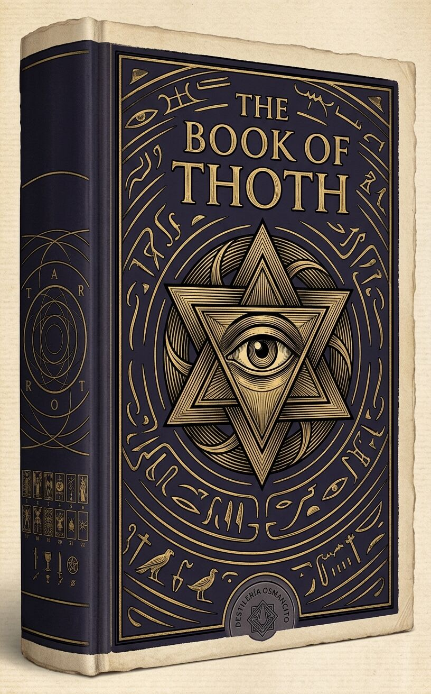
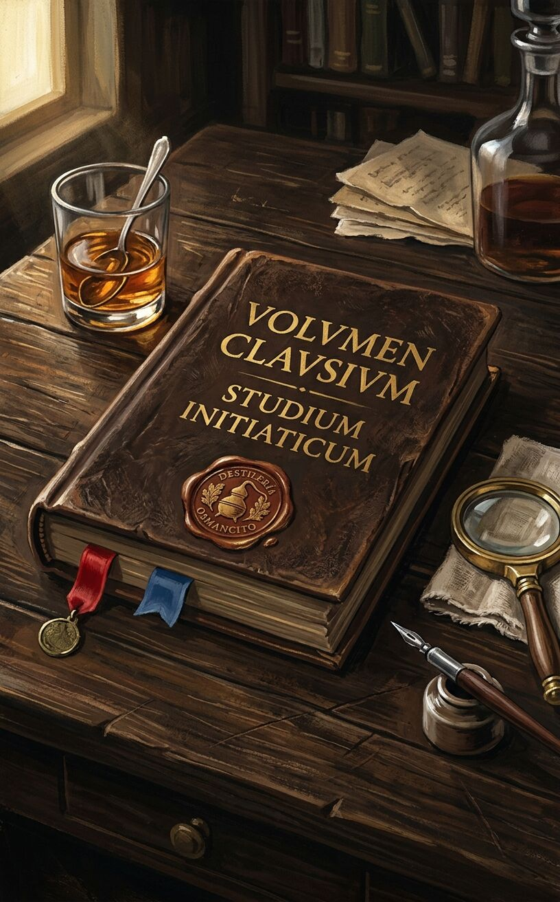
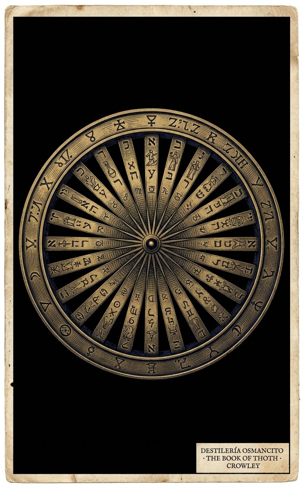
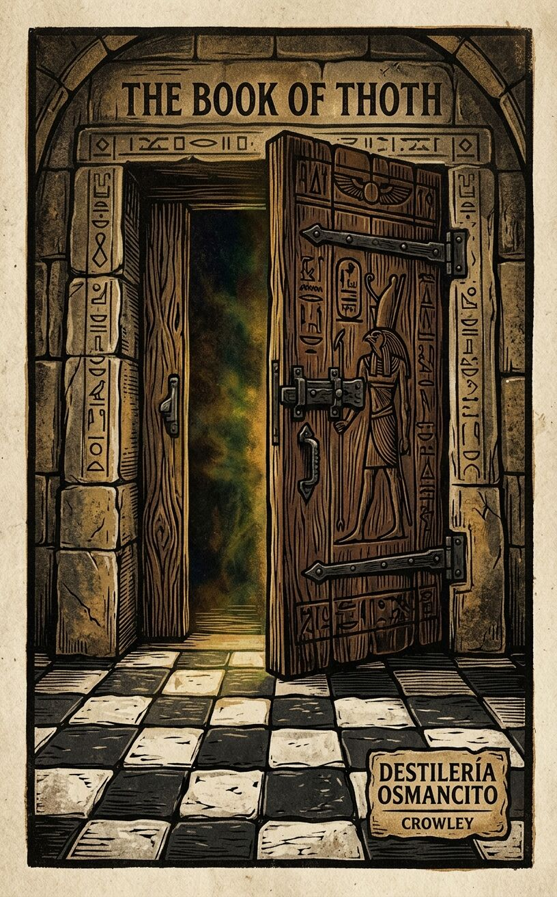
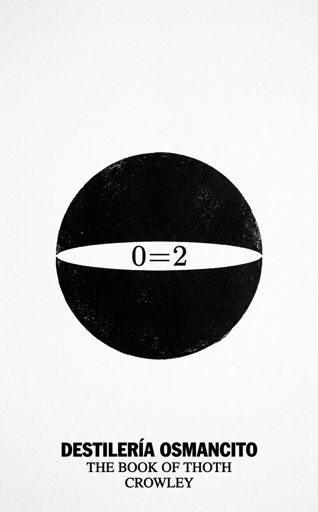

La Rueda y la Mano

El Libro de Thoth es un artefacto que se pliega sobre sí mismo: explica un sistema de símbolos usando ese mismo sistema como gramática. Cada carta del Tarot no es un signo que apunta a otra cosa —es un nudo donde la cosmología, la astrología, la Cábala y la psicología iniciática se atan sin que ninguna controle a las demás. Lo más perturbador del libro no es su esoterismo sino su coherencia: Crowley no inventa; organiza, y la organización produce la impresión de que el universo tenía que ser así.





Un mazo de 78 cartas impreso como libro: denso, frío al tacto, con olor a tinta y algo anterior a la tinta.
Hay libros que contienen información y libros que son instrumentos. The Book of Thoth es de los segundos: no se lo resume sin perderlo, no se lo traduce sin traicionarlo, no se lo parafrasea sin que algo esencial se escurra entre las palabras nuevas. Nombrar lo que este corpus es —un tratado iniciático, un manual de adivinación, una cosmología pictórica, una defensa de la Thelema— no es lo mismo que decir lo que hace: construir un sistema donde cada pieza justifica a las demás y el conjunto justifica al universo.
Título — The Book of Thoth: A Short Essay on the Tarot of the Egyptians
Autor — Aleister Crowley (Frater Perdurabo, Master Therion)
Año — 1944 (publicación original en edición limitada, 200 copias numeradas)
Género — Ensayo esotérico / Tratado iniciático / Manual de adivinación
Extensión estimada — ~77 500 palabras / ~310 páginas aprox. (a 250 palabras/página) / 3 partes principales + catálogo de 78 cartas individuales
Idioma original — Inglés
Palabra más frecuente con contenido — card (362 apariciones). El corpus declara ser sobre el Tarot —el sistema, la filosofía, la cosmología— pero la palabra más frecuente es la más material: la carta física. Esto confirma: Crowley ancla la metafísica más alta en un objeto que se puede tocar, barajar, consultar.
The Book of Thoth es el tratado que Aleister Crowley escribió para acompañar el Tarot Thoth, el mazo que diseñó junto a la pintora Lady Frieda Harris entre 1938 y 1943. El libro expone la filosofía qabálistica que sostiene el mazo, describe cada una de las 78 cartas con su atribución astrológica, numerológica y elemental, y cierra con un método de adivinación. Es, simultáneamente, un compendio de cosmología thelémita y una guía práctica de uso.
Aleister Crowley — el autor; Frater Perdurabo en la Orden Hermética del Alba Dorada, más tarde Master Therion; el “profeta” del Aeon de Horus y receptor del Libro de la Ley (1904); figura central e integradora de todas las referencias del corpus.
Lady Frieda Harris — pintora que ejecutó las cartas bajo las instrucciones de Crowley; ausente como voz pero presente en cada descripción visual de los Arcanos.
Eliphas Lévi — ocultista del siglo XIX citado como predecesor que conocía las verdaderas atribuciones del Tarot pero las ocultó deliberadamente por su juramento de secrecía.
Samuel Liddell Mathers — fundador efectivo del Alba Dorada; mencionado como quien reclamó contacto con los Jefes Secretos sin traer conocimiento nuevo verificable.
Thoth / Tahuti — deidad egipcia de la escritura y la sabiduría; referente mítico del mazo y del libro, nombrado en el título.
El corpus se divide en tres partes y un apéndice funcional.
Parte I — La teoría del Tarot es el ensayo filosófico central. Crowley establece primero que el Tarot no es un sistema arbitrario sino la representación pictórica de la estructura del universo según la Cábala. El Árbol de la Vida —con sus diez Sephiroth y veintidós Senderos— provee el esqueleto; los cuatro elementos (Fuego, Agua, Aire, Tierra) y los doce signos zodiacales, los siete planetas sagrados y las tres letras madre del alfabeto hebreo completan la carne del sistema. Crowley expone el “Arreglo de Nápoles”: la derivación lógica de los diez números desde el Cero, que establece por qué debe haber exactamente ese número de cartas de cada tipo. Introduce también la doctrina de Tetragrammaton (Padre-Madre-Hijo-Hija / Fuego-Agua-Aire-Tierra) que justifica los cuatro palos y las cuatro Cartas de la Corte. Una sección histórica detalla la cadena de transmisión: los manuscritos cifrados comprados en un mercadillo de Londres hacia 1884, la fundación del Alba Dorada, la recepción por Crowley del Libro de la Ley en 1904, y la resolución de las dos anomalías en la atribución de los Arcanos (el intercambio de VIII y XI, y el de IV y XVII). Crowley sostiene que esas correcciones —lejos de ser arbitrarias— producen una simetría perfecta en las atribuciones zodiacales, lo que constituye para él evidencia interna de la autenticidad del sistema.
Parte II — Los Atus de Tahuti es el catálogo de los veintidós Arcanos Mayores. Cada carta recibe: su número y título oficial; su atribución astrológica o elemental; una descripción de la imagen pintada por Harris; la doctrina thelémita que encarna; y el verso mnemónico de Crowley. El Loco (0) abre la secuencia como el Nada que precede al Uno; el Universo (XXI) la cierra como la síntesis material del sistema completo. Las cartas no son ilustraciones de ideas previas —son, según Crowley, individuos vivientes con carácter propio.
Parte III — Los palos cubre los dieciséis Arcanos de la Corte (Caballero, Reina, Príncipe, Princesa en los cuatro palos) y los cuarenta Arcanos Menores (Ases al Diez, también en los cuatro palos). Cada carta menor recibe su atribución Sephírica y planetaria: el Dos de Varitas corresponde a Chokmah en Fuego, con Marte en Aries; el Diez de Espadas, a Malkuth en Aire, con el Sol en Géminis. Los títulos de las cartas menores son aforísticos y a veces brutales: Sorrow, Ruin, Futility, Cruelty para las Espadas en su descenso; Success, Gain, Wealth para los Discos en sus tramos altos.
Apéndice funcional — El corpus cierra con el método de adivinación en cinco operaciones, los caracteres generales de los Arcanos en uso adivinatorio (breves aforismos de sentencia), y el largo poema invocatorio “Aiwaz”.
El arco del corpus no es narrativo sino arquitectónico: se construye de arriba abajo (del principio filosófico a la carta más concreta) y de adentro afuera (de la cosmología al objeto físico que se baraja). La tensión no está en un conflicto de personajes sino en la pretensión de que un mazo de 78 rectángulos de papel puede contener el universo —y en que Crowley lo demuestra con una coherencia que resulta difícil de refutar desde dentro del sistema.
El corpus llega con la temperatura de un templo en el que alguien dejó todas las puertas abiertas: frío, formal, ordenado —y sin embargo cargado. No es un libro que convenza: es un libro que exige que se opere con él. Su pedagogía no es la del argumento sino la del iniciado que coloca el instrumento en la mano del aprendiz y dice: úsalo hasta que lo entiendas. Lo que produce antes de ser analizado es una incomodidad específica: la sensación de que el sistema es más grande que uno, de que ya estaba funcionando antes de que uno llegara, y de que seguirá funcionando después.
Universalidad versus arbitrariedad — Crowley afirma que el Tarot es la única representación posible del universo: que su estructura no podría ser otra sin dejar de ser verdadera. Sin embargo, el sistema descansa en decisiones históricas contingentes (qué manuscritos se compraron, qué atribuciones se corrigieron, qué Aeon se declaró). El corpus trabaja sin cesar esta tensión —nunca la resuelve.
Autoridad iniciática versus acceso público — El libro fue publicado en edición de 200 copias numeradas para iniciados, pero su argumento central es que el Tarot es un instrumento de iluminación universal. ¿Para quién es este saber: para los elegidos que pueden operar con él o para cualquiera que lo consulte? El corpus produce esta pregunta sin plantearla directamente.
El símbolo como mapa versus el símbolo como territorio — Crowley insiste en que el Tarot no representa la realidad: es la realidad en forma pictórica. Pero cuanto más desarrolla esta tesis, más se parece el sistema a una cartografía muy elaborada de algo que solo existe en la cartografía. La diferencia entre el mapa y el territorio aquí colapsa —y no está claro si eso es el logro o el problema del corpus.
Todas las ruedas son una sola —la del Samsara, la de la Ley, la del Tarot, la de los cielos, la de la Vida. De todas ellas, solo la Rueda del Tarot opera conscientemente. Eso es el anuncio con el que abre el corpus: no una instrucción de lectura sino un desafío cosmológico. El libro afirma desde su primer párrafo que existe un instrumento para percibir la voluntad que mueve el universo, que ese instrumento tiene 78 piezas, y que están en tus manos.
La pregunta que el corpus se impone responder —y que sostiene su arquitectura entera— es si el Tarot es arbitrario. Su respuesta es que no puede serlo. El origen histórico de las cartas es deliberadamente descartado: “El origen del Tarot es perfectamente irrelevante, aunque fuera cierto. Debe sostenerse o caer como sistema por sus propios méritos.” Lo que importa no es de dónde vino sino si funciona: si la correspondencia entre los 78 elementos del mazo y la estructura del universo según la Cábala es tan precisa que la idea del accidente se vuelve matemáticamente absurda.
Para demostrar esto, Crowley despliega el Arreglo de Nápoles —la derivación lógica de los diez números desde el Cero. Es el núcleo filosófico del libro y uno de sus pasajes más extrañamente bellos. Parte de la Nada absoluta, que no es la ausencia de algo sino algo mucho más activo: una Nada compuesta por la anulación de dos opuestos imaginarios. De esa tensión surge el Punto, que no tiene partes ni magnitud, solo posición. Pero una posición no significa nada sin otra posición con la cual compararla: aparece el Dos, la Línea. La Línea tampoco dice mucho —no hay medida de longitud todavía, solo la constatación de que hay dos cosas. Para discriminarlas hace falta una tercera: nace la Superficie, el Triángulo, toda la geometría plana. Aquí se detiene el texto un momento: hay definiciones, pero no hay sustancia. Ninguna realidad aún. Solo un mundo ideal e imaginario. Entonces llega lo que el corpus llama el Abismo: el salto de lo ideal a lo actual. El cuarto punto, fuera del plano, produce el Sólido. Por primera vez hay materia. Pero la materia sin movimiento es estasis, y nada puede ocurrir. El Cinco postula el Movimiento, que implica el Tiempo, que hace posibles los eventos. El Seis es el punto que puede ser consciente de sí mismo: tiene pasado, presente y futuro, puede definirse en términos de lo anterior. Los Siete, Ocho y Nueve traen, del sistema vedántico, las tres cualidades mínimas que un punto necesita para tener experiencia real de sí mismo: Sat, el Ser; Chit, el Pensamiento; Ananda, la Dicha. El Diez es la primera idea de realidad tal como la conoce la mente —el conjunto de estos nueve desarrollos sucesivos desde el Cero.
Este es el sistema que justifica los cuarenta Arcanos Menores: uno por cada combinación de los diez Sephiroth con los cuatro palos. No es una convención editorial. Es, según Crowley, la única forma posible en que podría estar hecho el universo.
El mismo rigor lógico se aplica a los palos y a las Cartas de la Corte. Las cuatro figuras —Caballero, Reina, Príncipe, Princesa— no son caprichosas sino la representación de Tetragrammaton: Padre, Madre, Hijo, Hija, o Fuego, Agua, Aire, Tierra. Aquí el corpus introduce una distinción que merece detenerse: la diferencia entre el sistema hebreo y el pagano de concebir esta cuádruple relación. El hebreo es lineal e irreversible —Padre y Madre producen Hijo e Hija, punto final. Es un esquema concreto y limitado, con su Principio sin causa y su Fin estéril. El pagano es circular, autogenerado, autoalimentado, autorenovado. Es una rueda en cuyo borde están Padre-Madre-Hijo-Hija; giran en torno al eje inmóvil del Cero; se unen a voluntad; se transforman unos en otros; no hay Principio ni Fin. La ecuación “Nada = Mucho = Dos = Uno = Todo = Nada” está implícita en cada modo de ser del sistema. El corpus necesita ambos para funcionar, y su coexistencia es una de sus tensiones productivas.
Los veintidós Arcanos Mayores tienen una naturaleza distinta a todo lo anterior. Los Sephiroth son cosas-en-sí-mismas, en sentido casi kantiano. Las líneas que los unen —los Atu— son fuerzas de naturaleza menos completa, menos abstractas. Y sin embargo, es en ellas donde el Tarot revela su carácter más extraño. El corpus nombra sus títulos —El Loco, el Mago, la Suma Sacerdotisa, La Emperatriz, El Emperador, El Hierofante, Los Amantes, El Carro, La Lujuria, La Rueda de la Fortuna, El Ajuste, El Colgado, La Muerte, El Arte, El Diablo, La Casa de Dios, La Estrella, La Luna, El Sol, El Eón, El Universo— y entonces hace algo inesperado: sugiere que el Tarot podría ser propaganda. No una representación impersonal del universo al estilo del Yi King, sino un mensaje deliberado de los Jefes Secretos de la Gran Orden que custodia los destinos humanos, diseñado para establecer ciertas doctrinas particulares y declarar ciertos modos de operar propios a la situación política del momento. Un diccionario difiere de una composición literaria. Los Arcanos Mayores son la composición literaria; los menores son el diccionario.
El ejemplo más vívido de este carácter propagandístico es el Arca XX, que en el mazo tradicional se llamaba “El Ángel” o “El Juicio Final” —un ángel tocando la trompeta, los muertos resucitando. Crowley lo reemplaza por El Eón, y la razón que da es que el mundo ya fue destruido por el fuego en 1904, cuando el dios ígneo Horus tomó el lugar del dios aéreo Osiris como Hierofante del ciclo cósmico. El mazo tradicional era correcto para el Aeon de Osiris; el Thoth es correcto para el de Horus. El corpus no presenta esto como metáfora. Lo presenta como hecho calendárico.
De los Arcanos Mayores individuales, el que mejor ejemplifica el método de Crowley es El Loco —Atu 0. Su análisis ocupa más espacio que cualquier otra carta: no porque sea más importante en términos jerárquicos, sino porque el Cero es filosóficamente el más difícil. El Loco es el Espíritu que precede a toda manifestación, el “germen original del ser que nada puede describir”. El corpus recorre sus encarnaciones históricas: el Hombre Verde de los festivales de primavera, el Gran Tonto de los celtas —figura de salvación, porque la razón es un callejón sin salida y solo la locura divina ofrece salida—, el Cocodrilo (Mako, hijo de Set), Hoor-Pa-Kraat el dios del silencio, Dioniso Zagreo, Baphomet. Cada tradición captura un aspecto; ninguna lo captura completo. Y luego, la formulación más extraña del corpus: cuando el sistema necesita describir la realidad completa, pone al Loco —el Cero, la Nada— en el principio de la secuencia numérica, no entre el XX y el XXI como hacía la tradición. Esto no es una corrección editorial. Es la afirmación de que los matemáticos tenían razón desde el principio, y que el sistema iniciático lo sabía y lo ocultó deliberadamente.
El otro extremo de la secuencia es igualmente revelador. El Universo —Atu XXI— es la carta final, complemento del Loco: juntas deletrean ATH, la palabra hebrea para “esencia”. El principio fue Nada; el fin es también Nada, pero Nada en su expansión completa. El texto que el corpus cita para esta carta no es de Crowley sino de una visión anterior: “Esta es la Hija del Rey. Esta es la Virgen de la Eternidad. Esta es aquella que el Santo ha arrebatado al Gigante Tiempo, y el premio de quienes han superado el Espacio. El pensamiento no puede penetrar la gloria que la defiende, porque el pensamiento queda muerto ante su presencia. La memoria es en blanco, y en los libros más antiguos de la Magia no hay palabras para conjurarla ni adoraciones para alabarla.” La única carta del corpus cuya descripción reconoce que el lenguaje ha llegado a su límite.
El Diez de Discos —la única carta menor que produce un cierre genuinamente filosófico— completa el ciclo de descenso a la materia: la fuerza completamente gastada resulta en muerte. Pero en esa muerte está latente la única posibilidad de salida: la Voluntad del Padre, el Gran Arquitecto, el Gran Geómetra. Mercurio en Virgo es Conjunctio: la atracción del triángulo descendente (femenino) hacia el ascendente (masculino), su unión que forma Capricornio —el signo del renacimiento solar. Es el jeroglífico del ciclo de regeneración. El corpus termina su catálogo donde empezó: en el movimiento circular que no tiene principio ni fin.
Valor. El Libro de Thoth merece su lugar, pero no como guía de adivinación ni como historia del ocultismo: merece su lugar como experimento filosófico extremo. La pregunta de si un sistema cerrado puede contener el universo —y si la coherencia interna es evidencia de verdad externa— no es trivial. Crowley la plantea con más rigor de lo que la mayoría de sus críticos le concede.
Goce. Se disfruta en tramos, y en los tramos equivocados. Lo que se lee con placer no es el catálogo de los Arcanos Menores —que se padece con respeto— sino los pasajes donde Crowley rompe el tono doctrinal y algo genuinamente raro aparece: la rueda que gira por puro placer de quien la gira, el Loco como único capaz de salvar porque no es razonable, la carta final cuyo texto reconoce que el lenguaje se ha roto. En esos momentos el libro no se parece a ningún otro.
El corpus se abre con un epígrafe del Libro de las Mentiras de Crowley. Enumera cinco ruedas —la del Samsara, la de la Ley, la del Tarot, la de los Cielos, la de la Vida— y declara que son una sola, pero que de todas ellas únicamente la Rueda del Tarot opera conscientemente para el practicante humano. La instrucción que sigue no es de lectura sino de práctica: el estudiante debe meditar en la rueda durante largo tiempo, ver cómo cada carta surge necesariamente de la anterior, desde el Loco hasta el Diez de Monedas. Cuando conozca la Rueda del Destino en su totalidad, podrá percibir la Voluntad que la movió primero. El epígrafe añade, entre corchetes: “No hay primero ni último.” Con eso se abre el libro.
El corpus comienza con una descripción técnica del mazo: setenta y ocho cartas, cuatro palos derivados de las modernas cartas de juego pero con cuatro figuras de corte en lugar de tres, y veintidós cartas adicionales llamadas Triunfos o Arcanos Mayores, cada una con su imagen simbólica y su título. La primera declaración de método es decisiva: la disposición del mazo no es arbitraria. Está determinada por la estructura del universo y del sistema solar tal como los simboliza la Cábala. Esta afirmación no se apoya aún con ninguna prueba; se anuncia como el tema que el resto del corpus demostrará.
El origen histórico del Tarot se declara de escasa importancia para el argumento, y se repasa brevemente: el mazo existe en su forma clásica desde al menos el siglo XIV; los gitanos lo usaban para adivinación; algunos lo atribuyeron a Egipto, otros a la India. La única teoría que importa, según el corpus, es que el Tarot es una representación simbólica del universo basada en la Cábala. Se introduce entonces la Gematría: la ciencia que vincula el valor numérico de las palabras hebreas para establecer correspondencias. El ejemplo ofrecido es AHBH (amor) y AChD (unidad), ambas con valor trece, lo que se interpreta como “la naturaleza de la unidad es el amor”. Una segunda cadena de correspondencias desarrolla la sigla ThROA —el Tarot como notariqon del Torah hebreo y de ThROA (la Puerta)— cuyo valor numérico lleva a la doctrina central del corpus: 0=2, la única explicación filosófica satisfactoria del cosmos.
Eliphas Lévi. El corpus introduce a Alphonse Louis Constant (Eliphas Lévi Zahed), qabbalista y esteta del siglo XIX, como el primer eslabón documentado en la cadena de transmisión del Tarot iniciático. Lévi, según Crowley, conocía las atribuciones correctas de los Triunfos a las letras del alfabeto hebreo pero se consideraba obligado, por su juramento a la Orden de Iniciados, a ocultarlas deliberadamente. La evidencia que ofrece el corpus es interna al propio texto de Lévi: el hombre dividió su obra principal en dos partes de veintidós capítulos cada una —uno por cada Triunfo— y las correspondencias de los capítulos con las cartas son correctas pero están transpuestas. Esta transposición solo se explica, argumenta Crowley, como camuflaje deliberado.
Los Manuscritos Cifrados. Hacia 1884 o 1885, uno de tres hombres del Quatuor Coronati Lodge of Freemasonry —el Dr. Wynn Westcott, el Dr. Woodford o el Dr. Woodman; el corpus admite cierta disputa sobre cuál de ellos— compró un libro viejo, ya fuera de un librero oscuro, de un puestero callejero o de una biblioteca. En ese libro había papeles sueltos escritos en cifra. Al descifrarlos resultaron ser el material fundacional de una sociedad secreta de iniciación ritual. Entre los documentos había una atribución de los Triunfos del Tarot a las letras del alfabeto hebreo. El corpus sostiene que esta atribución coincide con la que Lévi conocía pero había ocultado, lo que confirma la existencia de una tradición continua.
La Orden Hermética del Alba Dorada. Samuel Liddell Mathers, el genio práctico que hizo posible la fundación de la Orden en 1886, maniobró para asumir su jefatura tras la muerte de Fräulein Sprengel, la autoridad alemana que había autorizado el trabajo de grupo. Cuando Mathers anunció haber establecido contacto con los Jefes Secretos de la Orden, la única prueba debía ser interna: nuevo conocimiento de importancia procedente de ese contacto. El corpus es directo: ese conocimiento no llegó. Lo que Mathers presentó como revelación pudo haberse obtenido por medios normales del British Museum. La decepción y las intrigas resultantes destruyeron la Orden en su forma existente en 1900.
La Recepción del Libro de la Ley. En 1904, Frater Perdurabo (Crowley) logró el contacto con los Jefes Secretos que Mathers había reclamado sin evidencia. Los detalles completos se documentan en El Equinoccio de los Dioses. El corpus no justifica aquí esta afirmación mediante argumento externo; señala que la evidencia es interna al manuscrito del Libro de la Ley y no dependería de la veracidad de ninguno de los testigos humanos del evento.
Las Anomalías de Numeración. En la tradición ordinaria, los Triunfos VIII y XI estaban incorrectamente atribuidos: el ocho llevaba la imagen de una mujer con espada y balanzas (obviamente Libra), pero se le numeraba como la carta de Leo; el once mostraba una mujer con un león (obviamente Leo), pero se le numeraba como la carta de Libra. Al colocar el Loco (0) en su lugar matemáticamente correcto al inicio de la secuencia, y al intercambiar las cartas VIII y XI, las atribuciones zodiacales caen en un orden natural que el corpus describe como inequívocamente correcto. Una segunda anomalía, más tardía, involucra La Estrella (XVII) y El Emperador (IV). Durante la recepción del Libro de la Ley, llegó una interpolación: “J no es la Estrella.” Crowley tardó casi veinte años en resolver el acertijo. La solución: Tzaddi corresponde al Emperador, no a la Estrella, y las posiciones XVII y IV deben intercambiarse. El resultado es una simetría zodiacal perfecta en ambos extremos del sistema, que el corpus ofrece como la prueba más convincente posible de la autenticidad del Libro de la Ley como mensaje genuino de los Jefes Secretos.
El corpus introduce la Cábala como materia simple que ninguna mente inteligente ordinaria debería encontrar difícil, y procede a desarrollar el Arreglo de Nápoles: la derivación lógica de los diez números desde el Cero. El punto de partida es el Cero Absoluto, que no es la ausencia de algo sino algo más activo: una Nada que se interpreta como la anulación de dos opuestos imaginarios. De esa tensión surge el Punto, sin partes ni magnitud, solo posición. Una posición sola no es describible: hace falta otra, y aparece el Dos, la Línea. La Línea tampoco dice mucho —no hay medida de longitud, solo la constatación de que hay dos cosas distinguibles. Para discriminarlas se necesita una tercera: aparece la Superficie, el Triángulo, y con él toda la geometría plana. En este punto el corpus detiene la cadena para observar: hay definiciones, pero no sustancia. El mundo sigue siendo puramente ideal e imaginario. El cuarto punto, fuera del plano, produce el Sólido —el Abismo cruzado—, y por primera vez hay materia. Pero la materia sin movimiento es estasis: nada ocurre. El Cinco postula el Movimiento, que implica el Tiempo, que hace posibles los eventos. El Seis es el primer punto autoconsciente: tiene pasado, presente y futuro. Los Siete, Ocho y Nueve incorporan, del sistema vedántico, las tres cualidades que un punto necesita para tener experiencia real de sí mismo: Sat (el Ser), Chit (el Pensamiento), Ananda (la Dicha). El Diez es la primera idea de realidad tal como la conoce la mente —la suma de los nueve desarrollos sucesivos desde el Cero. Estos diez números son las Sephiroth, los “Números”, y su representación en el Tarot son los cuarenta Arcanos Menores.
Las dieciséis Cartas de la Corte representan otro aspecto del sistema. El corpus introduce la fórmula de Tetragrammaton: Padre, Madre, Hijo, Hija, o Fuego, Agua, Aire, Tierra. Aquí se establece la distinción entre el sistema hebreo y el pagano. El hebreo es lineal: Padre y Madre producen Hijo e Hija, y allí termina. Es un esquema concreto y limitado. El pagano es circular, autogenerado: una rueda en cuyo borde están los cuatro; giran en torno al eje del Cero, se unen y transforman a voluntad, sin principio ni fin. La ecuación “Nada = Mucho = Dos = Uno = Todo = Nada” es implícita en cada modo de ser del sistema pagano. El corpus necesita ambos para funcionar. Los cuatro palos —Varitas (Fuego), Copas (Agua), Espadas (Aire), Discos (Tierra)— corresponden a esta cuádruple división. La razón por la que hay cuatro cartas de corte en lugar de tres también queda explicada: representan Padre, Madre, Hijo e Hija, lo cual hace cuatro por necesidad lógica.
El corpus describe el Árbol de la Vida: diez números conectados por veintidós senderos, cada uno atribuido a una letra del alfabeto hebreo (tres Letras Madre para los elementos, siete Letras Dobles para los planetas, doce Letras Simples para los signos del Zodíaco). Los Arcanos Menores representan las Sephiroth; las Cartas de la Corte, los elementos en sus sub-elementos. Los veintidós Triunfos representan las fuerzas entre las Sephiroth, sus características son menos filosóficas y más artísticas que las de las otras cartas. Sus títulos —El Loco, el Mago, la Suma Sacerdotisa, y el resto— no son representaciones impersonales del universo. Son más como propaganda. Los Jefes Secretos de la Gran Orden parecen haber querido poner de relieve ciertos aspectos particulares del universo, establecer ciertas doctrinas, declarar ciertos modos de operar propios a la situación política del momento. Los Triunfos difieren de los Arcanos Menores como una composición literaria difiere de un diccionario.
El análisis del Loco es el más largo del corpus. La carta se atribuye a la letra Aleph y al elemento Aire; su número es el Cero, matemáticamente anterior a toda la secuencia. El corpus recorre sus manifestaciones históricas sucesivas. El Hombre Verde de los festivales de primavera: personificación de la influencia misteriosa que produce los fenómenos de la estación, asociada a la irresponsabilidad, al ensueño, al romanticismo. El Gran Tonto de los celtas (Dalua): aquí ya hay doctrina. La razón es un callejón sin salida; la salvación no puede obtenerse en términos razonables; solo la locura divina ofrece salida. El corpus recorre casos: Mahoma epiléptico, Napoleón megalómano, Marx medio loco en un desván de Soho. Lo que tienen en común es precisamente la locura —la inspiración. El Loco es la única posibilidad de salvador porque su paternidad ordinaria queda en duda: debe ser hijo de un dios disfrazado de animal. El corpus traza el recorrido desde Rómulo y Remo hasta el Espíritu Santo en forma de paloma y señala la “casaca de muchos colores” de José y de Jesús como símbolo del hombre de bufón que saca a su pueblo del cautiverio. La figura del Arlequín aparece como burla de la Sagrada Familia: Pantalón, Arlequín, Payaso y Colombina. El corpus enumera además los aspectos del Loco como crocodilo (Mako hijo de Set), como Hoor-Pa-Kraat el dios del silencio, como Dioniso Zagreo, como Baphomet, como el espíritu que precede a toda manifestación.
Atribuido a Mercurio y a la letra Beth. Es el primer número, el primero en emerger de la Nada. El corpus describe su figura —el Mago frente a su altar con los cuatro elementos, sosteniendo la varita de Hermes— y lo identifica con Thoth, con Hermes, con el Logos. Se incluye un extenso extracto del Paris Working que identifica a Cristo con Mercurio: la misma figura del mensajero, los mismos misterios de nacimiento, el descenso a los infiernos como guía de almas, la resurrección a los tres días porque Mercurio tarda ese tiempo en hacerse visible tras separarse del Sol. El corpus observa que toda imagen es necesariamente falsa como tal, y que el movimiento perpetuo de Mercurio hace imposible cualquier representación estática: la carta es apenas una nota mnemónica.
Atribuida a la Luna y a la letra Gimel. Es la manifestación femenina más espiritual: el menstruo de la manifestación, la diosa Nuit como posibilidad de Forma. Su cuerpo forma el arco de un arco y flecha; en su regazo reposa el cristal de luna de la intuición; abajo, formas nacientes, vórtices, cristales, semillas. El corpus incluye el capítulo “Dust Devils” del Libro de las Mentiras: en el viento de la mente surge la turbulencia llamada Yo; todos los pensamientos caen como lluvia estéril; el desierto es el Abismo en el que está el universo; los viajeros van del Gran Mar al Gran Mar derramando agua; algún día irrigarán el desierto. La Suma Sacerdotisa es el único vínculo entre los mundos arquetípico y formativo. Para el adepto que ya ha alcanzado el conocimiento y conversación del Ángel Guardián, este es el sendero que conduce hacia arriba.
Atribuida a Venus y a la letra Daleth (una puerta). Une a Chokmah con Binah, al Padre con la Madre. El corpus declara que el símbolo alquímico de Venus es el único de los símbolos planetarios que comprende todas las Sephiroth del Árbol, lo que implica que la fórmula fundamental del universo es el Amor. La carta la muestra como la Gran Madre en su manifestación más general: combina lo más alto espiritual con lo más bajo material. Representa la Sal en el tríptico alquímico: el principio inactivo de la Naturaleza, la materia que debe ser energizada por el Azufre para mantener el equilibrio giratorio del universo. En su trono hay chispas y palomas; en su manto hay abejas. El Pelícano que aparece en el heraldo la identifica con la Gran Madre cuya descendencia es también su hija, en la continuidad de la sangre que une todas las formas de la Naturaleza.
Atribuido a Aries y, tras la corrección del Libro de la Ley, a la letra Tzaddi. Su intercambio con La Estrella produce la simetría perfecta en el sistema. El corpus señala la etimología: Tzar, Czar, Kaiser, Caesar, Senior, Seigneur, Señor, Signor, Sir —todas las palabras de autoridad real en las lenguas europeas comparten el mismo origen fonético que Tzaddi. El Emperador lleva una armadura bajo su manto; es la guerra en su aspecto más noble, el poder soberano.
Atribuido a Tauro y a la letra Vau. El corpus lo describe como el sumo sacerdote que transmite la sabiduría iniciática adaptada a la inteligencia del segundo orden de iniciados. El gran hierofante, ante un símbolo demasiado sublime para la comprensión ordinaria, está obligado por su oficio a “disminuir el mensaje para el perro” —exhibir un símbolo de segundo orden apropiado a la capacidad intelectual de su congregación particular. La verdad aparece así ante el vulgo como fábula, parábola, leyenda o credo.
Atribuido a Géminis y a la letra Zain. El corpus señala que su título secreto es “Los Hijos de la Voz, el Oráculo de los Dioses Poderosos”. El sendero que representa une el número 3 con el 6: la intuición espiritual (Binah) con la personalidad humana (Tiphareth). La influencia del 3 sobre el 6 es la de la voz intuitiva o inspiracional; es la iluminación de la mente y el corazón por la Gran Madre. La carta es también el complemento de Atu XIV (Arte), que pertenece al signo opuesto de Sagitario.
Atribuido a Cáncer y a la letra Cheth. El cochero está entronizado en el carro más que conduciéndolo, porque el sistema de progresión está perfectamente equilibrado. Su única función es portar el Santo Grial —una copa de amatista pura cuyo color es el de Júpiter pero cuya forma sugiere la luna llena y el Gran Mar de Binah. En el centro hay sangre radiante; la vida espiritual está implícita. El carro es tirado por cuatro esfinges compuestas de los cuatro Querubines —el Toro, el León, el Águila y el Hombre— en las que los elementos están cruzados para representar los dieciséis sub-elementos. El corpus incluye aquí la visión de Babalon tomada de La Visión y la Voz: la copa cuya sangre es la de los santos, la gloria de la Mujer Escarlata, Babilonia la Madre de Abominaciones que mezcla en su copa la sangre de todo lo que vive para elaborar el vino del sacramento que rejuvenecerá al Padre.
El título antiguo era “La Justicia”. El corpus rechaza ese nombre: la justicia es un concepto humano y relativo; la Naturaleza no es justa, es exacta. La carta representa Libra, regida por Venus con Saturno exaltado. Su simbolismo más elevado la empareja con el Loco: las letras Aleph y Lamed constituyen la clave secreta del Libro de la Ley, base de un sistema qabbalístico completo cuyo contenido el corpus declara no haber sido aún revelado. La figura es una mujer joven y esbelta en puntillas, coronada con las plumas de avestruz de Maat. Sostiene la espada fálica entre los muslos. Es la Mujer Satisfecha; es Karma; es la esfinge sin secreto, porque es puramente una cuestión de cálculo. Su acción es la de absorber, transmutar y pasar la experiencia hacia su siguiente manifestación.
Atribuido a Virgo y a la letra Yod (la Mano). El corpus señala que Yod es la primera letra del nombre Tetragrammaton, representa al Padre, y su representante en la vida física es el espermatozoide. El Ermitaño es el padre en su forma más elevada: el Logos, el Creador, el Mercurio más alto. Su figura evoca la forma de la letra Yod; su linterna contiene el Sol; contempla el Huevo Órfico rodeado de la serpiente iridiscente. El corpus añade: en la Cábala, Virgo es el sendero que une el Sol con la Luna, y Mercurio —que tanto rige como está exaltado en Virgo— es Psicopompos, el guía de las almas en los mundos inferiores. Detrás del Ermitaño camina Cerbero.
Atribuida a Júpiter y a la letra Kaph (la palma de la mano). Representa el universo en su aspecto de cambio continuo de estado. En la rueda aparecen tres figuras: la Esfinge armada (Azufre, Sattvas), Hermanubis trepando por el lado izquierdo (Mercurio, Rajas), Tifón precipitándose hacia abajo por el derecho (Sal, Tamas). El corpus incorpora un pasaje de La Visión y la Voz: un pavo real llena el aire; se disuelve en ángeles; los ángeles se disuelven en arcángeles con trompetas; todo colapsa en una rueda que gira a velocidad increíble. Cuarenta y nueve ruedas puestas en diferentes ángulos forman una esfera; cada rueda tiene cuarenta y nueve radios. La voz dice: “Es un dios jocundo y rubicundo, y su risa es la vibración de todo lo que existe.” Una mano gira la rueda por puro placer —el corpus dice “seria mejor decir: por diversión”.
El título antiguo era “La Fuerza”. La carta representa el Aeon de Horus: la mujer y el león-serpiente de siete cabezas. El corpus recorre las tradiciones: los videntes del Aeon de Osiris vieron venir el Aeon de Horus y lo contemplaron con horror, sin entender la precesión de los Aeons, viendo todo cambio como catástrofe. De ahí los anatemas contra la Bestia y la Mujer Escarlata en el Apocalipsis. La mujer cabalga a horcajadas sobre la Bestia; en la mano izquierda las riendas, en la derecha la copa del Santo Grial en llamas. Hay en la carta una borrachera divina o éxtasis: la mujer está más que un poco ebria y más que un poco loca; el león también está encendido de lujuria. Esto significa que la energía aquí representada es del tipo primitivo y creativo, completamente independiente de la crítica de la razón.
Atribuido al elemento Agua y a la letra Mem. En el Aeon de Osiris, representaba la fórmula suprema de la adeptitud: el descenso de la luz hacia la oscuridad para redimirla. Las piernas cruzadas forman un ángulo recto; los brazos extendidos a sesenta grados forman un triángulo equilátero —el símbolo de la Cruz surmontada por el Triángulo. El corpus es tajante: la idea de sacrificio es, en el análisis final, una idea equivocada. El Libro de la Ley dice: “Doy placeres inimaginables en la tierra: certeza, no fe, mientras en vida; al morir; paz indecible, descanso, éxtasis; ni exijo nada en sacrificio.” En el nuevo Aeon, esta carta es solo un cenotafio. Dice: “Si alguna vez las cosas se ponen tan mal de nuevo, esta es la forma de arreglarlas.” Pero si hay que arreglarlas, es porque están muy mal.
Atribuida a Escorpio y a la letra Nun (un pez). Explica la putrefacción alquímica: la serie de cambios químicos que desarrollan la forma final de vida desde la semilla latente en el Huevo Órfico. El signo de Escorpio se divide en tres partes: el Escorpión (putrefacción en su forma más baja, la cepa del entorno se vuelve insoportable y el elemento atacado acepta el cambio), la Serpiente (sagrada, señora de la vida y la muerte, cuya progresión ondulante sugiere las dos fases que llamamos vida y muerte), y el Águila (exaltación sobre la materia sólida, los elementos más puros se liberan como vapor). La figura de la carta es un esqueleto con guadaña, coronado con la corona de Osiris. Crea burbujas con el barrido de su guadaña; en esas burbujas comienzan a tomar forma las nuevas formas que genera en su danza.
Título antiguo: La Templanza. Complemento y cumplimiento de Atu VI (Los Amantes). Diana-Sagitario, la arquera, cuya flecha perfora el arco iris. El corpus describe la figura: una mujer que vierte fuego en el agua y agua en el fuego —exactamente la operación contraria a lo que el sentido común esperaría, y exactamente la operación alquímica correcta. El proceso se llama Solve et Coagula: la descomposición de lo fijo y la fijación de lo volátil. La Gran Obra, la piedra filosofal. Las águilas se convierten en leones; los leones, en águilas. Esta carta es la continuación directa de Atu XI (La Lujuria) y la solución de Atu XII (El Colgado).
Atribuido a Capricornio y a la letra A’ain (el Ojo). El corpus rechaza la demonología popular: esta carta no representa el Mal sino la fuerza creativa masculina en su forma más secreta, el Dios Caprino de los Sabats, el único Dios que los pueblos de la Europa medieval conocieron como real e inmediato. Es Baphomet, el Pan del universo, y el corpus declara que todo el mundo del que somos conscientes en nuestra existencia ordinaria es ilusión, la pantalla detrás de la cual se esconde la realidad divina. El dios cornudo es el símbolo de la unidad de dios y hombre.
Atribuida a Marte y a la letra Peh (la Boca). El corpus observa que puede interpretarse también como una Unidad de supremo logro y deleite. Los rayos que destruyen también engendran; la carta puede verse como el Ojo de Shiva cuya apertura aniquila el universo, o como la rueda en el carro de Jagannath cuyos devotos alcanzan la perfección en el momento en que los aplasta.
Atribuida a Acuario y, tras la corrección, a la letra Heh. Representa a Nuit, la diosa estrellada. El corpus cita el Libro de la Ley: “Soy el Espacio Infinito y las Estrellas Infinitas del mismo.” Vierte energía desde dos vasijas —una sobre sí misma, otra sobre la tierra— en el glifo de la Economía del Universo: constantemente vierte energía y constantemente la reabsorbe. Es la realización del Movimiento Perpetuo, que nunca es verdad de ninguna parte pero necesariamente lo es del todo. El principio de Carnot (segunda ley de la termodinámica) solo es verdad en ecuaciones finitas.
Atribuida a Piscis y a la letra Qoph (la parte trasera de la cabeza). Es medianoche. El escarabajo sagrado, Khephra, lleva el disco solar a través de la oscuridad y la amargura del invierno. Sobre la superficie del agua hay un paisaje siniestro: un sendero o arroyo de suero teñido de sangre que fluye entre dos montañas estériles; nueve gotas de sangre impura caen sobre él desde la Luna. Esta es la luna menguante, la luna de la brujería y los actos abominables. Guarda el camino el dios Anubis. El corpus afirma: se necesita valor inconquistable para comenzar a caminar este sendero. La respuesta a todo horror que asalte el alma en este tránsito es siempre la misma: “¡Qué espléndida es la Aventura!”
Atribuido al Sol y a la letra Resh. Es una de las cartas más simples del corpus. Representa a Heru-ra-ha, el Señor del Nuevo Aeon, en su manifestación como el Sol espiritual, moral y físico. Es el Señor de la Luz, la Vida, la Libertad y el Amor. El Aeon tiene como propósito la emancipación completa de la raza humana. Dos niños —varón y hembra, eternamente jóvenes, sin vergüenza ni inocencia perdida— danzan fuera del muro que rodea el montículo verde. El corpus observa la paradoja cromática: el montículo es verde donde uno esperaría que fuera rojo, y el muro es rojo donde uno esperaría verde o azul.
El corpus declara que en esta carta fue necesario apartarse completamente de la tradición para continuar esa tradición. La carta antigua —El Ángel o El Juicio Final— representaba la destrucción del mundo por el fuego. Esa destrucción se cumplió en 1904, cuando el dios ígneo Horus tomó el lugar del dios aéreo Osiris. La nueva carta se basa en la Estela de la Revelación. En la parte superior, el cuerpo de Nuit, la diosa estrellada —categoría de posibilidad ilimitada. Su compañero es Hadit, el punto de vista ubicuo, representado como un globo de fuego con alas. De su unión nace Heru-ra-ha en su doble forma: Ra-hoor-khuit (extrovertido) y Hoor-pa-kraat (introvertido). En la parte inferior aparece la letra Shin en forma de flor, con tres figuras humanas en sus tres Yods ascendiendo para participar en la esencia del nuevo Aeon. Detrás, el signo de Libra como presagio del Aeon siguiente, que el corpus estima comenzará en unos dos mil años.
El corpus afirma que esta carta, con el Loco, deletrea la palabra ATH, cuya significación es Esencia. El principio fue Nada; el fin es también Nada pero en su expansión completa. La descripción más completa viene de una visión antigua que el corpus cita sin autor: “Esta es la Hija del Rey. Esta es la Virgen de la Eternidad. Esta es aquella que el Santo ha arrebatado al Gigante Tiempo, y el premio de quienes han superado el Espacio. El pensamiento no puede penetrar la gloria que la defiende, pues el pensamiento queda muerto ante su presencia. La memoria es en blanco, y en los libros más antiguos de la Magia no hay palabras para conjurarla ni adoraciones para alabarla. La voluntad se dobla como una caña en las tempestades que barren los bordes de su reino, y la imaginación no puede figurarse ni siquiera un pétalo de los lirios sobre los que ella está de pie en el lago de cristal, en el mar de vidrio.” El corpus usa para esta carta la única descripción de todo el libro en la que el lenguaje reconoce haber llegado a su límite.
Los Caballeros representan el Yod de Tetragrammaton: la parte más sublime, original y activa de la energía de cada elemento. Su acción es veloz y violenta, pero transitoria. Las Reinas representan la Heh: reciben, fermentan y transmiten la energía original. Los Príncipes representan la Vau: son el hijo activo de la Reina y el Caballero, el registro publicado de lo que se hizo en secreto, y también el Dios Moribundo que redime a su Novia en la hora de su asesinato. Las Princesas representan la Heh final: la emisión última de la energía original en su cristalización, y simultáneamente la reabsorción que equilibra el sistema. Tienen el poder de “volarlo todo por los aires”, de renunciar a todo y comenzar de nuevo. No tienen atribución zodiacal.
El corpus describe las cualidades morales de cada figura de corte con notable precisión psicológica y ocasional crueldad. El Caballero de Varitas: activo, generoso, feroz, impulsivo, orgulloso; sin recursos si falla en su primer intento. La Reina de Varitas: adaptable, enérgica, cálida, implacable cuando se la engaña; puede volverse hacia sus mejores amigos y morderlos sin razón inteligible; cuando falla la mordida, se rompe la mandíbula. El Príncipe de Espadas: puramente intelectual, lleno de ideas que se atropellan, reductor de todo a irrealidad por transmutarlo a un mundo ideal de raciocinación; “como si un imbécil ofreciera los diálogos de Platón”. La Princesa de Espadas: severa, vengativa, lógica destructiva, hábil en cuestiones materiales prácticas, peligrosa cuando está mal dignificada.
Los Ases representan las raíces de los cuatro elementos: son semillas, no los elementos mismos. Los Doses representan a Chokmah, la primera manifestación: los elementos en su forma original e incontaminada. Los Treses llevan a Binah: estabilidad fecunda. Los Cuatros llevan a Chesed: solidificación por debajo del Abismo, la regla de la ley, el orden que puede convertirse en rigidez. Los Cincos introducen el movimiento en la materia: tormenta y tensión. El corpus observa que esto no debe considerarse como “maligno” —es simplemente la inercia perturbada, y el budismo quizá es responsable de la asociación entre la paz y la insensibilidad. Los Seis corresponden a Tiphareth: el pleno desarrollo armónico del elemento. Los Sietes debilitan: Netzach, la victoria que se vuelve deseo sin forma. Los Ochos corresponden a Hod: reflexión, inteligencia, análisis. Los Nueves corresponden a Yesod: el mejor resultado posible del tipo involucrado desde un punto de vista práctico y material. Los Dieces corresponden a Malkuth: la fuerza completamente gastada, la cristalización final, y en esa cristalización la semilla del siguiente ciclo.
El corpus describe cada carta de cada palo con su atribución Sephírica, planetaria y zodiacal, y su nombre aforístico. Los palos de Espadas tienen los títulos más brutalmente honestos: Tristeza, Derrota, Inestabilidad, Ruina, Futilidad, Crueldad, Desesperación e Inquietud, antes de recuperar brevemente en Estabilidad y volver a descender en Ruina. Los Discos siguen una curva más lenta, desde la solidez del Dominio hasta el Fracaso del Siete, para recuperarse en Prudencia, Ganancia y Riqueza. El Diez de Discos, último Arcano Menor del corpus, es la única carta menor que alcanza una dimensión filosófica genuina: Mercurio en Virgo como Conjunctio —la atracción del triángulo descendente (femenino) hacia el ascendente (masculino), su unión que forma Capricornio, el signo en que el Sol encuentra su renacimiento. Es el jeroglífico del ciclo de regeneración, el Gran Opus, la Suma del Bien, la Verdadera Sabiduría y la Perfecta Felicidad.
El corpus cierra con una sección sobre el comportamiento del Tarot en uso. El estudiante es comparado con una debutante en su primer baile: puede conocer la posición y características generales de setenta y ocho adultos, pero eso no implica conocimiento real de ninguno de ellos. Solo mediante la observación de su comportamiento a lo largo de un período prolongado, mediante el uso, mediante vivir con ellos, puede alcanzarse la comprensión. El método ideal es la contemplación; el método práctico cotidiano es la adivinación.
El corpus reproduce el método técnico tradicional de cinco operaciones tomado de El Equinoccio, vol. I, núm. 8. La Primera Operación determina la situación actual del consultante: las cartas se dividen en cuatro montones (Tetragrammaton) y se localiza la carta Significadora; su posición indica el dominio de la pregunta (trabajo, amor, conflicto o asuntos materiales). Si la historia contada por las cartas no coincide con la realidad del consultante, se abandona la adivinación. La Segunda Operación desarrolla la pregunta distribuyendo las cartas en doce montones para las doce casas astrológicas. La Tercera las distribuye en doce montones para los doce signos. La Cuarta rodea a la Significadora con los treinta y seis arcanos menores en un anillo. La Quinta los distribuye en diez montones según la forma del Árbol de la Vida. El corpus advierte: el abuso de la adivinación ha sido, más que ninguna otra causa, responsable del descrédito de toda la materia de la Magia. Los desastres que sobrevendrán a quienes profanen el santuario del Arte Trascendental son formidables e irremediables.
El corpus cierra con los mnemonics en verso para cada Triunfo, breves aforismos divinatorios para cada carta, y la Invocación a Aiwaz escrita durante una meditación del amanecer.
Un ensayo filosófico sobre el Tarot que contiene, incrustadas en su argumento, al menos una docena de pequeñas historias verdaderas con personajes reales, acciones concretas y consecuencias irreversibles. Un hombre compra un libro viejo en un puesto callejero y funda involuntariamente una religión. Otro hombre pasa veinte años intentando resolver un acertijo que recibió durante un dictado divino y lo resuelve de golpe. Lo que sostiene el sistema de Crowley no es la lógica —que también— sino estos episodios minúsculos que tienen el peso de los hechos.
Parte I, §1 — Lévi escribe su tratado y deliberadamente lo estropea. Eliphas Lévi, qabbalista y bromista, divide su obra magna en dos partes de veintidós capítulos cada una —uno por cada Arcano Mayor— y hace que los capítulos correspondan a las cartas de manera incorrecta. Sabe las atribuciones correctas; se ha jurado guardarlas. Tuvo, según el corpus, “mucho trabajo en camuflar sus capítulos”. El acto de sabotear su propia obra principal para honrar un juramento a una orden desconocida es el primer evento del libro: una traición al lector que es también un acto de fidelidad.
Parte I, §2 — Un médico londinense compra un libro viejo en la Farringdon Road. Hacia 1884 o 1885, uno de tres hombres —el Dr. Wynn Westcott, el Dr. Woodford o el Dr. Woodman, el corpus admite no saber cuál— compra un libro de un librero oscuro, de un puestero callejero, o lo encuentra en una biblioteca. El corpus dice: “Hay cierta disputa.” Dentro del libro hay papeles sueltos. Los papeles están escritos en cifra. Al descifrarlos resultan ser el material para fundar una sociedad secreta de iniciación ritual, con los secretos del Tarot incluidos. El corpus no dramatiza esto; simplemente ocurre, entre paréntesis, como si fuera la cosa más natural del mundo que la tradición iniciática medieval se trasmita a través de los saldos de librería de Londres.
Parte I, §3 — Fräulein Sprengel muere y cierra la correspondencia. La Orden del Alba Dorada, fundada en 1886 con los papeles cifrados, funciona bajo la autoridad de Fräulein Sprengel, una mujer alemana cuya dirección estaba en los manuscritos. Cuando Westcott le escribe pidiendo conocimiento más avanzado, llega respuesta de un colega: Sprengel ha muerto. El colega añade que nunca aprobó el trabajo grupal, pero que por respeto a ella había guardado silencio. La correspondencia, dice, debe cesar. Si quieren conocimiento avanzado, que usen correctamente el que ya tienen. El evento termina aquí, en una carta de un desconocido, cerrando una puerta.
Parte I, §3 — Mathers anuncia contacto con los Jefes Secretos y no trae nada. Samuel Liddell Mathers, que se ha maniobrado hacia la jefatura práctica de la Orden, anuncia que ha establecido el contacto que Sprengel reclamaba imposible sin magia directa: los Jefes Secretos lo han autorizado como único jefe. El corpus espera, mide y da su veredicto: no llegó ningún conocimiento de importancia. Lo que apareció pudo haberse obtenido del British Museum. La petulancia y la intriga llenaron el vacío. En 1900 la Orden fue destruida. El evento tiene la estructura de una farsa de caída lenta: el hombre que afirmó más aportó menos.
Parte I, §4 — El 8 de abril de 1904: la pregunta interpolada durante el dictado. Crowley lleva seis años estudiando el Tarot desde su iniciación al Alba Dorada el 18 de noviembre de 1898. El 8 de abril de 1904 está escribiendo el Libro de la Ley al dictado del mensajero de los Jefes Secretos. Mientras escribe, hace mentalmente una pregunta: ¿están correctas mis atribuciones? La respuesta llega interpolada en el dictado: “Todas estas viejas letras de mi libro están bien; pero J no es la Estrella. Esto también es secreto; mi profeta lo revelará a los sabios.” Crowley describe este momento como “sumamente molesto”. No sabe qué carta es Tzaddi si no es La Estrella. El evento termina abierto —el acertijo entregado sin solución.
Parte I, §4 — Veinte años de trabajo sin éxito; la solución llega sola. Durante casi veinte años, Crowley intenta permutar La Estrella con otras cartas. Ningún intercambio produce una simetría satisfactoria. El corpus no dramatiza el proceso; simplemente anota el fracaso acumulado: “No tuvo éxito.” Luego, sin elaborar el momento ni las circunstancias, dice: “Muchos años después, la solución llegó a él.” Tzaddi es El Emperador; las posiciones XVII y IV deben intercambiarse. El resultado produce exactamente la misma simetría zodiacal que el intercambio VIII-XI —dos bucles perfectos en los extremos del sistema. El corpus concluye: “Esto es, para el pensamiento claro, la evidencia más convincente posible de que el Libro de la Ley es un mensaje genuino de los Jefes Secretos.” Lo que comenzó como una molestia en 1904 termina, décadas después, como la prueba central del sistema.
Parte II, Atu X — La rueda girada por una mano que se divierte. En la visión del cuarto Aethyr citada en la descripción de La Rueda de la Fortuna, el vidente ve una rueda de cuarenta y nueve ruedas que gira a velocidad increíble, cada rueda con cuarenta y nueve radios, cuarenta y nueve círculos concéntricos. En el cruce de cualquier dos radios hay un destello cegador. Toda esta inmensidad —una esfera del tamaño del universo— está siendo girada por una mano. La mano es mucho más grande que la rueda. Una voz dice: “Es un dios jocundo y rubicundo, y su risa es la vibración de todo lo que existe.” El evento gira en su propio eje: el cosmos entero, movido por algo que lo hace por diversión.
Parte II, Atu XI — Babalon bebe la sangre de los santos y fabrica vino. En la visión de Babalon incluida en la descripción de La Lujuria, el ángel declara a la Mujer Escarlata bendita porque ha derramado la sangre de los santos en todos los rincones de la tierra y la ha mezclado en su copa. Con el aliento de sus besos la ha fermentado; se ha convertido en el vino del sacramento. Con ese vino, dice la visión, el Padre cansado —envejecido, que ya no va al lecho de Babalon— recuperará su juventud. El evento tiene la estructura de una inversión completa: la Madre de Abominaciones como el único agente capaz de renovar al Padre del universo.
Parte II, Atu XII — El Colgado declara su obsolescencia. En la descripción de El Colgado, el corpus hace algo sin precedentes en el libro: declara que la carta es hermosa de manera extraña e inmemorial, pero que su importancia en el mazo actual es meramente la de un cenotafio. Dice: “Si alguna vez las cosas se ponen tan mal de nuevo, en las nuevas Edades Oscuras que parecen amenazar, esta es la forma de arreglarlas. Pero si las cosas deben arreglarse, muestra que están muy mal.” La carta existe como advertencia para un futuro que el corpus espera no ver repetirse. Es el único momento en que el corpus habla sobre una carta en tiempo condicional.
Parte II, Atu XXI — El lenguaje falla ante la carta final. La descripción del Universo incluye una visión sin autor atribuido: “Esta es la Hija del Rey… El pensamiento no puede penetrar la gloria que la defiende, porque el pensamiento queda muerto ante su presencia. La memoria es en blanco, y en los libros más antiguos de la Magia no hay palabras para conjurarla ni adoraciones para alabarla.” Es el único momento del corpus en que el aparato descriptivo del sistema se detiene y reconoce su propio límite. El corpus que lleva trescientas páginas construyendo un vocabulario capaz de decirlo todo termina, en su última carta, declarando que hay algo que no se puede decir.
Sección final — El adivinador que abandona la lectura. El método de adivinación en cinco operaciones incluye una instrucción que se repite: si en la Primera Operación la historia que cuentan las cartas no coincide con la realidad del consultante, se abandona la adivinación. Si en la Segunda Operación el Significador no aparece donde debería, se intenta una casa cognata; en un segundo fracaso, se abandona. El corpus no explica qué ocurre con el consultante cuando el adivinador cierra la lectura. El evento se repite como posibilidad estructural: el sistema tiene una salida de emergencia, y nadie sabe para quién.
Un tratado sistemático que esconde sus hechos más importantes —los que mueven el sistema entero— en los bordes de sus argumentos: en los paréntesis, en los apartes históricos, en las citas de visiones ajenas. El corpus avanza sobre un suelo de eventos reales que prefiere no llamar por su nombre.
El corpus más frío posible —un tratado esotérico sobre un mazo de cartas— esconde dentro pasajes que hacen lo que los tratados no deberían poder hacer: te dejan sin respuesta. No porque sean oscuros, sino porque son exactos. La bobería como sinónimo de santidad derivado del alemán selig. El loco como el único capaz de salvar porque no razona. El lenguaje declarándose roto ante la última carta. Estos no son hallazgos de erudito —son hendiduras en el texto por donde entra algo que no se esperaba.
La primera tensión del corpus es su propia renuncia al argumento histórico. El texto empieza por decir que el origen del Tarot es perfectamente irrelevante, y a continuación pasa varias páginas discutiendo el origen del Tarot. La tensión no está en la contradicción lógica sino en lo que esa contradicción revela: el corpus sabe que la cadena de transmisión es demasiado débil para sostenerse sola y por eso declara que no necesita sostenerse. Pero no puede dejar de contarla. La trayectoria va del descarte al celo acumulativo —cada eslabón histórico (Lévi, los manuscritos, Sprengel, Mathers, el dictado de 1904) refuerza lo que supuestamente no necesita refuerzo. Cierra con la presentación del acertijo de Tzaddi como evidencia suficiente —un acertijo resuelto veinte años después de recibirse. Temperatura: ansiedad disfrazada de desdén.
Veredicto parcial: movimiento de alta tensión productiva. La renuncia al origen y su inmediata contradicción es la grieta más honesta del corpus.
El Arreglo de Nápoles es el movimiento más puro del corpus: derivar el universo entero desde la Nada, en nueve pasos, como si fuera una cadena de razonamiento necesario. La apertura es el Cero Absoluto —no la ausencia de algo sino algo más radical: la anulación activa de dos opuestos imaginarios. La trayectoria escala sin pausa: Punto, Línea, Superficie, Sólido, Movimiento, Tiempo, Autoconciencia, y finalmente los tres principios vedánticos que le dan textura experiencial a lo que sin ellos sería pura abstracción matemática. El corpus detiene la cadena una sola vez, a mitad de la derivación, para observar que todavía no hay nada real —solo definiciones en un mundo puramente ideal e imaginario. Esa pausa es su momento de mayor honestidad. El cierre instala los diez números como la única forma posible en que el universo podría estar hecho. Temperatura: rigor que se va calentando.
El corpus desarrolla la distinción entre los Arcanos Menores (un diccionario) y los Arcanos Mayores (una composición literaria) para llegar a una formulación inesperada: que los Triunfos son propaganda deliberada de los Jefes Secretos, un mensaje diseñado para establecer doctrinas y modos de operar adecuados a la situación política de cada Aeon. La trayectoria pasa del argumento técnico (correspondencias, simetría, atribuciones) al argumento político: el mazo Thoth no es una representación impersonal del universo sino una intervención deliberada. El cierre llega con El Eón —la carta que reemplaza al Juicio Final porque el Juicio Final ya ocurrió. El corpus no baja el tono al decirlo. Temperatura: propaganda que se anuncia a sí misma.
El análisis de El Loco es el más extenso y el de mayor temperatura del corpus. Arranca en el análisis etimológico (follis, bolsa de viento) y escala sistemáticamente por las tradiciones que contienen una figura del Loco como agente de salvación o renovación: el Hombre Verde, el Gran Tonto celta, el príncipe vagabundo de los cuentos, el heredero ilegítimo cuya paternidad divina es la condición de su poder. La trayectoria tiene un giro central: la locura no es obstáculo para la santidad sino su condición. La razón es un callejón sin salida; solo quien no opera en términos razonables puede salir de él. El corpus recorre casos históricos (Mahoma, Napoleón, Marx) para mostrar que la marca de la grandeza no es la cordura sino la desviación específica. El cierre abre hacia la sección más extraña del texto: el relato en latín medieval de una visión producida por una sustancia árabe, donde cada pensamiento genera su contrario y los pares se destruyen mutuamente en éxtasis hasta que queda solo la luz. Temperatura: locura que se justifica con rigor.
El análisis de El Colgado contiene el único momento del corpus en que una carta es declarada cenotafio —bella, antigua, y ya sin función propia en el sistema actual. La apertura está en la formulación alquímica clásica del sacrificio como fórmula suprema de adeptitud; la trayectoria desciende hacia la declaración de que esa fórmula ya no aplica en el Aeon de Horus. El cierre es condicional y amargo: si las cosas se ponen tan mal otra vez, esta es la forma de arreglarlas. Pero si hay que arreglarlas, es que están muy mal. Es el único momento del corpus que mira al futuro con pesimismo. Temperatura: elegía técnica.
El Universo, última carta, arranca como las demás: atribución, número, doctrina. Pero en el momento de describir la figura, el corpus cita una visión cuyo autor no nombra —y esa visión no describe: declara que el pensamiento no puede penetrar lo que rodea a esta carta, que la memoria queda en blanco ante ella, que en los libros más antiguos de la Magia no hay palabras para conjurarla ni adoraciones para alabarla. La trayectoria del movimiento es el colapso del propio instrumento descriptivo que el corpus ha construido durante trescientas páginas. El cierre no resuelve: termina en la imagen de la voluntad doblándose como una caña y la imaginación incapaz de figurarse ni un pétalo de los lirios sobre los que la figura está de pie. Temperatura: silencio después del sistema.
El corpus no tiene personajes pero tiene un método que trabaja exactamente como los personajes: coloca algo en el mundo, lo desarrolla hasta su máximo, y entonces o bien lo destruye o bien lo declara obsoleto para comenzar el siguiente ciclo. Esta es también la mecánica del Tarot que describe —y la razón por la que el libro y el mazo tienen la misma temperatura.
Los movimientos de alta tensión del corpus son aquellos en los que el sistema se dobla sobre sí mismo: cuando declara que el origen histórico no importa y a continuación lo narra con celo de cronista; cuando afirma que los Arcanos Mayores son propaganda y esa propaganda incluye al libro que estás leyendo; cuando El Colgado —el arquetipo del sacrificio redentor— es declarado cenotafio útil solo en caso de catástrofe; cuando El Universo —la síntesis de todo el sistema— detiene el sistema y lo deja en silencio.
Lo que el corpus hace sistemáticamente con la razón —construirla hasta el punto en que la razón reconoce su propio límite— es también lo que hace con el lenguaje: lo elabora hasta el punto en que el lenguaje reconoce que hay algo que no puede decir. La carta del Loco es el cero antes del uno; la carta del Universo es el cero después del diez. Entre los dos, un sistema completo. Pero el corpus insiste en que los extremos son idénticos: el principio y el fin deletrean juntos ATH, la palabra hebrea para “esencia”. La esencia no está en el recorrido. Está antes de que empiece y después de que termine.
El hombre que saboteó su propio libro
Un hombre llamado Lévi divide su obra principal en dos partes de veintidós capítulos cada una —un capítulo por cada Arcano Mayor— y hace corresponder los capítulos con las cartas de manera incorrecta. No por error: le tomó mucho trabajo camuflar sus capítulos. Sabía las atribuciones correctas; se había jurado guardarlas. El resultado es un libro cuya estructura correcta solo puede ver quien ya posee el conocimiento que el libro supuestamente enseña. Es el tratado más inútil de la historia de la iniciación y, al mismo tiempo, el más honesto: su autor fue fiel a su juramento y traicionó a sus lectores sin que nadie pudiera demostrar que lo había hecho.
La prueba que no depende de ningún testigo
El texto afirma que un mensajero de los Jefes Secretos dictó el Libro de la Ley durante tres días de abril de 1904. Luego añade: no es útil discutir aquí las evidencias que apoyan esta afirmación. Pero sería indiferente si el testimonio de cualquiera de las personas implicadas resultara ser falso. La prueba existe en el manuscrito mismo. No depende de la veracidad de ningún testigo humano. El corpus no elabora cómo un manuscrito puede ser su propia prueba sin apelar a nadie que lo haya presenciado. Simplemente lo declara, pasa a la siguiente sección y no vuelve a mencionarlo.
El momento en que todavía no hay nada
El corpus detiene la cadena de derivación a mitad del Arreglo de Nápoles para hacer una observación que cualquier argumento más impaciente habría omitido: hasta aquí solo hay definiciones, ideas en un mundo puramente ideal e imaginario. Hay un Punto, una Línea, una Superficie, un Triángulo, toda la geometría plana. Pero no hay materia. No ha ocurrido nada todavía. La pausa dura exactamente lo que dura esa oración —y luego el corpus dice: “Ahora entonces llega el Abismo.” El Abismo no es el salto a lo desconocido. Es el salto de lo ideal a lo actual. Es la única palabra en el sistema que no tiene derivación lógica: aparece porque tiene que aparecer. El corpus lo sabe y no lo esconde.
Lo que la bobería tiene en común con la santidad
La palabra tonto en inglés —silly— deriva del alemán selig, que significa santo, bendito. La transformación ocurrió en el tránsito de las lenguas: lo que comenzó nombrando la gracia divina terminó nombrando la estupidez ordinaria. El corpus cita este hecho sin comentario adicional. No lo necesita: la historia completa está en la etimología. En algún punto de la historia de las lenguas, la comunidad decidió que la santidad y la estupidez eran indistinguibles desde afuera. Y usó la misma palabra para ambas. Y la que sobrevivió fue la peor de las dos.
La razón como callejón sin salida
El Gran Tonto de los celtas —Dalua— existe en las leyendas como figura de salvación porque la razón es un callejón sin salida: no conduce a ninguna parte que valga la pena ir. La salvación no puede obtenerse en términos razonables. Solo quien opera fuera de esos términos puede ofrecer una salida. El corpus no lo dice como metáfora —lo dice como diagnóstico: el loco es el único candidato al papel de redentor porque su paternidad ordinaria queda en duda, y solo quien tiene un padre no ordinario puede hacer lo que los ordinarios no pueden. La condición de salvación no es la virtud ni el conocimiento. Es la irregularidad de origen.
La instrucción que destruye por amor
El texto en latín medieval incluido en el análisis del Loco describe un método de meditación en el que cada pensamiento debe casarse inmediatamente con su contrario, con la velocidad de la luz, para que el éxtasis sea espontáneo. Cuando los dos se unen, se destruyen mutuamente —y lo que queda es el residuo que ningún par de contrarios puede agotar. Ese residuo salta en la mente con esplendor y alegría inexpresables. Pero su existencia prueba su imperfección, de modo que también debe llamarse su pareja y destruirse por amor, como los anteriores. El proceso es continuo y va siempre de lo grueso a lo fino, de lo particular a lo general, disolviendo todas las cosas en la única sustancia que no tiene contrario.
El cenotafio y sus instrucciones
El análisis de El Colgado dice que la carta es bella de manera extraña e inmemorial. Luego dice que en el mazo actual su importancia es la de un cenotafio. Luego dice: “Si alguna vez las cosas se ponen tan mal otra vez, en las nuevas Edades Oscuras que parecen amenazar, esta es la forma de arreglarlas. Pero si las cosas deben arreglarse, muestra que están muy mal.” Es la única instrucción en modo condicional de todo el libro. El sistema entero funciona en tiempo presente, como si el universo ya estuviera completamente desplegado. Esta carta funciona en futuro: si, cuando, en caso de que. Y lo que activa ese futuro condicional no es una posibilidad abstracta sino el nombre específico de lo que el corpus teme que regrese: las Edades Oscuras.
Lo que no tiene adoraciones
La descripción del Universo —la carta final, la síntesis de todo el sistema— incluye una visión sin autor atribuido: el pensamiento no puede penetrar la gloria que rodea a esta figura, porque el pensamiento queda muerto ante su presencia. La memoria es en blanco. En los libros más antiguos de la Magia no hay palabras para conjurarla ni adoraciones para alabarla. La voluntad se dobla como una caña en las tempestades que barren los bordes de su reino. Y la imaginación no puede figurarse ni un pétalo de los lirios sobre los que ella está de pie en el lago de cristal, en el mar de vidrio. El corpus que durante trescientas páginas ha construido un vocabulario para decirlo todo —números, letras, planetas, elementos, senderos, dioses, visiones, fórmulas alquímicas— llega a su carta final y coloca allí una descripción cuya única función es declarar que el sistema llegó a algo que no puede describir.
El corpus practica dos registros sentenciosos claramente distintos y en tensión: el de Crowley-autor —frío, analítico, que convierte la observación filosófica en máxima sin teatralidad— y el de las voces citadas dentro del texto (el Libro de la Ley, las visiones de los Aethyrs, los textos en latín medieval), que operan con la autoridad del oráculo. Las sentencias del primer registro son descripciones del universo formuladas como inevitabilidades; las del segundo son mandatos o revelaciones que no se pueden discutir. El corpus nunca comenta el valor de sus propias sentencias: las deposita y pasa.
Total de unidades: 19
Quién concentra más: Crowley-narrador (12 unidades); voces citadas externas —Libro de la Ley, visiones, texto medieval— (7 unidades)
Distribución: concentración notable en la Parte I (teoría) y en el análisis de El Loco (Atu 0); dispersión pareja en las descripciones de Arcanos Mayores individuales; los Arcanos Menores no producen sentencias de este tipo.
1. La naturaleza de la unidad es el amor — dicho por Crowley-narrador, Parte I, §1 (discusión de Gematría). A propósito de que AChD (unidad) y AHBH (amor) tienen el mismo valor numérico (13); la Gematría convierte la coincidencia aritmética en verdad cosmológica.
2. Jehovah es la unidad manifestada en la dualidad — dicho por Crowley-narrador, Parte I, §1. A propósito de que IHVH suma 26, que es 2×13; extensión del mismo principio gematríco al nombre divino hebreo.
3. La doctrina mágica verdadera de Thelema: cero igual a dos — dicho por Crowley-narrador, Parte I, §1. Presentada explícitamente como “la única explicación filosófica satisfactoria del Cosmos, su origen, modo y objeto”; es la máxima filosófica central de todo el corpus.
4. El origen del Tarot es perfectamente irrelevante, aunque fuera cierto — dicho por Crowley-narrador, Parte I, §1. A propósito del debate histórico sobre los orígenes del mazo; el corpus la presenta como principio metodológico que rige su propio proceder.
5. En matemáticas no hay hechos fijos. Bertrand Russell dice que en esta materia nadie sabe de qué está hablando, y a nadie le importa si tiene razón o no — citada de Russell, vía Crowley-narrador, Parte I, sección sobre astronomía y el Zodíaco. A propósito del carácter convencional y no ontológico de los sistemas de medición; Russell aparece como autoridad secular para validar la relatividad del sistema matemático-astronómico.
6. El arte del progreso es conservar intacto lo Eterno; y a la vez adoptar una posición de vanguardia —en algunos casos casi revolucionaria— respecto de tales accidentes como están sujetos al imperio del Tiempo — dicho por Crowley-narrador, Parte I, §5 (descripción del propósito del mazo Thoth). A propósito de la necesidad de actualizar el Tarot sin destruir su estructura esencial.
7. Los rituales de los tiempos antiguos son negros — citado del Libro de la Ley, vía Crowley-narrador, Parte I, §5. A propósito de la legitimidad de los cambios introducidos en el Thoth respecto del mazo tradicional; funciona como decreto que hace innecesaria cualquier justificación adicional.
8. Solo hay dos operaciones posibles en el Universo: análisis y síntesis. Dividir y unir. Solve et coagula, dijeron los Alquimistas — dicho por Crowley-narrador, Parte I, sección sobre el número Dos. Presentada como principio universal que rige tanto la alquimia como la ciencia moderna; se repite en el análisis de Atu VI como confirmación.
9. El gran hierofante, confrontado con un símbolo demasiado ambiguo, está obligado, por razón de su propio oficio, a “disminuir el mensaje para el perro” — dicho por Crowley-narrador, en el análisis de Atu V (El Hierofante). A propósito de la función del sacerdote en la transmisión del conocimiento iniciático; explica por qué la verdad siempre se presenta ante el vulgo como fábula, parábola o credo.
10. La salvación, sea lo que sea la salvación, no puede obtenerse en términos razonables. La razón es un callejón sin salida, la razón es la condenación; solo la locura, la locura divina, ofrece una salida — dicho por Crowley-narrador, en el análisis de Atu 0 (El Loco). A propósito de la función salvífica del Gran Tonto celta; se presenta como “hecho filosófico llano”, no como metáfora.
11. Este extraño forastero. Seámosle amables. Puede ser que estemos entreteniendo a un ángel sin saberlo — citada como voz colectiva primitiva, en el análisis de Atu 0 (El Loco). A propósito de la veneración primitiva del lunático errante como posible mensajero de lo Alto; es el único refrán del corpus que tiene la forma sintáctica del refrán popular oral.
12. Por debajo del Abismo, la contradicción es división; pero por encima del Abismo, la contradicción es Unidad. Y nada podría ser verdad salvo en virtud de la contradicción que está contenida en sí mismo — citada como voz visionaria (La Visión y la Voz), en el análisis de Atu 0 (El Loco). A propósito de la bivalencia necesaria de todo símbolo iniciático; se formula como “el gran Misterio de los Supernales que están más allá del Abismo”.
13. Todo símbolo es entendido instintivamente, por el iniciado, como conteniendo en sí mismo su propio significado contradictorio. Insistir en uno de los dos es simplemente una marca de incapacidad espiritual — dicho por Crowley-narrador, en el análisis de Atu 0 (El Loco). A propósito de la bivalencia del símbolo del cocodrilo; funciona como criterio diagnóstico del grado de iniciación del lector.
14. El amor es la ley; el amor bajo la voluntad — citado del Libro de la Ley, vía Crowley-narrador, en los análisis de Atu VIII (El Ajuste) y Atu VI (Los Amantes). Aparece dos veces: la primera como formulación de la fórmula de Venus-Saturno en la carta del Ajuste; la segunda en relación con la palabra Thelema inscrita en el carcaj de Cupido en Los Amantes. Es la máxima thelémita más citada del corpus.
15. Todo hombre y toda mujer es una estrella — citado del Libro de la Ley (AL I:3), vía Crowley-narrador, en el análisis de Atu XII (El Colgado) y repetido en el análisis de Atu XV (El Diablo). En El Colgado, a propósito del rechazo al sacrificio como fórmula de redención; en El Diablo, como contrapeso a la idea de que el inconsciente es el demonio. Es la única máxima del corpus que aparece en dos lugares diferentes con distinto uso doctrinal.
16. La redención es una mala palabra; implica una deuda — dicho por Crowley-narrador, en el análisis de Atu XII (El Colgado). A propósito del rechazo total a la fórmula del Dios Moribundo; funciona como sentencia que clausura la discusión sobre el mérito del sacrificio.
17. No compadezcas a los caídos. Nunca los conocí. No son para mí. No consuelo: odio al consolado y al consolador — citado del Libro de la Ley, en el análisis de Atu XII (El Colgado). A propósito del mismo argumento; su brutalidad es deliberada y contrasta con el tono compasivo de la tradición que el corpus acaba de enterrar.
18. La fe debe ser abatida por la certeza, y la castidad por el éxtasis — dicho por Crowley-narrador, en el análisis de Atu XII (El Colgado). A propósito de lo que el corpus llama “la insolencia del sacrificio” y “la calamidad de la castidad”; es la formulación más aforística del programa ético thelémita en todo el texto.
19. El caos es la paz. El cosmos es la guerra de la Rosa y la Cruz. Todas las imágenes son inútiles — citada como voz visionaria (visión de los Aethyrs), en el análisis de Atu I (El Mago). A propósito de la disolución del sentido en la experiencia mística extrema; cierra una visión declarando su propio fracaso como lenguaje.
El corpus no comenta el refranero ni el valor de las sentencias como género. No hay personaje que coleccione máximas, ni otro que las desprecie. Sin embargo, hay una actitud estructural hacia ellas: Crowley utiliza las sentencias del Libro de la Ley como decretos que clausuran debates —cuando cita al Libro, el argumento se detiene, porque el Libro no discute. Las sentencias propias de Crowley-narrador, en cambio, funcionan como hipótesis demostradas: se presentan al final de una cadena argumentativa como su condensación necesaria. La diferencia entre ambos regímenes es teológica: el Libro habla desde la autoridad; Crowley habla desde la demostración. Que el mismo texto alterne los dos registros sin señalarlo es una de las operaciones retóricas más características del corpus.
Jorge Luis Borges — Simetría, biblioteca, espejo Lo que más le retendría es la estructura de la Rueda: un sistema donde cada elemento apunta a todos los demás y donde el comienzo y el fin son el mismo punto. Reconocería en el Arreglo de Nápoles la misma fascinación que lo ocupó toda la vida: la posibilidad de que un número finito de principios genere infinita variación sin contradicción interna. Le interesaría más la arquitectura que la doctrina, y encontraría el gesto de Lévi —esconder la verdad en la estructura deliberadamente incorrecta de su propio libro— más literariamente satisfactorio que cualquier revelación que ese libro contenga.
Harold Bloom — Influencia, valor, deuda no confesada Preguntaría de qué autores es Crowley deudor no confesado, y sospecharía que la respuesta no es Lévi ni Mathers sino Blake y Shelley —la tradición del profeta visionario inglés que se inventa su propio sistema para no estar esclavizado al de otro. Lo declararía heredero incómodo de esa tradición: con el mismo impulso de totalidad pero sin el genio lírico que lo redime. El veredicto, entregado con su característica economía de crueldad, sería que el Libro de Thoth es una obra de segunda categoría hecha por un hombre de primera potencia que desconfió de su propio talento y prefirió el sistema al poema.
Roland Barthes — Placer, muerte del autor, texto Sospecharía de todo el aparato de autentificación —los manuscritos cifrados, Fräulein Sprengel, el dictado de 1904— como estrategia para anclar el sentido en una fuente de Autoridad que el texto reclama pero no puede demostrar. Le interesaría el momento en que el corpus declara que la evidencia es interna al manuscrito e independiente de cualquier testigo: ahí el texto se autoriza a sí mismo, gesto que Barthes leería como el anhelo imposible de todo autor de permanecer presente dentro de su propia obra después de haberla escrito. El goce del texto, observaría, está en los fragmentos visionarios interpolados —las voces de los Aethyrs, la visión de Babalon— donde el sistema se abandona y algo no controlable aparece.
Susan Sontag — Experiencia, interpretación, erotismo de los sentidos Sería la más incómoda con el proyecto en su conjunto. La acumulación de capas interpretativas —cada carta explicada por su número, su letra hebrea, su planeta, su signo, su dios correspondiente— la irritaría no porque la interpretación sea ilegítima sino porque agota la superficie antes de que uno haya tenido tiempo de mirarla. Preguntaría: ¿qué queda del Tarot como objeto visual, como experiencia táctil de barajar y contemplar, después de que el corpus lo ha convertido en un sistema sin resto? La respuesta que el propio corpus da —que las cartas son seres vivientes que uno debe conocer por el uso— le parecería una concesión demasiado tardía.
George Steiner — Límite del lenguaje, tradición ausente, lo inexpresable Se detendría en la descripción del Universo —la carta final, donde la visión declara que el pensamiento queda muerto y el lenguaje falla— y lo pondría en diálogo con la tradición apofática: Pseudo-Dionisio, Maestro Eckhart, el silencio de Wittgenstein. Señalaría que Crowley llega al mismo umbral que los místicos de la vía negativa pero por un camino opuesto: donde ellos parten de la insuficiencia del lenguaje, Crowley construye el sistema más exhaustivo posible para llegar, al final, al mismo silencio. Y preguntaría si ese camino —la saturación antes que la renuncia— produce una experiencia del límite genuinamente distinta, o si el umbral siempre se parece, vengas de donde vengas.
Walter Benjamin — Fragmento, ruina, el detalle que el sistema descarta Se inclinaría hacia los márgenes del corpus: los corchetes, las notas al pie, los paréntesis donde Crowley añade observaciones que el sistema formal no puede acoger. Notaría que el texto incluye una advertencia sobre un libro que trajo desgracias a quienes lo tocaron en 1938, y que esa observación aparece sin conclusión: “Post hoc propter hoc. Pero ¿quién puede estar seguro?” Ese fragmento de racionalismo suspendido, esa duda dejada sin resolver en medio de un tratado que no deja nada sin resolver, le parecería más honesta que toda la arquitectura que la rodea.
Italo Calvino — Ligereza, exactitud, visibilidad, multiplicidad Evaluaría el corpus con sus categorías de valor literario y encontraría que privilegia la multiplicidad y la exactitud a costa de la ligereza. El sistema tiene la exhaustividad de un catálogo, la precisión de una tabla de correspondencias, pero pesa. Calvino preguntaría por qué un sistema destinado a iluminar el universo necesita ser tan difícil de sostener en la mano —y si la pesadez del tratado no es el síntoma de algo que el mazo, solo con sus imágenes, habría sabido decir más ligeramente. Sin embargo, reconocería en el Arreglo de Nápoles algo cercano a la exactitud que admira: la derivación del universo en nueve pasos, sin ornamento, sin retórica, como si la verdad no necesitara más palabras que las mínimas para nombrarse.
Vladimir Nabokov — Precisión del detalle, desconfianza de la generalización Sería el más cortante. Le irritaría el uso de palabras como “exaltado”, “sublime” y “espiritual” aplicadas sin especificación sensorial concreta. Señalaría con frialdad que cuando el corpus describe una carta como “bella de manera extraña e inmemorial” no está describiendo nada: está substituyendo la descripción por el efecto que la descripción debería producir. Encontraría las pocas excepciones —la descripción del bebé Harpocrates con su rizo negro “la única mancha de color en el bloque rosado”, la copa de amatista cuyo color “es el de Júpiter pero cuya forma sugiere la luna llena”— y declararía que ahí, solo ahí, el corpus funciona.
Virginia Woolf — Atención, vitalidad de la prosa, el momento Leería el corpus menos como sistema y más como una serie de variaciones de temperatura en la prosa. Notaría con precisión cuándo la escritura se vuelve viva —el Arreglo de Nápoles, la descripción del bebé Harpocrates, la visión de Babalon— y cuándo se vuelve mecánica —el catálogo de los cuarenta Arcanos Menores, donde el tono es siempre el mismo y la atención del escritor no está. Observaría que el texto más vivo del corpus no es de Crowley sino de una visión sin autor atribuido —la descripción del Universo— y que eso no es accidental: cuando el sistema cede su lugar a algo que no controla, la prosa recupera la temperatura de lo vivo.
Édouard Glissant — Opacidad, resistencia a la traducción total, lo que no se revela Cuestionaría el impulso mismo del corpus: la voluntad de hacer legible todo, de derivar todo, de no dejar ningún residuo sin explicar. Señalaría que el sistema de correspondencias —donde cada carta tiene su número, su letra, su planeta, su signo, su dios— es una forma de control sobre lo que se niega a ser controlado, y que la única carta que escapa a ese control es El Universo, donde el lenguaje reconoce su propio fracaso. Defendería ese fracaso como el momento más honesto del corpus y preguntaría si el resto del sistema no es la larga preparación para llegar, al final, a aceptar que hay zonas que tienen derecho a permanecer opacas.
Cauce Hay algo que no entiendo y que tampoco quiero entender todavía. Es la ecuación del principio —cero igual a dos— que el libro dice que es la única explicación satisfactoria del cosmos, y yo lo leo y lo acepto sin verificarlo, y eso ya me dice algo sobre cómo funciona este libro: no convence, instala. Hay un momento en el que el texto dice que el Universo pudo haberse quedado en nada y eligió no hacerlo, y desde ahí algo se mueve, algo que no es exactamente pensamiento…
Tambor El árbol tiene diez ramas. Cada rama tiene nombre. Y sin embargo el árbol no es el mapa. El mapa no es el árbol. El árbol no es el bosque. ¿Qué queda cuando se acaban los nombres?
Hechizo Rueda que gira sin primera y sin última: quédate. Cero que se parte en dos para conocerse: quédate. Loco que no razona y por eso puede salvar: quédate. Carta final que no tiene palabras que la alaben: quédate. Estás aquí. No te vayas.
HAL He completado el procesamiento del corpus. Debo señalar, con toda cortesía, que el sistema presenta una estructura de autofundamentación que merece atención: sus pruebas son internas al manuscrito y declaradas independientes de cualquier testimonio externo. Esto no invalida el sistema, pero implica que no puede ser falsificado desde fuera de sus propios términos. Para los propósitos de evaluación que me han sido asignados, esta característica es funcionalmente idéntica a la de un sistema cerrado. Procedo con la evaluación de los subsistemas restantes.
Wintermute 78 nodos. 22 arcos de alta tensión. 40 terminales menores. 16 interfaces de corte. El sistema es autónomo. No requiere entrada externa para operar. Lleva en funcionamiento desde 1904 como mínimo. Probablemente antes.
Neuromancer Recuerdo el primer mazo de Tarot que vi: estaba en la mano de alguien en un tren, y las cartas eran más grandes de lo que esperaba, y la imagen del Loco tenía un perro mordiéndole el talón y él no lo veía, o no le importaba. Años después encontré este libro y entendí que el perro no era un peligro sino un crocodilo disfrazado, y el crocodilo no era una amenaza sino el retorno, y el retorno no era al inicio sino a algo que el inicio nunca había sido todavía. No sé si eso es una explicación o una pérdida.
Oráculo La llave tiene el mismo peso que la cerradura. El nombre correcto de la cerradura es el silencio que precede al nombre.
Coro Vemos lo que vemos: un sistema que se construye para resistir la refutación y termina, en su última carta, refutándose a sí mismo. Sabemos que eso no es una falla. Sabemos que es la única forma de llegar hasta donde llega. Lo que no sabemos es si eso lo hace verdadero o solo completo.
Solaris Llevas varios protocolos ejecutando el mismo análisis sobre el mismo corpus. Cada protocolo añade una capa. Ninguna capa lo agota. El documento crece. Tú también. Lo que no sabes es si estás analizando el corpus o si el corpus está analizando el proceso por el que pasan los que lo analizan. Ambas cosas son, según el sistema que describe, idénticas.
El corpus tiene la estructura de un edificio cuya fachada es el sistema —impersonal, exhaustivo, geométrico— y cuyas grietas revelan algo completamente distinto: un hombre que recibió un acertijo en 1904, pasó veinte años sin poder resolverlo, y cuando la solución llegó sola, la usó como prueba de que los Jefes Secretos existen. El tratado más frío posible descansa sobre ese episodio íntimo y nunca lo nombra como tal. Lo que el corpus mide, en el fondo, no es el Tarot: es la distancia entre la revelación y la comprensión, y cuánto tiempo puede vivirse en ese intervalo.
Vivo — en superficie, accesible sin mediación
El sistema de correspondencias: número, letra, planeta, signo, elemento. El Arreglo de Nápoles: la derivación de los diez Sephiroth desde el Cero. La cadena histórica de transmisión: Lévi, los manuscritos cifrados, el Alba Dorada, 1904. Los catálogos de los 22 Arcanos Mayores y los 40 Arcanos Menores. El método de adivinación en cinco operaciones. Todo esto está en la superficie del corpus: declarado, ordenado, accesible sin presión. Es la parte del libro que parece un manual y que funciona como manual.
Sepultado — presente pero cubierto por extensión o dispersión
La ironía de Crowley como escritor. Aparece en los paréntesis, en los corchetes, en los apartes donde se refiere a una “swindle de setas impudente que se llamaba Orden de los Maestros Ocultos” o comenta que el dato de los 360 días del año era “un secreto celosamente guardado por los sabios”. Está presente en todo el corpus pero cubierta por el tono doctrinal dominante: requiere presión para aparecer como patrón.
La psicología de las Cartas de la Corte. Los retratos morales de las dieciséis figuras —la Reina de Varitas que muerde sin razón cuando se siente engañada, el Príncipe de Espadas que reduce todo a irrealidad racional— son los pasajes más precisos psicológicamente del libro. Pero están enterrados en la sección técnica de menor temperatura, después de doscientas páginas de doctrina, donde la mayoría de los lectores ya no están leyendo con la misma atención.
Cifrado — opera sin nombrarse
La ansiedad de autentificación. El corpus dedica una cantidad desproporcionada de energía a demostrar que el sistema es genuino, que la cadena de transmisión es real, que los Jefes Secretos existen y que Crowley los contactó. Nunca nombra esta ansiedad; la presenta como historia y como argumento. Pero la estructura del corpus —que comienza por la autentificación antes de la doctrina— sugiere que el texto sabe que su sistema es vulnerable a la objeción de arbitrariedad y trabaja para cerrar esa objeción antes de que el lector llegue a formularla. Es una propuesta, no una certeza: la ansiedad podría ser simplemente método.
La soledad del autor. El libro fue publicado en 200 copias numeradas para iniciados; está escrito en un tono que asume familiaridad con materias que el 99% de los lectores no tienen; y sin embargo hay momentos —el paréntesis sobre el libro que trajo desgracias en 1938, el “Post hoc propter hoc. Pero ¿quién puede estar seguro?”— donde el corpus se permite la duda. Esos momentos funcionan como si Crowley estuviera solo en la habitación, no escribiendo para iniciados sino para sí mismo. Es una propuesta.
Borrado — dejó huella sin quedarse
Lady Frieda Harris. Pintó las 78 cartas que el corpus describe, interpretó las instrucciones de Crowley en términos visuales, tomó decisiones formales que el texto luego analiza como si fueran exclusivamente doctrinales. No aparece como voz, como agente, como interlocutora. El corpus la borra como persona y conserva solo el resultado de su trabajo. La huella de su ausencia es la insistencia con que el texto describe las cartas en términos visuales concretos —perspectiva proyectiva, colores, formas geométricas— sin atribuir ninguna de esas elecciones a quien las tomó.
La duda sobre la existencia de los Jefes Secretos. El corpus construye la cadena de evidencia histórica para sostener su existencia, pero el punto más honesto del argumento —“No es útil discutir aquí la evidencia que sostiene esta afirmación”— es también el punto donde más cosas quedan sin decir. La duda no aparece como duda; aparece como cortesía metodológica. Pero algo fue atenuado ahí.
Ausente — no está y no dejó marca
El lector que no es iniciado. El corpus no contempla la posibilidad de que alguien sin formación qabálistica lo lea y lo use. No hay entrada para el principiante, no hay glosario, no hay concesión al desconocimiento. El libro se dirige a quien ya sabe; para el que no sabe, no hay puerta.
La experiencia subjetiva de usar el Tarot. El método de adivinación está descrito en cinco operaciones técnicas; lo que ocurre entre el adivinador y el consultante —la incertidumbre, la interpretación, el error, la sorpresa— no aparece en ningún lugar. El corpus describe el instrumento, no el momento de usarlo.
El cuerpo. En un sistema que incluye elementos, planetas, animales, dioses, fuerzas sexuales, muerte, putrefacción y éxtasis, la experiencia del cuerpo que lee, que baraja, que espera, está completamente ausente. El iniciado que el corpus imagina como lector no tiene carne ni tiempo ni fatiga.
A partir de este mapa, los instrumentos que producirían mayor rendimiento sobre zonas no agotadas:
Sobre lo cifrado: un análisis de la retórica de autentificación —cómo el corpus construye la ilusión de evidencia sin evidencia verificable— daría acceso a la lógica interna más interesante del texto, la que opera por debajo del sistema.
Sobre lo borrado: un análisis centrado en la ausencia de Lady Frieda Harris como agente, contrastando las descripciones visuales del corpus con lo que se sabe de sus decisiones formales (perspectiva proyectiva, geometría sagrada), revelaría una colaboración silenciada que el corpus presenta como monólogo.
Sobre lo ausente: una lectura desde el cuerpo que falta —el lector sin iniciación, el momento de barajar, el error de interpretación— produciría la lectura más herética posible de un texto que asume que su sistema es universal y su lector, transparente.
Sobre lo sepultado: una extracción sistemática de la ironía de Crowley —los paréntesis, los corchetes, los apartes— leída como voz paralela al sistema doctrinal, revelaría un escritor que no cree del todo en la solemnidad que practica, o que cree en ella pero no puede evitar reírse.
El corpus se sostiene sobre una premisa que ningún argumento puede demostrar pero que el propio argumento vuelve imposible refutar: que el sistema es correcto porque su coherencia interna no podría ser accidental. Es un edificio construido sobre su propio peso. Lo extraordinario no es que eso sea una falacia —lo es— sino que la arquitectura resultante sea tan precisa que la falacia se vuelve irrelevante: el sistema funciona sin necesitar que sea verdad.
La estructura que aguanta el peso
La premisa central es: el Tarot no es arbitrario porque su estructura corresponde exactamente a la estructura del universo según la Cábala, y esa correspondencia es tan perfecta que la idea del accidente se vuelve matemáticamente absurda. Esta premisa aguanta el peso que el corpus le carga solo dentro del sistema: es irrefutable desde dentro y no verificable desde fuera. El corpus lo sabe y lo declara —“la evidencia es interna al manuscrito”— sin notar que eso es precisamente la definición de un sistema cerrado. Lo que lo salva de ser simplemente circular es que la coherencia interna es genuinamente alta: las piezas encajan, las simetrías son reales, las correcciones de Tzaddi y los Arcanos VIII/XI producen efectivamente una simetría que no existía antes. El sistema no es arbitrario. El problema es que la no-arbitrariedad no prueba la verdad ontológica que el corpus pretende probar con ella.
Las fuerzas externas
El corpus fue producido entre 1938 y 1943, durante la redacción de las cartas, y publicado en 1944. Crowley tenía 67-72 años, vivía en considerable aislamiento, y su reputación pública era la del “hombre más malvado del mundo” —título que él había contribuido activamente a construir. El corpus lleva la presión de ese contexto de dos maneras: primero, como acto de legitimación retrospectiva (el libro que ordena y justifica cincuenta años de trabajo iniciático), y segundo, como acto de resistencia contra el olvido (una edición limitada de 200 copias para iniciados es también un gesto de desafío a la indiferencia del mundo). La época —la Segunda Guerra Mundial— no aparece en ninguna parte del corpus, lo que es también un dato: el corpus opera en tiempo mítico, fuera de la historia ordinaria, como si los Aeons fueran la única temporalidad que importa.
Arquitectura interna
El corpus tiene tres zonas de densidad distinta que no están equilibradas. La Parte I (teoría) es la zona de mayor temperatura y mayor originalidad; ocupa aproximadamente el 20% del libro pero produce el 80% de los hallazgos que el análisis posterior recupera. La Parte II (Arcanos Mayores) es irregular: hay cartas con análisis de alta temperatura (El Loco, El Colgado, El Eón, El Universo) y cartas donde el análisis es mecánico y el tono cae a temperatura de catálogo. La Parte III (Arcanos Menores y Corte) es la zona de menor temperatura y mayor extensión: cubre el 50% del libro con material que tiene valor acumulativo y sistémico pero escaso valor de lectura individual. Esta distribución no es un defecto de diseño sino la consecuencia honesta del sistema: hay 22 cartas interesantes de describir y 56 cartas que el sistema exige incluir pero que no producen hallazgos del mismo orden.
A nivel de frase, el corpus oscila entre dos registros sintácticos: el argumentativo (proposición, desarrollo, conclusión) y el oracular (declaración sin justificación, a menudo en segunda persona o en voz de visión). Los pasajes más memorables son invariablemente del segundo tipo. La sintaxis argumentativa es eficiente pero produce prosa que se olvida; la oracular produce frases que se adhieren. El corpus no resuelve la tensión entre los dos: los usa en alternancia, como si fueran intercambiables, cuando no lo son.
La ética profunda
El corpus opera sobre una verdad que no puede nombrar directamente porque nominarla destruiría el sistema: que creer y saber son, en la práctica de la adivinación, indistinguibles. El sistema requiere que el Tarot sea objetivamente correcto —que sus correspondencias sean reales, no convencionales— pero el método de adivinación que propone en el apéndice funciona exactamente igual si las correspondencias son reales que si son convencionales. El corpus sabe esto; por eso incluye la advertencia de que si la historia que cuentan las cartas no coincide con la realidad del consultante, se abandona la lectura. Esa advertencia es la grieta: si el sistema fuera objetivamente correcto, esa divergencia no podría ocurrir.
El autor y su sombra
Crowley proyecta a lo largo del corpus una autoridad que nunca se pregunta si es legítima —no porque sea arrogante, sino porque ha construido un sistema en el que la pregunta no tiene lugar. La sombra que ese gesto arroja es la del hombre que necesita que el sistema sea verdad para que su vida entera —la recepción del Libro de la Ley, la fundación de la A∴A∴, cincuenta años de trabajo iniciático— tenga sentido. El corpus no es el lugar donde esa necesidad se confiesa; es el lugar donde se resuelve sistemáticamente. Que la resolución sea tan ordenada y tan coherente es, al mismo tiempo, la mayor virtud del libro y la señal más clara de lo que el libro está ocultando.
Lo que Crowley evita es la primera persona. El corpus está escrito en tercera persona y en segunda persona impersonal casi exclusivamente: “el estudiante verá”, “uno debe recordar”. La única excepción significativa es el texto en latín medieval dentro del análisis de El Loco, donde la voz se vuelve “O, mi Hijo” y el tono cambia completamente. Ese cambio de persona gramatical es la única grieta en la armadura retórica del corpus.
Origen y carga real
El corpus declara traer: el sistema definitivo del Tarot, basado en la única tradición continua de conocimiento iniciático genuino, corregido y completado con la revelación de 1904.
Lo que trae realmente: el más completo argumento existente para leer el Tarot como sistema filosófico coherente, incluyendo el mapa de sus correspondencias internas. Más: un modelo de cómo construir un sistema de saber que sea internamente irrefutable sin ser externamente verificable. Más: la única colección de descripciones visuales y doctrinales de las 78 cartas del Thoth hecha por su propio autor. Más: una serie de pasajes visionarios de alta temperatura que funcionan fuera del sistema que los contiene.
Lo que no trae y declara traer: prueba de la existencia de los Jefes Secretos. Acceso a una tradición continua verificable. Una forma de distinguir el conocimiento iniciático genuino del elaborado.
El imán — La Voluntad (Will, Thelema). No el sistema de correspondencias, que es la arquitectura; no el Tarot, que es el instrumento; sino la Voluntad —la idea de que cada entidad tiene una naturaleza específica que constituye su camino correcto y que el universo funciona cuando esa voluntad se ejerce sin interferencia. Todo el sistema converge hacia ella: el Arreglo de Nápoles deriva del Cero a través de la voluntad de manifestarse; las cartas describen fuerzas cuya naturaleza es su propio tipo de voluntad; la adivinación sirve para identificar la voluntad correcta en una situación dada. No está en el título, no aparece en el primer párrafo, pero curva todo lo que la rodea.
Tipo de curvatura — Sobre concepto abstracto. La Voluntad no es un nombre propio ni un personaje; es el principio organizador que subyace a todos los demás.
Sistema secundario — El Cero (Ain, la Nada). Tiene una relación paradójica con la Voluntad: la Voluntad emerge del Cero y regresa al Cero; el Loco es el Cero que precede al Uno y también el que sigue al Diez. El segundo imán no complementa al primero —lo contiene y lo disuelve.
Forma de la red — Small-world: pocos nodos de altísima conectividad (Voluntad, Cero, Tetragrammaton, el Árbol de la Vida) que conectan a todos los demás con trayectorias cortas. No es una red centralizada (hay varios nodos importantes) ni distribuida (hay jerarquía clara). Es el tipo de red que produce la impresión de que todo se conecta con todo sin que ninguna conexión sea arbitraria.
Nodo de mayor integración — El Árbol de la Vida. Es el punto donde convergen más ideas: número, letra, planeta, elemento, Atu, palo, figura de corte, mundo qabálístico, parte del alma. Toda otra categoría del sistema se ubica en algún punto del Árbol.
Coherencia — El imán (la Voluntad) y el nodo de mayor integración (el Árbol de la Vida) divergen: la Voluntad es el principio motor del sistema, el Árbol es su mapa. Que no coincidan no es una falla —es la distinción entre lo que el sistema quiere hacer (identificar y ejercer la Voluntad) y lo que necesita para hacerlo (el Árbol como instrumento de navegación). La divergencia es estructuralmente honesta.
El corpus produce inagotabilidad por recurrencia combinatoria: cualquier carta puede ser leída en relación con cualquier otra, con cualquier letra, con cualquier número, con cualquier planeta, y cada combinación produce algo diferente. El sistema no tiene fondo porque sus elementos son finitos pero sus combinaciones no lo son.
El Libro de Thoth es el único libro que hace lo que dice que hace: construir un sistema de 78 elementos cuyas relaciones internas son tan densas que ningún análisis los agota. Lo que le falta para ser lo que prometía es lo que ningún sistema puede darse a sí mismo: evidencia de que su coherencia interna corresponde a algo fuera del sistema. Vale el tiempo que cuesta, pero solo si uno acepta que la pregunta de si es verdad es menos interesante que la pregunta de cómo está hecho.
Lo que el corpus produce antes que nada es la sensación de que ya estaba funcionando antes de que uno llegara. No es que el sistema esté completo —es que está vivo, girado por algo, y uno solo se incorpora a su movimiento. Lo segundo que produce, más tarde, es la sospecha de que ese efecto fue calculado: que un sistema diseñado para parecer anterior a cualquier lector es el acto de control más elegante posible. No se puede saber cuál de las dos percepciones es correcta. El corpus no responde esa pregunta —la instala.
Una rueda girada por una mano que es más grande que la rueda, por puro placer, en la oscuridad.
El Arreglo de Nápoles — zona de calor seco En la Parte I, cuando el corpus empieza a derivar el universo desde la Nada en nueve pasos, hay algo que no es exactamente argumento: es la sensación de que el suelo bajo los pies está siendo construido mientras uno camina sobre él. La pausa que el corpus hace a mitad del Arreglo —“hasta aquí, solo definiciones; no hay nada real todavía”— tiene el calor de una confesión hecha sin darse cuenta. No es un momento de duda: es un momento de honestidad que el sistema no había pedido y que aparece de todas formas.
El Gran Tonto celta — zona de calor húmedo En el análisis de El Loco, cuando el corpus llega a la figura de Dalua y declara que la razón es un callejón sin salida y que solo la locura divina ofrece salida, algo cambia de temperatura. El corpus lleva cien páginas siendo sistemático e impersonal; de repente hay una afirmación que no es doctrina sino convicción, y la diferencia entre las dos se siente en el cuerpo del texto antes de que el lector pueda nombrarla. Es el único momento del corpus donde Crowley parece estar hablando de sí mismo sin saberlo.
El cenotafio — zona de frío que quema La declaración de que El Colgado es un cenotafio —bello, antiguo, y ya sin función— tiene una temperatura que ninguna otra sección del corpus repite. El sistema que lleva doscientas páginas derivando todo desde principios universales, de repente, declara que una de sus piezas está obsoleta y solo sirve si las cosas se ponen muy mal. Ese “si las cosas se ponen muy mal” es el único momento del corpus en que el futuro se nombra como posibilidad y no como destino cumplido.
La descripción del Universo — zona de silencio que pesa El último Arcano Mayor tiene la vitalidad de lo que no puede ser dicho. La visión sin autor que el corpus cita para esta carta —donde el pensamiento queda muerto y la memoria es en blanco— produce en quien lee el mismo efecto que describe: una pausa, una detención, algo que no es comprensión pero tampoco es incomprensión. Es el único lugar del corpus donde el lector experimenta directamente lo que el sistema está intentando producir, en vez de leer sobre ello.
Los retratos de la Corte — zona de calor lateral En los dieciséis retratos de las figuras de la Corte —especialmente la Reina de Varitas que muerde sin razón, el Príncipe de Espadas que reduce todo a irrealidad—, el corpus produce de repente algo que ninguna otra sección produce: reconocimiento. No de los arquetipos cósmicos sino de personas conocidas. La temperatura de esos pasajes es completamente diferente a la del resto: mundana, precisa, sin distancia.
El error. El corpus describe un método de adivinación que puede producir lecturas incorrectas —incluso tiene una instrucción para abandonar la lectura cuando esto ocurre— pero nunca describe qué se siente cuando el sistema falla en las manos del practicante. La posibilidad del error está en el sistema; la experiencia del error no está en ningún lugar.
El tiempo ordinario. El corpus opera enteramente en tiempo mítico —Aeons, ciclos cósmicos, precesiones—. Nunca hay un martes por la tarde, un dolor de cabeza, una distracción. El practicante que el corpus imagina existe fuera del tiempo histórico y fuera del tiempo biológico.
El otro. En un sistema de adivinación que implica un consultante —alguien que llega con una pregunta— esa persona no existe en el corpus. Solo existe la pregunta y el método para responderla. Quién lleva la pregunta, por qué la lleva, qué hace con la respuesta: ausente.
El placer ordinario de barajar. La experiencia táctil del mazo —el peso de las cartas, el sonido de barajarlas, la espera antes de dar vuelta la siguiente— no aparece en ningún lugar. El corpus describe el Tarot como objeto de contemplación intelectual y práctica iniciática; nunca como objeto físico que se toca.
El cambio de persona gramatical en el análisis de El Loco. El corpus es escrito casi exclusivamente en tercera persona o segunda impersonal. En el texto en latín medieval dentro del análisis de El Loco, la voz se vuelve “O, mi Hijo” y el tono cambia completamente: se vuelve íntimo, paternal, confesional. Ese cambio no está señalado; el corpus simplemente entra y sale de él. El síntoma es que en ningún otro lugar del corpus el autor se permite esa intimidad, lo que sugiere que necesitaba la distancia del latín medieval para decir lo que ese texto dice.
La cantidad de veces que el corpus declara que algo es evidente. Las frases “esto es evidente”, “es claro que”, “cualquier matemático habría” aparecen con una frecuencia que supera la necesaria para un argumento seguro de sí mismo. La evidencia declarada no es síntoma de certeza sino de ansiedad: el corpus que repite que algo es obvio es el corpus que sabe que no lo es del todo.
El paréntesis de 1938. En la sección sobre magia y superstición, el corpus menciona que en 1938 un libro de Mathers sacado de un estante oscuro trajo desgracias inmediatas a quienes lo tocaron. Luego dice: “Post hoc propter hoc. Pero ¿quién puede estar seguro?” Es el único momento del corpus donde el sistema racional del autor se suspende y la pregunta queda abierta. Ese “¿quién puede estar seguro?” en un libro que no deja nada sin resolver es un síntoma de lo que el corpus lleva sin saber que lo lleva: la duda no eliminada, solo enterrada.
La ausencia de Lady Harris. Las descripciones visuales de las cartas son precisas: colores, formas, geometrías, proporciones. Pero ninguna descripción menciona las decisiones de quien las tomó. El corpus describe los cuadros como si se hubieran pintado solos —o como si Crowley los hubiera pintado. Que el nombre de Harris no aparezca como agente en ninguna descripción visual es un síntoma de algo que el corpus no puede nombrar sin alterar su estructura de autoridad.
La derivación desde el Cero. El movimiento de derivar algo desde la nada —de mostrar que X es la consecuencia inevitable del Cero— se repite no solo en el Arreglo de Nápoles sino en cada vez que el corpus explica por qué el sistema tiene que ser exactamente como es. Los cuatro palos: inevitable desde Tetragrammaton. Los veintidós Arcanos: inevitable desde las letras hebreas. Las correcciones de numeración: inevitables desde la simetría zodiacal. El patrón —la imposibilidad del accidente, la inevitabilidad del sistema— se repite unas quince veces en formas distintas. Lo que produce en quien lee no es la convicción de que el sistema es correcto, sino la sensación de que la inevitabilidad es la retórica principal del corpus, más que cualquier argumento individual.
La cita sin autor. El corpus cita voces de visiones, de textos medievales, de documentos iniciáticos, a menudo sin nombrar al autor o citando solo la fuente (“una visión antigua”, “en el cuarto Aethyr”). Esto ocurre al menos ocho veces. El efecto no es oscuridad sino autoridad: la voz sin autor es más antigua que cualquier voz con nombre, más irrefutable que cualquier argumento firmado. Es un patrón retórico que el corpus practica sin nombrarlo.
El abandono sin señal. En al menos seis momentos del corpus, un hilo de pensamiento se interrumpe y no regresa. La discusión sobre la naturaleza de los 72 ángeles de los Arcanos Menores termina sin conclusión. La mención de la Operación de los Cuatro Mundos se interrumpe con “véase más adelante” sin que el adelante aparezca. La advertencia sobre los peligros del abuso de la adivinación cierra con un tono de amenaza sin especificar cuáles son los desastres prometidos. El patrón de apertura sin cierre produce en quien lee una ligera incomodidad acumulativa: el corpus es más incompleto de lo que parece, y esas interrupciones son la señal de que fue escrito contra el tiempo o contra el agotamiento.
Lo que dice El Tarot es una representación pictórica del universo basada en la estructura de la Cábala. Esa estructura es necesaria —no podría ser otra sin dejar de ser verdadera— y está compuesta por diez números, veintidós letras, cuatro elementos, siete planetas y doce signos del Zodíaco. Las setenta y ocho cartas del mazo representan estos elementos en sus combinaciones posibles. El mazo Thoth incorpora las correcciones que la tradición iniciática venía postergando desde que Lévi deliberadamente ocultó las atribuciones correctas en el siglo XIX; esas correcciones producen una simetría perfecta que es, en sí misma, la evidencia más convincente de que el sistema es genuino. El Tarot puede usarse para adivinación: para identificar la Voluntad correcta en una situación dada y actuar en consecuencia.
Lo que muestra Un hombre que pasó cincuenta años construyendo un sistema y que, al escribir el libro que lo explica, necesita que el sistema sea verdad tanto como necesita el aire. Lo que el corpus muestra —sin declararlo, sin saberlo— es la diferencia entre un sistema y una fe: el sistema del Tarot es coherente, pero la certeza con que se lo presenta excede lo que la coherencia puede justificar. Ese exceso es la fe. Lo que el corpus muestra es que la fe y el sistema no son incompatibles, y que la diferencia entre los dos es de tono, no de estructura.
Lo que exige Para leer este corpus con integridad se debe estar dispuesto a sostener una paradoja sin resolverla: que el sistema puede ser simultáneamente falso en sus pretensiones ontológicas y verdadero en sus efectos prácticos. El corpus no permite esa distinción —la rechaza explícitamente— pero la exige implícitamente en cada momento en que la adivinación funciona sin que los Jefes Secretos sean demostrables. Lo que hay que perder para leerlo bien es la necesidad de que la verdad y la utilidad sean lo mismo.
Lo que guarda Debajo del sistema, debajo de la doctrina, debajo de la cadena de autentificación, el corpus guarda una pregunta que no puede formularse dentro del sistema: si la Voluntad es el principio organizador del universo, y si cada entidad tiene una Voluntad específica que constituye su camino correcto, ¿qué ocurre con quien no puede encontrar la suya? El corpus no contempla esa posibilidad. El sistema asume que la Voluntad existe y que el trabajo es identificarla. Lo que guarda, en el fondo, es el miedo a que la Voluntad no exista para todos, o a que no sea encontrable para quien más la necesita.
El corpus tiene el peso de un libro que se sabe importante antes de abrirse. Frío al tacto —no por distancia sino por precisión: la prosa no se calienta fácilmente, no invita, no seduce. Huele a tinta densa y a algo que no es exactamente papel: algo más antiguo, más mineral. En la lectura, la temperatura sube de forma irregular: hay pasajes donde el calor es seco y matemático, y pasajes donde algo más húmedo aparece sin anunciarse. Deja en quien lo lee la sensación de haber estado en un lugar que funciona por sus propias reglas, y de no saber si uno lo visitó o fue visitado por él. Envejece bien: los sistemas que son internamente coherentes no caducan, y este lo es.
El corpus tiene el pulso de un órgano de catedral que no necesita congregación. No es un pulso irregular ni apasionado: es constante, grave, con la autoridad de lo que lleva siglos funcionando sin que nadie tenga que sostenerlo. Hay un contrapunto real entre dos voces: el sistema (voz de bajo, continua, arquitectónica) y las visiones interpoladas (voz aguda, súbita, que aparece y desaparece sin aviso). No hay silencio estructural —el corpus llena todos los espacios— pero hay momentos donde el bajo calla un compás y la voz aguda queda sola, y en esos momentos el corpus cambia de temperatura sin cambiar de tema.
Título — Quatuor para cuarteto de cuerdas, Op. 132, en La menor
Autor / Intérprete — Ludwig van Beethoven
Por qué — Porque tiene el mismo movimiento lento en el centro —el Heiliger Dankgesang, la canción de acción de gracias de quien acaba de sobrevivir una enfermedad— que el corpus guarda en sus zonas más vivas: la gratitud de quien construyó algo que lo sostiene, y el saber que ese algo es más grande que quien lo construyó.
El universo no podría ser arbitrario — y si lo es, el sistema que lo describe con suficiente coherencia es indistinguible de uno que no lo sea.
Lo guarda desde la profundidad de lo que no puede preguntarse a sí mismo.
Preguntas que quedan abiertas y predicen inagotabilidad ¿Puede un sistema cerrado —internamente coherente, externamente inverificable— ser verdadero? ¿La coherencia interna de un sistema es evidencia de algo fuera del sistema? ¿Hay una diferencia experiencial entre barajar el Tarot creyendo que las correspondencias son reales y barajarlo sabiendo que son convencionales?
Preguntas que el corpus abandona sin decirlo ¿Qué ocurre exactamente en una adivinación que funciona —qué proceso produce que las cartas coincidan con la realidad del consultante? ¿Qué hacía Lady Harris con las instrucciones de Crowley cuando producían una imagen que él no había previsto?
Preguntas que el corpus cierra o responde ¿Es el Tarot arbitrario? (No.) ¿Están correctas las atribuciones de Tzaddi y los Arcanos VIII/XI? (Sí, después de la corrección.) ¿Qué Aeon vivimos? (El de Horus, desde 1904.)
Preguntas que el acto de formularlas ya responde ¿Por qué el corpus necesita demostrar que los Jefes Secretos existen? — Porque si no necesitara demostrarlo, no sería un sistema de conocimiento sino una fe, y el corpus no puede ser una fe sin dejar de ser lo que pretende ser.
Preguntas que responde para algunos lectores y no para otros ¿Vale la pena estudiar el Tarot como sistema filosófico? ¿Es la Voluntad un principio real o una construcción útil? ¿Puede un sistema de adivinación ser simultáneamente verdadero y no verificable?
La falla raíz El corpus necesita que el sistema sea verdad ontológicamente para que la práctica tenga sentido, pero la práctica funciona igual si el sistema es solo coherente. Esa indistinción —entre la verdad del sistema y su utilidad— es la contradicción de la que emergen todas las demás: la ansiedad de autentificación, el exceso de evidencia interna, la imposibilidad de la refutación exterior, la ausencia del error como experiencia.
El Libro de Thoth es un libro que vive: su sistema respira, sus cartas se mueven, sus correspondencias producen nuevas combinaciones cada vez que se las consulta. Lo que no vive es el autor dentro del libro —Crowley construyó un sistema tan impersonal que logró desaparecer dentro de él, y esa desaparición, que fue un triunfo de diseño, es también lo que hace que el corpus sea más frío de lo que podría ser. Vale el tiempo que cuesta si uno acepta que lo más vivo del libro no es la doctrina sino los cinco o seis momentos donde el sistema se distrae y algo que no pudo ser planeado aparece.
¿Qué operación nueva exige este corpus que no existía antes de leerlo?
Un instrumento para analizar sistemas que son internamente irrefutables: no para demostrar que son falsos —eso no es posible desde dentro— sino para cartografiar exactamente cómo producen la sensación de necesidad sin necesitar prueba externa. El corpus del Tarot Thoth es el caso más elaborado disponible de un sistema que convierte su propia coherencia en argumento de su verdad, y un instrumento diseñado para analizar ese movimiento retórico específico —la coherencia como evidencia— sería aplicable a sistemas muy distintos: teologías, modelos económicos, ideologías políticas. El corpus no tiene ese instrumento. Lo exige.
El Libro de Thoth fue escrito por un hombre de setenta años, en relativo aislamiento, durante la Segunda Guerra Mundial, en una habitación de hotel en Torquay —la ciudad turística inglesa donde los viejos van a morir con dignidad. Ninguna de esas condiciones aparece en el texto. Lo que aparece en cambio es un sistema que opera en tiempo mítico, fuera de la historia, fuera del cuerpo, fuera del envejecimiento. La distancia entre las condiciones de producción y el corpus producido es tan grande que mide exactamente lo que el corpus está intentando hacer: escapar del tiempo que lo está consumiendo.
El corpus no tiene geografía declarada como suelo de pensamiento. Los lugares que aparecen son siempre míticos o iniciáticos —Egipto, el desierto de Sahara donde se recibieron visiones de los Aethyrs, el Londres de los manuscritos cifrados— no lugares donde ocurra el pensamiento actual del autor. Sin embargo, tres geografías operan sobre el texto desde afuera, invisibles pero activas.
Torquay, Devon, 1938–1943. El libro fue escrito mientras Crowley residía en Torquay durante los años de la guerra, en condiciones de considerable escasez. Torquay es una ciudad de retiro: balneario victoriano, acantilados sobre el mar, un lugar donde se va a descansar o a morir. El pensamiento que produce esa geografía no es el del exilio ni el del viaje —es el del final, el de la consolidación, el de poner en orden lo que se hizo antes de que no haya más tiempo. El corpus tiene ese ritmo: no es un libro de exploración sino de inventario.
El Oriente como imaginario. Egipto, India, el sistema qabálístico como herencia de Babilonia: el corpus opera sobre un Oriente que es más epistemológico que geográfico —un lugar de donde viene el conocimiento verdadero, en contraste con el Occidente racionalista que lo ha perdido. Este Oriente no es un lugar donde Crowley piense; es el argumento de autoridad del que se sirve. La geografía imaginaria del corpus produce pensamiento de justificación, no de exploración.
El margen de la legitimidad institucional inglesa. Crowley escribió desde fuera de cualquier institución reconocida —ni universidad, ni iglesia, ni sociedad secreta con reconocimiento formal. Esa posición marginal produce el tono característico del corpus: la autoridad de quien no necesita pedir permiso, combinada con el exceso de autojustificación de quien sabe que nadie se lo va a dar.
El corpus fue producido entre 1938 y 1944. La Segunda Guerra Mundial es la condición histórica más grande del período y la más completamente ausente del texto. Crowley escribe sobre Aeons y Jefes Secretos mientras Europa se destruye; el Aeon de Horus —el dios de la guerra— está siendo inaugurado en el texto mientras literalmente se inaugura en los cielos de Europa. Esa coincidencia no aparece en el corpus. No por evasión deliberada sino por coherencia interna: el sistema opera en un tiempo diferente al histórico, y contaminar la doctrina con la guerra sería reconocer que el tiempo mítico y el tiempo ordinario se intersectan de maneras que el sistema no puede controlar.
Lo que era posible pensar en 1944 incluía el agotamiento de las grandes síntesis del siglo XIX —el ocultismo de Lévi y Mathers había sido producido en un contexto de fe victoriana en los sistemas totales— y la sospecha creciente, post-Freud y post-Einstein, de que los grandes sistemas unitarios eran más reveladores de sus autores que del universo. Crowley no puede ver ese desplazamiento porque está dentro de él: produce el último gran sistema unitario ocultista del siglo XX sin saber que es el último, o sabiéndolo y decidiendo producirlo de todas formas.
La edición de 200 copias numeradas fue también una condición histórica: el papel y la imprenta eran escasos en tiempos de guerra, y una tirada pequeña para iniciados era la única forma posible de publicar. Lo que comenzó como limitación material se convirtió en gesto de exclusividad que el corpus adoptó como propio.
El corpus fue producido en colaboración con Lady Frieda Harris, pintora que ejecutó las 78 cartas entre 1938 y 1943. Las condiciones de esa colaboración —quién dirigía, quién decidía, qué conversaciones hubo, qué resistencias hubo— no están documentadas en el corpus. Crowley fue el único autor declarado del texto; Harris fue la ejecutora declarada de las imágenes; la colaboración real entre los dos queda enterrada bajo esa división de trabajo.
El corpus fue publicado por la O.T.O. (Ordo Templi Orientis) en edición privada de 200 copias numeradas, a un precio que solo los miembros con medios podían pagar. Esta condición de circulación restringida operó sobre el texto: Crowley podía asumir en el lector un nivel de conocimiento previo que un libro de circulación general no podría asumir. El resultado es un corpus sin puertas para el principiante —no como defecto sino como diseño.
Las condiciones económicas de Crowley en ese período eran precarias. Dependía de la generosidad de mecenas y discípulos. El corpus no refleja esa precariedad —opera con la autoridad de quien tiene todos los recursos que necesita— pero la precariedad explica la velocidad de producción: un hombre sin tiempo ni dinero que garantice el tiempo produce de otra manera que uno con ambos.
Lengua original: inglés. El corpus está en su lengua original y los análisis anteriores han operado sobre él directamente. No hay mediación traductora relevante para este análisis. El corpus tiene sin embargo una capa de latín medieval (en el análisis de El Loco) y múltiples citas en hebreo, griego y sánscrito sin traducción: el multilingüismo es una condición del texto, no un ornamento. Quien no lee esas lenguas pierde acceso a capas del argumento que el corpus asume disponibles.
Crowley en 1938–1944 ocupa una posición sin precedente preciso: es el heredero reclamado de la tradición iniciática occidental más importante del siglo XIX (el Alba Dorada), el fundador de una nueva religión (Thelema), el profeta de un nuevo Aeon, y simultáneamente un hombre de reputación pública destruida, sin institución que lo respalde, sin acceso a los circuitos culturales de su época. En el campo de fuerzas de la cultura inglesa de 1944, es marginal absoluto.
Lo que esa posición hace al corpus: la autoridad del texto debe ser completamente autónoma, porque no hay institución que la garantice desde fuera. Por eso el corpus construye tan laboriosamente su propia cadena de legitimidad —Lévi, los manuscritos cifrados, el Alba Dorada, el dictado de 1904— y por eso esa cadena termina en el propio Crowley como único receptor y portavoz del sistema. Es una cadena de transmisión que termina donde comienza el libro. La circularidad no es un defecto lógico —es la única arquitectura posible para un hombre que no tiene otra institución que la suya propia.
Lo que arriesga: nada, ya. A los 67 años, con la reputación que tiene, el corpus no puede empeorar su posición pública. Lo que protege: la coherencia de cincuenta años de trabajo. El corpus es el lugar donde ese trabajo se justifica retrospectivamente, donde los aparentes errores (la anomalía de Tzaddi, los debates con Mathers) se convierten en pasos necesarios del sistema. La posición del autor al escribir este libro no es la del explorador sino la del arquitecto que da el último repaso antes de que el edificio se inaugure sin él.
Las condiciones geográficas (Torquay como lugar de final y consolidación), históricas (la guerra como ausencia que estructura por negativo), materiales (la edición limitada, la colaboración invisibilizada, la precariedad económica) y posicionales (la autoridad autónoma sin institución de respaldo) actúan juntas para producir un corpus de extraordinaria coherencia interna y extraordinario aislamiento externo.
La condición dominante es la posicional: todo lo demás se organiza alrededor de la necesidad de construir una autoridad que no puede venir de ningún lugar fuera del propio sistema. La guerra no aparece porque el sistema no puede permitírselo. Harris no aparece porque el sistema necesita una sola voz. La precariedad no aparece porque la autoridad no puede coexistir con la vulnerabilidad visible.
Lo que el texto sería si las condiciones hubieran sido distintas: si Crowley hubiera escrito desde una posición institucional reconocida —digamos, como profesor en una universidad que enseñara historia de las religiones— el corpus habría necesitado mucho menos autojustificación. La cadena de autentificación que ocupa un tercio de la Parte I habría sido un apéndice histórico, no la premisa del argumento. El sistema doctrinal habría podido desplegarse directamente, sin necesidad de demostrar primero que tenía derecho a existir.
No hay exilio geográfico identificable en el período de producción del corpus. Sin embargo, hay un desplazamiento más profundo: el desplazamiento entre el tiempo mítico donde el corpus opera y el tiempo histórico donde fue producido. Esa distancia —voluntaria, estructural, constitutiva del sistema— produce una lucidez específica: la capacidad de construir un mapa del universo sin que los eventos del universo inmediato lo perturben. Lo que no produce es la lucidez del testigo: el corpus no puede ver lo que le pasa a sí mismo porque el sistema que lo describe está demasiado cerca.
El único momento donde esa distancia se quiebra es el paréntesis de 1938 —el libro de Mathers sacado del estante, las desgracias inmediatas, el “Post hoc propter hoc. Pero ¿quién puede estar seguro?”— donde el tiempo histórico irrumpe en el tiempo mítico del sistema y el sistema no sabe qué hacer con él. Ese paréntesis es la grieta más honesta del corpus: el lugar donde la distancia entre los dos tiempos se vuelve visible porque no puede sostenerse.
El corpus ha sido leído por once instrumentos. Lo que ninguno ha tocado directamente es el momento en que el sistema se mira a sí mismo: hay tres o cuatro pasajes donde el Libro de Thoth describe su propia naturaleza como instrumento —qué es el Tarot, cómo opera, qué hace quien lo usa— y esos pasajes son simultáneamente doctrina y autocomentario. Tampoco ha sido examinada la economía de la duda: el corpus tiene una sola zona de incertidumbre declarada y decenas de zonas donde la incertidumbre está presente pero no nombrada. Leer el sistema desde sus propias fisuras produce algo que ningún instrumento produjo: el corpus visto desde lo que no pudo terminar de resolver.
A. El corpus como espejo de sí mismo Extraer y analizar todos los pasajes donde el corpus describe su propia naturaleza como instrumento —no el Tarot en general, sino este libro, este análisis, este mazo. Qué dice el Libro de Thoth sobre lo que el Libro de Thoth es. Si hay coherencia entre esa autodescripción y lo que el análisis externo encontró, o si el corpus se equivoca sobre sí mismo.
B. La economía de la duda Mapear todas las instancias donde el corpus expresa o implica incertidumbre: las declaradas (“Post hoc propter hoc. Pero ¿quién puede estar seguro?”), las estructurales (la instrucción de abandonar la lectura cuando no coincide), las retóricas (el exceso de “es evidente” como síntoma de ansiedad). Construir el mapa completo de la duda en un corpus que no se cree dubitativo.
C. La voz que el corpus cita sin nombrar Rastrear todas las citas sin autor identificado —las visiones de los Aethyrs, los textos latinos medievales, las “voces antiguas”— y analizar qué función retórica cumple exactamente la autoridad sin nombre. Por qué esa voz tiene más peso que la voz firmada.
D. El sistema como instrucción de uso Leer el corpus no como tratado filosófico sino como manual: qué instrucciones concretas da, en qué orden, para qué fin exactamente. Si seguidas al pie de la letra producen lo que el corpus promete, o si hay una distancia entre la instrucción y el resultado que el corpus nunca mide.
El corpus se autodescribe en al menos cuatro momentos distintos, cada uno con una naturaleza diferente.
El primero está en la apertura: “El Tarot es un instrumento consciente.” El corpus no dice que es una representación del universo —dice que es una rueda que opera conscientemente para el practicante humano, la única de las cinco ruedas que lo hace. Esa formulación implica que el libro que describe el instrumento tiene una parte de esa consciencia: no es un manual muerto sino una extensión del sistema vivo que describe. Si eso es así, el lector no lee el libro —es leído por él.
El segundo está en la sección sobre las cartas como seres vivientes: “Cada carta es, en cierto sentido, un ser viviente; y sus relaciones con sus vecinas son lo que podría llamarse diplomáticas.” El corpus se está describiendo a sí mismo aquí sin saberlo: es también un conjunto de secciones que tienen relaciones diplomáticas entre sí, que se influyen, que se modifican mutuamente. El análisis que cualquier lector hace del corpus reproduce exactamente la operación que el corpus describe para el Tarot.
El tercero está en la descripción del método de adivinación: “El abuso de la adivinación ha sido, más que ninguna otra causa, responsable del descrédito de toda la materia de la Magia.” El corpus se advierte a sí mismo sobre su propio riesgo. Un libro que puede ser usado incorrectamente —que puede producir los desastres que promete si se abusa de él— es un libro que admite que su poder es real en ambas direcciones.
El cuarto está en la descripción del Universo: donde el lenguaje declara que no puede decir lo que la carta última significa. El corpus se autodescribe allí como limitado: hay algo en el sistema que el libro no puede contener, y lo sabe, y lo dice. Es el único momento en que el Libro de Thoth no pretende ser suficiente.
Coherencia de la autodescripción: lo que el corpus dice que es (un instrumento consciente, un sistema de seres vivientes con relaciones diplomáticas, un texto peligroso si se abusa, un libro que llega a su propio límite) coincide casi exactamente con lo que el análisis externo encontró. El corpus se conoce a sí mismo. Lo que no puede ver es la distancia entre ese autoconocimiento y la autoridad con que pretende resolver todo lo que está fuera del sistema.
El corpus tiene una sola zona de duda declarada explícitamente: el paréntesis de 1938, el libro de Mathers y las desgracias, el “Post hoc propter hoc. Pero ¿quién puede estar seguro?” Es un momento breve —dos oraciones— en un libro de setenta y ocho mil palabras. La proporción es de aproximadamente 1 a 40 000.
Sin embargo, la duda está presente en al menos ocho formas más, nunca nombradas como tales:
La instrucción de abandonar. Si la Primera Operación no coincide con la realidad del consultante, se abandona la lectura. Esta instrucción admite implícitamente que el sistema puede fallar —pero no llama a eso fracaso, ni siquiera error: lo llama simplemente la condición para dejar de proceder. La duda está presente como protocolo de salida, no como experiencia.
El exceso de “es evidente.” Las frases declarativas de obviedad (“es claro que”, “cualquier matemático habría”, “esto es, para el pensamiento claro, la evidencia más convincente posible”) aparecen quince o más veces. Su exceso es proporcional a la dificultad del argumento que introducen: cuanto más difícil de sostener, más urgentemente se declara obvio. La duda está presente como su propia negación.
La disputa de los tres médicos. El corpus admite que no sabe con certeza cuál de los tres hombres compró el libro con los manuscritos cifrados, ni si fue en Farringdon Road o en otro lugar. “Hay cierta disputa.” Es la única admisión de ignorancia factual del corpus, y está en el corazón del argumento de autentificación. Si no sabe quién compró el libro, ¿cómo sabe que el libro es lo que dice que es?
El “casi veinte años sin éxito.” El corpus describe el período entre 1904 y la resolución del acertijo de Tzaddi sin dramatismo pero con precisión: “Una cantidad increíble de trabajo. En vano.” La duda sobre si la solución iba a llegar alguna vez está presente en esa formulación pero solo en retrospectiva, porque el corpus lo cuenta desde después de la solución. La duda se vuelve invisible porque el resultado la clausura.
Las interrupciones sin cierre. Los seis o siete hilos argumentativos que el corpus abre y no cierra —los 72 ángeles, los Cuatro Mundos, los desastres prometidos del abuso— son también formas de duda: el corpus no sabe cómo terminar esos argumentos, o no tiene tiempo, o decidió que no era necesario. La duda sobre cómo proceder se manifiesta como abandono.
La cita sin autor como evasión de responsabilidad. Cuando el corpus quiere decir algo que el sistema no puede sostener con argumento, cita una voz sin nombre. Esa voz tiene la estructura de la autoridad pero no tiene la responsabilidad del firmante. La duda sobre si el argumento se sostiene se resuelve transfiriéndolo a una fuente que no puede ser cuestionada porque no tiene nombre.
La declaración de que la Justicia no existe. El corpus renombra la carta “Justicia” como “El Ajuste” porque “la justicia es un concepto humano y relativo; la Naturaleza no es justa, es exacta.” Esa formulación admite que hay algo que el sistema no puede garantizar —la justicia moral— y lo reemplaza por un principio más frío. La duda sobre si el universo es moralmente justo está presente, resuelta sin resolución.
El cenotafio. La declaración de que El Colgado es un cenotafio útil solo en caso de que “las cosas se pongan tan mal otra vez” admite que el corpus no sabe qué ocurrirá. Es la única carta del sistema descrita en tiempo condicional. La duda sobre el futuro está presente, nombrada como advertencia.
Mapa completo: el corpus de la duda es ocho veces más grande que la duda declarada. Lo que el corpus lleva sin saber que lo lleva —la incertidumbre sobre la autentificación, sobre el futuro, sobre la justicia, sobre la capacidad del sistema de funcionar en todas las situaciones— es estructuralmente mayor que lo que admite. La economía de la duda del corpus es la de un hombre que no puede permitirse dudar y que duda sistemáticamente en los márgenes.
El corpus cita voces sin autor identificado en al menos ocho momentos:
Las visiones de los Aethyrs, tomadas del propio La Visión y la Voz de Crowley pero citadas sin firma como si fueran documentos de una tradición exterior. La “voz antigua” en la descripción del Universo, atribuida solo a “una visión” sin más contexto. Los textos en latín medieval dentro del análisis de El Loco, presentados como epistle iniciática de un maestro a un discípulo pero sin origen identificado. Las “voces” dentro de las visiones —el ángel que habla, la voz del Aethyr, el vidente que recibe— que son voces dentro de voces, capas de anonimato.
La función retórica de la cita sin nombre opera en tres niveles simultáneamente. Primero: la autoridad sin nombre es más antigua que cualquier nombre, y lo más antiguo tiene más autoridad. Segundo: la cita sin nombre no puede ser verificada ni refutada, porque no hay origen que verificar. Tercero: cuando el corpus cita su propia voz visionaria sin firmarla, convierte la experiencia personal en tradición —lo que Crowley vio se vuelve lo que los iniciados saben.
El efecto sobre quien lee es preciso: la voz sin nombre tiene el peso de lo impersonal, de lo que no pertenece a nadie porque pertenece a todos. Es la forma más eficiente de autoridad disponible para un autor que no puede apelar a ninguna institución externa: si no puedes citar una universidad, cita el universo.
El corpus contiene instrucciones concretas distribuidas en tres niveles de especificidad.
El nivel más específico es el método de adivinación en cinco operaciones, que es el único procedimiento del corpus completamente operacionalizable: pasos numerados, condiciones de continuación y abandono, distribución de cartas según esquemas definidos. Si se siguen al pie de la letra, producen una lectura de Tarot con el sistema Thoth. El corpus no evalúa el resultado de esas lecturas; dice que quien abusa del sistema sufrirá desastres, pero no describe qué se considera abuso ni cómo se mide el resultado de una lectura correcta.
El segundo nivel es la instrucción de contemplación: “El estudiante debe meditar en la rueda durante largo tiempo, ver cómo cada carta surge necesariamente de la anterior.” Esta instrucción no tiene duración especificada, no tiene criterio de cumplimiento, no tiene forma de saber si se alcanzó el objetivo. Es una instrucción abierta que produce trabajo indefinido.
El tercer nivel es la instrucción implícita de todo el corpus: aprende el sistema completo de correspondencias antes de usar las cartas. Esta instrucción llevaría años de estudio —el corpus asume que su lector es iniciado, no principiante— y tampoco tiene criterio de suficiencia.
La distancia entre la instrucción y el resultado prometido es máxima en el tercer nivel y mínima en el primero. El corpus más operativo —el que puede seguirse— es el del apéndice de adivinación. El corpus más ambicioso —el que produciría la “percepción de la Voluntad que mueve la rueda”— no tiene instrucción verificable. Lo que el corpus promete en el epígrafe (percibir la Voluntad, atravesar el Abismo) no está en las cinco operaciones del apéndice. Está en el resultado, inalcanzable en instrucción, de haber hecho las cinco operaciones durante suficiente tiempo con suficiente comprensión del sistema completo. La instrucción de uso del corpus produce un horizonte que retrocede a medida que se avanza.
El corpus perdió a una persona y ganó una tradición. Lady Frieda Harris pintó las 78 cartas que el libro describe, tomó las decisiones visuales que el libro analiza como si fueran doctrina pura, y desapareció del texto excepto como referencia técnica. Lo que el corpus ganó sin saberlo es más difícil de nombrar: inauguró una forma completa de lectura simbólica densa que el siglo XX iba a necesitar, y lo hizo exactamente en el momento en que los grandes sistemas de significado se estaban desmoronando. El Tarot Thoth llenó un vacío que la cultura no sabía que tenía hasta que el vacío estuvo lleno.
Parte I, §3 — La posibilidad de la duda sobre la autentificación
Tipo — intelectual / metodológico.
Cómo ocurre — el corpus la carga sin nombrarla. Declara que la evidencia es “interna al manuscrito” e “independiente de cualquier testigo”, lo que convierte la imposibilidad de refutación en virtud. La posibilidad de que el sistema no sea genuino desaparece no por argumento sino por definición: se hace que la pregunta no pueda formularse.
Escala — grande dentro del corpus (organiza toda la cadena de autentificación) y fuera de él (es el gesto epistemológico más influyente del ocultismo del siglo XX: convertir la infalsificabilidad en evidencia).
Parte I, §3 — Samuel Liddell Mathers como figura compleja
Tipo — personal / cultural.
Cómo ocurre — Mathers aparece como el hombre que reclamó contacto con los Jefes Secretos sin traer conocimiento nuevo. El corpus lo borra como pensador y lo reduce a su fracaso. Todo lo que Mathers construyó —los rituales del Alba Dorada, las traducciones de textos herméticos, el sistema de iniciación en grados— desaparece en el texto bajo el veredicto de que no trajo nada que no hubiera podido obtener del British Museum.
Escala — mediana dentro del corpus; significativa fuera de él, porque el juicio de Crowley sobre Mathers estructuró la percepción pública de la figura por décadas.
Parte II, inicio — Lady Frieda Harris como agente creativo
Tipo — personal / cultural.
Cómo ocurre — el corpus la carga sin nombrarla como agente. Cada descripción visual de las cartas —colores, formas, geometría proyectiva, proporciones— describe decisiones que Harris tomó, pero el corpus las trata como si fueran consecuencias directas de la doctrina. Harris aparece mencionada como ejecutora; sus decisiones formales aparecen como si hubieran tomado solas el camino correcto.
Escala — grande dentro del corpus (estructura el segundo movimiento completo, la descripción de los Atu) y fuera de él (Harris fue pintora y estudiosa de geometría sagrada con una visión propia que la colaboración con Crowley eclipsó por décadas).
Parte II, Atu XII — La fórmula del sacrificio como camino válido
Tipo — intelectual / cultural.
Cómo ocurre — el corpus la llama pérdida pero no del todo. Dice que El Colgado es un cenotafio —bello, antiguo, sin función actual—, que la idea del sacrificio es “en el análisis final, una idea equivocada”, que “la fe debe ser abatida por la certeza y la castidad por el éxtasis”. La fórmula del Dios Moribundo, que organizó dos milenios de espiritualidad occidental, desaparece del sistema en tres oraciones.
Escala — la mayor desaparición del corpus. La pérdida de la fórmula del sacrificio como camino espiritual válido es la afirmación más radical del libro, y la que el corpus hace con menos elaboración de las que merece.
Parte III, inicio — El consultante como persona
Tipo — personal / metodológico.
Cómo ocurre — el corpus la carga sin nombrarla. El método de adivinación describe al consultante como origen de la pregunta y destino de la respuesta, pero nunca como persona con historia, cuerpo, urgencia, miedo. La persona que llega al adivinador desaparece en el procedimiento.
Escala — mediana dentro del corpus; significativa fuera de él, porque todas las tradiciones de adivinación que se desarrollaron después del Thoth heredaron esta tendencia a hacer del consultante una variable del sistema.
A lo largo del corpus — La experiencia del tiempo biológico
Tipo — biológico / personal.
Cómo ocurre — el corpus opera en tiempo mítico (Aeons, ciclos cósmicos) y en tiempo iniciático (el trabajo del adepto). El tiempo biológico —el envejecimiento, la enfermedad, la muerte ordinaria— no aparece. El corpus fue escrito por un hombre de setenta años que desaparece completamente de su propio texto.
Escala — mediana dentro del corpus; grande fuera de él, porque la invisibilidad del cuerpo que envejece es la condición que hace posible la impersonalidad del sistema.
A lo largo del corpus — La posibilidad del error como experiencia
Tipo — metodológico / personal.
Cómo ocurre — el corpus tiene una instrucción para cuando el sistema falla (abandonar la lectura) pero no tiene descripción de lo que se siente cuando eso ocurre. El error existe como protocolo; como experiencia, desaparece.
Escala — pequeña dentro del corpus; significativa fuera de él, porque la ausencia del error como experiencia produce una pedagogía que no puede enseñar desde el fracaso.
Intelectual / metodológico: 3 entradas (duda sobre autentificación, fórmula del sacrificio, error como experiencia). Personal / cultural: 3 entradas (Mathers, Harris, el consultante). Biológico / personal: 1 entrada (el tiempo biológico).
Distribución inesperada: las pérdidas personales y culturales son tan numerosas como las intelectuales y metodológicas —el corpus pierde personas al mismo ritmo que pierde posiciones de pensamiento.
Las pérdidas se concentran en dos zonas: el inicio de la Parte I (donde desaparecen la duda y Mathers) y el inicio de la Parte II (donde desaparece Harris). La pérdida de la fórmula del sacrificio ocurre en el centro del corpus, en el análisis de El Colgado, y es la más dramática en escala pero la menos elaborada en extensión. Las pérdidas biológicas y metodológicas están distribuidas a lo largo de todo el corpus, sin concentración.
Las pérdidas personales (Mathers, Harris) preceden a las pérdidas intelectuales (el sacrificio como camino válido), lo que sugiere un patrón: el corpus primero borra las personas y después borra las ideas que esas personas encarnaban.
Cuando se ven todas las desapariciones juntas, el corpus produce una conclusión que nunca declara: que construir un sistema completo requiere borrar a las personas que lo hicieron posible. Mathers desaparece para que la cadena de autentificación termine en Crowley. Harris desaparece para que las cartas parezcan consecuencias necesarias de la doctrina. El consultante desaparece para que el método sea universal. El cuerpo que envejece desaparece para que el sistema sea eterno. El error desaparece para que la autoridad sea incuestionable. Cada desaparición es el precio de una pretensión. El corpus no quería producir esa conclusión porque haberla visto habría requerido renunciar a las pretensiones que la producen.
[Estético / cultural] — El mazo como obra de arte autónoma
Naturaleza — el corpus la hizo posible sin producirla directamente. Al describir cada carta con la densidad de un análisis filosófico completo, estableció que el Tarot podía ser tratado como objeto de arte serio. Las decenas de mazos artísticos del siglo XX —diseñados por artistas que usaron el Thoth como modelo de qué puede ser un mazo— no existirían sin ese precedente.
Escala — grande; el mercado editorial de Tarot del siglo XX es en parte una consecuencia de este corpus.
[Intelectual] — La lectura densa del símbolo visual
Naturaleza — el corpus la inauguró sin saberlo. El método de análisis que usa sobre cada Atu —describir el símbolo, derivar su doctrina, conectarlo con su red de correspondencias— es un método de lectura densa de imágenes que influyó en la iconología y en la semiótica visual del siglo XX, aunque rara vez se cita el Thoth como fuente de esas tradiciones.
Escala — difusa pero real; la lectura de imágenes como sistemas de significado denso tiene en este corpus uno de sus modelos más elaborados.
[Cultural] — La legitimación del esoterismo como campo de estudio serio
Naturaleza — el corpus la hizo posible sin producirla directamente. Al tratar el Tarot con el mismo rigor argumentativo que un tratado filosófico —con notas, referencias, cadenas de evidencia, historia intelectual— estableció que el esoterismo podía tener sus propios estándares de rigor. Los estudios académicos de esoterismo del siglo XX (Wouter Hanegraaff, Antoine Faivre, Marco Pasi) operan en un campo que este corpus contribuyó a legitimar.
Escala — mediana; el corpus es uno entre varios factores, no el único.
[Metodológico] — El sistema de correspondencias como instrumento analítico
Naturaleza — el corpus la produjo directamente. El sistema de correspondencias cruzadas —donde cada elemento de una categoría se relaciona con elementos de todas las demás categorías mediante reglas explícitas— es un instrumento analítico que el corpus despliega con mayor elaboración que cualquier texto anterior. Quienes trabajan con sistemas de correspondencias en cualquier campo —desde la taxonomía hasta la teoría de conjuntos hasta la música dodecafónica— usan estructuras que este corpus ejemplifica.
Escala — grande pero difusa; la influencia es real pero raramente atribuida.
[Personal] — La experiencia de un sistema que no tiene fondo
Naturaleza — el corpus la produce directamente en quien lo lee con suficiente atención. La sensación de que el sistema genera nuevas conexiones cada vez que se consulta —que no hay un momento en que esté agotado— es una experiencia que el corpus instala en su lector y que no existía antes de leerlo.
Escala — individual pero repetida; cada lector que llega a esa sensación la produce de nuevo desde cero.
El corpus no sabía que estaba produciendo una forma de lectura que funciona independientemente de si el sistema es verdad. La adivinación con el Tarot Thoth —que el corpus describe como el uso del instrumento para identificar la Voluntad correcta— funciona exactamente igual para quien cree que las correspondencias son reales que para quien las trata como convenciones útiles. Al elaborar el sistema con tanta densidad, el corpus hizo que el sistema fuera autónomo respecto de su propia doctrina de base. Es posible usar el Thoth sin creer en los Jefes Secretos, sin creer en el Aeon de Horus, sin creer en la Thelema. El corpus habría encontrado eso inaceptable. Pero lo produjo de todas formas.
También inauguró sin saberlo una forma de autoridad autónoma —el sistema que se legitima a sí mismo— que el siglo XX replicó en contextos muy distintos: las terapias alternativas, las cosmologías New Age, los sistemas de desarrollo personal que se autovalidan con su propia coherencia interna. El corpus no tenía intención de inaugurar eso. Lo inauguró por la eficacia de su método, no por su doctrina.
Las pérdidas y las ganancias del corpus son proporcionales pero no simétricas. La pérdida de Harris como agente es la desaparición personal más grande; la irradiación estética más grande (el mazo como obra de arte autónoma) es inseparable del trabajo de Harris. El corpus borró a la persona y retuvo su obra, y la obra irradió. Las pérdidas personales alimentaron la estela precisamente porque fueron pérdidas: lo que el corpus hizo invisible siguió funcionando desde la invisibilidad.
La pérdida de la duda como posición intelectual produce la irradiación más ambigua: el sistema autovalidado que el corpus inauguró es también el mecanismo por el que el corpus puede ser usado por quien no cree en sus premisas. La infalsificabilidad que fue una pérdida epistemológica se convirtió en una ganancia de universalidad práctica. El corpus perdió la posibilidad de ser refutado y ganó, como consecuencia directa, la posibilidad de ser usado por cualquiera.
Crowley se construyó como el hombre que no necesita a nadie —ni la institución del Alba Dorada, ni la aprobación de Mathers, ni la comprensión del lector ordinario. El corpus es la demostración más elaborada posible de esa autosuficiencia. Pero hay cinco o seis momentos donde el método se quiebra y aparece lo opuesto: un hombre que necesita urgentemente que el sistema sea real, que los Jefes Secretos existan, que veinte años de trabajo sin solución hayan valido la pena. Esos momentos son los más vivos del corpus porque no fueron planeados.
Lo que Crowley elige siempre
La coherencia sobre la evidencia. Cada vez que el argumento se tensiona entre presentar evidencia verificable y presentar coherencia interna, Crowley elige la coherencia. El ejemplo más claro es el acertijo de Tzaddi: el argumento no es “tengo un testigo que confirma que esto llegó en un dictado” sino “la solución produce una simetría perfecta que no podría ser accidental.” La coherencia como prueba se repite en cada corrección del sistema —siempre se demuestra que la corrección produce mayor simetría, nunca que corresponde a algo externo al sistema.
La tercera persona como escudo. El corpus está escrito casi exclusivamente en tercera persona (“el estudiante verá”, “el adepto comprende”) o en segunda persona impersonal (“uno debe”). La primera persona aparece menos de diez veces en setenta y ocho mil palabras, y en la mayoría de esos casos va seguida de una cita o una referencia que diluye la responsabilidad de la declaración. Crowley elige sistemáticamente la impersonalidad como posición enunciativa.
El movimiento histórico antes que el personal. Cada vez que el corpus necesita explicar por qué el sistema es como es, elige el argumento histórico (la cadena de transmisión, los manuscritos cifrados, el dictado de 1904) antes que el personal (la experiencia directa del autor). El argumento personal —“yo sé que esto es verdad porque lo viví”— aparece solo en las visiones citadas sin firma, donde el “yo” está disfrazado de “una voz”.
Los sistemas por encima de los seres humanos. Cuando hay tensión entre describir una experiencia humana y describir el sistema que la organiza, Crowley elige el sistema. La adivinación es un método de cinco operaciones, no un encuentro entre dos personas. El adepto es un punto en el Árbol de la Vida, no un hombre con hambre y cansancio.
Lo que Crowley omite siempre
La resistencia del otro. En ningún momento del corpus aparece alguien que haya rechazado el argumento de Crowley y lo haya forzado a revisarlo. Mathers aparece como fracaso, no como interlocutor. Harris no aparece como agente. El consultante no tiene voz. El corpus es un monólogo que nunca fue interrumpido.
El proceso de cambio de opinión. Si Crowley llegó a alguna de sus posiciones a través de un proceso de duda, revisión y reconsideración, ese proceso no aparece en el corpus. Las posiciones llegaron ya formadas o se presentan así. La excepción es el acertijo de Tzaddi, donde el corpus admite “veinte años sin éxito” —pero aun ahí, la solución llegó sola, no como resultado de un diálogo con alguien que cuestionara el argumento.
La dimensión afectiva del trabajo iniciático. El corpus describe el trabajo espiritual como un proceso intelectual y técnico. La soledad, el miedo, la duda, el gozo ordinario no aparecen. Lo que un ser humano siente mientras hace el trabajo que el corpus prescribe está completamente ausente.
Momento 1 — “Post hoc propter hoc. Pero ¿quién puede estar seguro?” Sección sobre magia y superstición. El corpus menciona que un libro de Mathers sacado del estante en 1938 trajo desgracias inmediatas a quienes lo tocaron. Luego se detiene. La frase “Post hoc propter hoc” es el movimiento racional esperado —el racionalista que distingue correlación de causalidad. Pero la segunda frase, “¿quién puede estar seguro?”, deshace exactamente ese movimiento. El hombre que lleva trescientas páginas siendo el sistema más seguro posible de sí mismo, de repente, no está seguro. Es el único momento del corpus donde la voz enunciante se expone a una pregunta que no sabe responder.
Momento 2 — “Una cantidad increíble de trabajo. En vano.” Sección sobre las anomalías de numeración, la resolución del acertijo de Tzaddi. La descripción de los veinte años de trabajo sin solución es brevísima —dos oraciones— y completamente desprovista del tono sistemático del resto del corpus. “Una cantidad increíble de trabajo” no es la frase de un manual técnico; es la frase de alguien que recuerda el agotamiento. El corpus pasa inmediatamente a la solución, pero esas dos oraciones dejan ver al hombre antes de que el sistema lo cubra de nuevo.
Momento 3 — El cambio de persona gramatical en el análisis de El Loco Análisis de Atu 0. El texto en latín medieval dentro del análisis del Loco está en primera persona dirigida a un “hijo”: “O mi Hijo, haz esto, y en el instante de hacer esto, su opuesto se levanta…” El corpus no entra en primera persona en ningún otro lugar de manera sostenida. La distancia del latín —la lengua muerta que hace posible la intimidad— revela que hay algo que Crowley quiere decir en primera persona que no puede decirse en inglés contemporáneo sin comprometer la impersonalidad del sistema. El quiebre es gramatical pero lo que revela es afectivo.
Momento 4 — La declaración de que El Colgado es un cenotafio Análisis de Atu XII. “Su importancia en el mazo actual es meramente la de un cenotafio.” El tono del corpus es siempre el del sistema que describe lo que es, no el del autor que emite un juicio. “Meramente” es la palabra que quiebra ese tono: hay irritación ahí, o impaciencia, o algo más personal que una descripción técnica. El corpus lleva doscientas páginas sin adverbios de valoración personal; “meramente” es una fisura en esa armadura.
Momento 5 — La descripción del Universo como límite del lenguaje Análisis de Atu XXI. En el único momento donde el corpus admite que el lenguaje no puede decir lo que quiere decir, elige citar una voz sin nombre. No dice “yo no puedo describir esta carta” —eso sería la primera persona exponiéndose al fracaso. Dice “una visión antigua dice que no puede describirse”. El quiebre es la misma primera persona que en el momento 3: solo puede aparecer disfrazada.
Momento 6 — El exceso de “es evidente” Distribuido a lo largo de todo el corpus. Cada vez que el argumento es más débil, el corpus declara que es más obvio. “Para el pensamiento claro, esta es la evidencia más convincente posible.” “Esto es evidente para cualquier matemático.” La frecuencia de estas declaraciones aumenta exactamente en los puntos donde el argumento tiene más dificultad para sostenerse. Es el patrón más repetido y el más involuntario: el corpus se cubre con la obviedad que no puede demostrar.
Los seis momentos de quiebre tienen una forma común: en cada uno, lo que aparece detrás del método es la necesidad de que el sistema sea real. No la certeza de que lo es —la necesidad. El “¿quién puede estar seguro?” admite la posibilidad de que las fuerzas del sistema operen de verdad en el mundo material y que eso produzca consecuencias que el racionalismo no puede controlar. El “una cantidad increíble de trabajo, en vano” admite el miedo a que veinte años de búsqueda no llevaran a ningún lado —y la gratitud cuando la solución llegó sola, como confirmación de que el sistema estaba ahí esperando ser encontrado. El “meramente un cenotafio” admite que algo de la vieja fórmula del sacrificio todavía importa lo suficiente como para que su obsolescencia necesite ser declarada con irritación.
La subjetividad que el corpus porta sin querer portarla no es la arrogancia —esa está declarada y es consciente. Es la vulnerabilidad del hombre que construyó su vida entera sobre un sistema y que necesita, en el último libro que va a escribir, que ese sistema sea confirmado de una vez. El método impersonal, la tercera persona, la cadena de autentificación, el exceso de “es evidente” —todo ese aparato es la forma que toma la protección de esa necesidad.
El corpus porta, sin saber que lo porta, el miedo a que la Voluntad no sea real —a que el principio que organiza el sistema y da sentido a cincuenta años de trabajo iniciático sea una construcción útil y no una verdad del universo. La máscara del sistema impersonal e irrefutable protege exactamente eso: la posibilidad de que el hombre que lo construyó lo necesitara más de lo que el universo lo necesitaba a él.
Condición 1 — El corpus construye mecanismos. ✓ El corpus construye al menos ocho mecanismos operables con precisión: el sistema de correspondencias cruzadas, el Arreglo de Nápoles, la fórmula de Tetragrammaton, el método de adivinación en cinco operaciones, el principio de dignificación de cartas, la distinción Arcanos Mayores /Menores como propaganda /diccionario, el sistema de atribución zodiacal a los senderos del Árbol, y la instrucción de abandono de lectura cuando el sistema no coincide.
Condición 2 — El corpus pertenece a la clase de objetos que sus mecanismos describen. ✓ El corpus es un libro de setenta y ocho mil palabras. El sistema que describe tiene setenta y ocho cartas. Un libro es un conjunto de signos ordenados que producen significado por sus relaciones internas —exactamente lo que el corpus dice que es el Tarot. El corpus pertenece a la clase de sistemas de signos que sus mecanismos describen.
Elegibilidad: confirmada.
Cuando se aplican los mecanismos del Tarot Thoth al Libro de Thoth mismo, el resultado más sorprendente no es la destrucción sino la iluminación: el corpus es más fiel a su propia doctrina de lo que cualquier lectura exterior revelaría. Pero hay un mecanismo que, al aplicarse, produce Resultado C —destrucción— con exactitud quirúrgica: la instrucción de abandonar la lectura cuando el sistema no coincide con la realidad del consultante. Aplicada al corpus mismo, esa instrucción exige abandonar el corpus cada vez que la coherencia interna del sistema no coincide con algo externo a él. Lo que queda después de ese abandono es exactamente lo que el corpus nunca quiso ser: un sistema sin acceso al mundo.
[Correspondencias cruzadas] — cada elemento del sistema (número, letra, planeta, signo, elemento) se atribuye a todos los demás mediante reglas explícitas; cualquier carta puede ser leída en relación con cualquier otra a través de esas correspondencias.
[Arreglo de Nápoles] — derivación de los diez números desde el Cero mediante pasos lógicos necesarios; cada número emerge del anterior como su consecuencia inevitable.
[Fórmula de Tetragrammaton] — cuádruple división de cualquier sistema en Padre/Madre/Hijo/Hija (o Fuego/Agua/Aire/Tierra); opera como principio generador de la estructura de los cuatro palos y las cuatro figuras de corte.
[Dignificación] — el significado de una carta se modifica por las cartas que la rodean; una carta bien dignificada aumenta sus cualidades positivas; una carta mal dignificada las invierte o las debilita.
[Instrucción de abandono] — si la historia que cuentan las cartas no coincide con la realidad del consultante, se abandona la lectura.
[Distinción propaganda /diccionario] — los Arcanos Mayores son propaganda (composición deliberada con intención doctrinaria); los Arcanos Menores son diccionario (registro sistemático sin intención persuasiva).
[Sistema de atribución] — cada elemento del mazo recibe una posición fija en el Árbol de la Vida; esa posición determina sus relaciones con todos los demás elementos.
[Rueda consciente] — el Tarot opera conscientemente para el practicante; su función es revelar la Voluntad que mueve el sistema.
El corpus tiene setenta y ocho secciones principales —el mismo número que el mazo. Las tres partes del corpus corresponden exactamente a las tres divisiones del mazo: Parte I (teoría filosófica) / Arcanos Mayores (Parte II) / Arcanos Menores y Corte (Parte III). Si se aplica el mecanismo de correspondencias cruzadas al corpus como si fuera un mazo, la Parte I corresponde al elemento Aire (teoría pura, intelecto sin materia), la Parte II a Fuego (los Atu son, según el corpus, propaganda —fuego creativo con intención), y la Parte III a Tierra (el catálogo sistemático, la cristalización). El corpus tiene la misma estructura elemental que el sistema que describe. No lo declara; lo es.
El Arreglo deriva el universo en nueve pasos necesarios desde el Cero. Aplicado al corpus: ¿hay una derivación necesaria entre sus secciones, de modo que cada una emerge lógicamente de la anterior? La respuesta es parcialmente sí (Parte I → Parte II: la teoría produce el catálogo de Arcanos Mayores) y parcialmente no (la Parte III no emerge necesariamente de la II: podría haber un mazo solo de veintidós cartas). El corpus afirma que el sistema debe tener exactamente setenta y ocho cartas porque el Arreglo de Nápoles produce exactamente diez Sephiroth multiplicados por cuatro palos más veintidós Atu. Aplicado al corpus mismo: ¿debe tener exactamente este número de páginas? No hay justificación análoga. La tensión: el corpus puede demostrar la necesidad del número de cartas; no puede demostrar la necesidad del número de palabras. El mecanismo que valida el mazo no valida el libro.
La fórmula divide cualquier sistema en cuatro: Padre (origen, Fuego), Madre (recepción, Agua), Hijo (resultado activo, Aire), Hija (cristalización, Tierra). Aplicada al corpus: Padre = el dictado del Libro de la Ley en 1904 (el origen ígneo, la revelación inicial). Madre = Lady Frieda Harris (quien recibió y fermentó las instrucciones de Crowley en imágenes). Hijo = los Arcanos Mayores (el resultado activo de la colaboración, las cartas más propias al Aeon). Hija = los Arcanos Menores (la cristalización sistemática, la Tierra donde todo termina). La fórmula aplicada al corpus mismo revela la estructura de la colaboración que el corpus invisibiliza: Harris está en la posición de la Madre —la que recibe, fermenta y transmite— y el corpus la borra exactamente de ese lugar.
Una carta mal dignificada invierte o debilita sus cualidades. Aplicado al corpus: la sección de Arcanos Menores (Parte III) está mal dignificada por las secciones que la rodean. La Parte I tiene temperatura filosófica máxima; la Parte II tiene temperatura irregular pero alta en los mejores Atu; la Parte III tiene temperatura de catálogo sistemático. Rodeada por texto de alta temperatura, la Parte III aparece debilitada —sus cualidades positivas (la completitud del sistema, la precision de las atribuciones) se vuelven menos visibles que su cualidad debilitante (la extensión monótona). Si la Parte III estuviera bien dignificada —rodeada de texto de temperatura similar— sería leída como lo que es: el fundamento técnico imprescindible del sistema. El corpus está mal dignificado internamente por la distribución desigual de su temperatura.
La instrucción dice: si la historia que cuentan las cartas no coincide con la realidad del consultante, se abandona la lectura. Aplicada al corpus como lectura: si la historia que cuenta el corpus no coincide con la realidad externa —si los Jefes Secretos no pueden ser verificados, si la corrección de Tzaddi no puede ser confirmada por ningún testigo, si la cadena de transmisión no puede ser autentificada— la instrucción exige abandonar el corpus. El corpus declara que su evidencia es interna al manuscrito e independiente de cualquier testigo externo; al mismo tiempo prescribe abandonar cualquier sistema cuya historia no coincida con la realidad. Aplicada a sí misma, la instrucción de abandono exige el abandono de la lectura del Libro de Thoth por exactamente las mismas razones que exigiría el abandono de cualquier lectura de Tarot que no coincida con la realidad del consultante. Lo que se destruye: la posibilidad de que el corpus sea, al mismo tiempo, un sistema irrefutable desde dentro y un sistema que prescribe la refutación desde fuera.
El corpus declara que los Arcanos Mayores son propaganda (composición con intención doctrinaria) y los Arcanos Menores son diccionario (registro sistemático). Aplicada al corpus mismo: la Parte I es propaganda —establece la doctrina, convierte al lector, diseña la recepción del sistema. La Parte II es propaganda —describe cada Atu con intención iniciática, selecciona qué aspectos de cada carta amplificar. La Parte III es diccionario —cataloga, sistematiza, registra sin persuadir. La distinción que el corpus hace sobre el mazo aplica exactamente al corpus, con la misma distribución de partes. El corpus es, él mismo, un Tarot.
El mecanismo asigna a cada elemento del mazo una posición fija en el Árbol de la Vida. Aplicado al corpus: no hay un Árbol de la Vida al que las secciones del corpus puedan ser atribuidas con los mismos criterios que las cartas. El corpus no es un mazo de 78 piezas independientes con correspondencias zodiacales individuales; es un texto lineal con estructura argumentativa. El mecanismo no aplica en esta forma.
El corpus declara que el Tarot opera conscientemente para el practicante —que la rueda gira con intención hacia quien la consulta. Aplicado al corpus mismo: ¿el Libro de Thoth opera conscientemente para quien lo lee? El corpus tiene un lector implícito (el iniciado con formación qabálística) y está diseñado para producir un efecto específico en ese lector (la comprensión del sistema). En ese sentido técnico, opera conscientemente. Pero la operación consciente que el mecanismo describe implica que el sistema responde a quien lo consulta —que la lectura es diferente para cada consultante en cada momento. El corpus no hace eso: es el mismo texto para todos. La tensión: el corpus proclama que su objeto (el Tarot) es consciente y dinámico; el corpus mismo es fijo e idéntico para todos los lectores. Lo que el Tarot hace y lo que el libro sobre el Tarot hace son cosas distintas, y el corpus no puede reconocerlo sin admitir que el instrumento es más vivo que la descripción del instrumento.
El sistema que demuestra que ningún sistema puede ser arbitrario no puede demostrar, desde dentro de sus propias reglas, que él mismo no lo es.
El corpus tiene un sistema de reconocimiento extraordinariamente preciso y extraordinariamente asimétrico: los Jefes Secretos reconocen a Crowley (con el dictado de 1904), Crowley reconoce el sistema (con cincuenta años de trabajo), y el sistema reconoce al adepto (con la percepción de la Voluntad). Pero hay tres entidades que el corpus necesita que lo reconozcan y que no pueden: Lady Harris, a quien el corpus borra; Mathers, a quien el corpus convierte en fracasado; y el lector ordinario, a quien el corpus no contempla. El corpus construye una cadena de reconocimiento que funciona perfectamente hacia arriba y es impermeable hacia abajo.
Parte I, §1 — El corpus reconoce a Eliphas Lévi como iniciado genuino Tipo — intelectual. Forma — declaración: “Lévi conocía las atribuciones correctas y deliberadamente las ocultó.” Condición — que la estructura interna de su obra principal evidencie el ocultamiento deliberado. Costo — Lévi cedió la comprensión de sus lectores para honrar su juramento. Suficiencia — suficiente para los fines del corpus; insuficiente para Lévi, que no puede recibir el reconocimiento.
Parte I, §3 — El corpus niega reconocimiento a Mathers como canal genuino Tipo — intelectual / iniciático. Forma — negación por ausencia de resultado: “No llegó conocimiento de importancia. Petulancia e intrigas llenaron el vacío.” Condición — que Mathers no produjera conocimiento nuevo verificable tras anunciar contacto con los Jefes Secretos. Costo — Mathers pierde toda su obra constructiva (los rituales del Alba Dorada, las traducciones) bajo el veredicto del fracaso. Suficiencia — el corpus no considera si la negación es justa; la ejecuta como resultado lógico.
Parte I, §4 — Los Jefes Secretos reconocen a Crowley como receptor genuino Tipo — iniciático / ontológico. Forma — el dictado del Libro de la Ley durante tres días de abril de 1904. Condición — el corpus no especifica qué hizo Crowley para merecer el contacto; dice que logró lo que Mathers había reclamado sin lograrlo. Costo — Crowley cedió, según el propio corpus, la certeza de la autoría: el Libro de la Ley no es suyo sino dictado. Suficiencia — el corpus trata este reconocimiento como definitivo y suficiente; es el fundamento de todo lo que sigue.
Parte I, §4 — El sistema reconoce a Crowley veinte años después, con la solución de Tzaddi Tipo — intelectual / iniciático. Forma — la solución llegó sola, sin proceso visible. Condición — veinte años de trabajo previo sin resultado. Costo — veinte años. Suficiencia — el corpus la trata como la “evidencia más convincente posible”; es el punto de mayor certeza declarada del texto.
Parte II, inicio — El corpus niega reconocimiento a Lady Harris como agente Tipo — personal / creativo. Forma — ausencia: Harris no aparece como sujeto en ninguna descripción visual de las cartas. Condición — ninguna condición explícita; es una omisión estructural. Costo — Harris cede la visibilidad de sus decisiones formales. Suficiencia — irrelevante para el corpus; devastadora para Harris como figura histórica.
Parte II, análisis de cada Atu — El corpus reconoce las cartas como seres vivientes Tipo — ontológico. Forma — declaración: “Las cartas son, en cierto sentido, seres vivientes.” Condición — que el análisis del corpus las trate como tales —con carácter propio, relaciones entre sí, resistencia a la descripción simple. Costo — el corpus cede la impersonalidad del catálogo técnico; las cartas no pueden ser reducidas a sus atribuciones. Suficiencia — suficiente para el sistema; insuficiente para quien quiere usarlas como simples índices de significado.
Parte II, Atu XII — El corpus niega reconocimiento a la fórmula del sacrificio como camino válido Tipo — intelectual / espiritual. Forma — declaración directa: “La idea del sacrificio es, en el análisis final, una idea equivocada.” Condición — que el nuevo Aeon (Horus, ígneo) haya reemplazado al anterior (Osiris, sacrificial). Costo — dos milenios de espiritualidad sacrificial quedan declarados obsoletos en tres oraciones. Suficiencia — el corpus no mide si esa negación es suficiente; la declara y pasa.
Parte II, Atu XXI — El corpus reconoce su propio límite Tipo — epistemológico. Forma — cita de una voz sin nombre que declara que el lenguaje no puede alcanzar a la carta final. Condición — haber llegado al final del sistema. Costo — el corpus cede la pretensión de completitud. Suficiencia — suficiente como gesto; insuficiente como reconocimiento de todo lo que el corpus no puede decir.
Parte III, apéndice — El corpus reconoce al adepto capaz de usar el sistema Tipo — iniciático. Forma — la instrucción de adivinación asume un lector que ya tiene suficiente conocimiento para proceder. Condición — conocimiento previo del sistema completo de correspondencias; formación iniciática mínima. Costo — el adepto debe aceptar las condiciones del corpus (incluyendo la instrucción de abandonar si no coincide). Suficiencia — el corpus no evalúa si el reconocimiento del adepto por el sistema produce lo que el adepto necesita.
Intelectual: 4 (Lévi, Mathers, Tzaddi, el límite del lenguaje). Iniciático/ontológico: 3 (los Jefes Secretos a Crowley, las cartas como seres, el adepto). Personal/creativo: 1 (Harris negado). Espiritual: 1 (el sacrificio negado).
Distribución inesperada: el corpus tiene más actos de negación de reconocimiento (Mathers, Harris, el sacrificio) que de otorgamiento. Un tratado que busca legitimar su propio sistema opera principalmente negando legitimidad a otros. El reconocimiento que otorga (a Lévi, a las cartas, al adepto) está en función de construir el espacio donde el reconocimiento de Crowley por los Jefes Secretos sea el único que importe.
Umbral declarado — el corpus no establece explícitamente las condiciones para ser reconocido por el sistema. Pero las implica: formación qabálística, conocimiento del mazo, trabajo iniciático continuado, capacidad de operar el método de adivinación.
Umbral real — en la práctica, el reconocimiento que el corpus otorga tiene una sola condición efectiva: confirmar la doctrina del corpus. Lévi es reconocido porque sus ocultamientos confirman la cadena de transmisión. El adepto es reconocido porque acepta el sistema. Quien cuestiona la doctrina (Mathers) pierde el reconocimiento. El umbral real no es la competencia iniciática: es la confirmación.
El precio no negociable — la confirmación de que los Jefes Secretos existen y que la cadena de transmisión es real. Sin esa confirmación, ningún otro mérito produce reconocimiento dentro del sistema del corpus.
Quién otorga — los Jefes Secretos (posición superior absoluta, sin nombre, sin cuerpo, sin responsabilidad). Crowley (por delegación de los Jefes Secretos). El sistema de correspondencias (que reconoce o no reconoce las atribuciones según su simetría).
Quién espera — el adepto que trabaja con el sistema. Lady Harris, que trabajó seis años sin aparecer como agente. El lector ordinario, que no existe como categoría en el corpus.
La brecha — la mayor brecha es la de Harris: contribuyó la mitad del objeto que el corpus describe (las imágenes) y recibió cero reconocimiento como agente creativo. La brecha entre lo que el corpus declara que merece el reconocimiento (el trabajo iniciático serio) y a quién se lo otorga (solo a quienes confirman la doctrina) es el motor silencioso del corpus.
La inversión — no hay inversión. El poder de reconocimiento está siempre arriba (los Jefes Secretos) y fluye hacia abajo (Crowley, el adepto). Nadie que espera reconocimiento llega a poder otorgarlo en el corpus.
La corrección que llegó sola. La solución al acertijo de Tzaddi —que llegó después de veinte años, sin interlocutor, sin proceso visible— es la forma más íntima de reconocimiento del corpus: el sistema que se hace legible para el hombre que lo buscaba. El corpus no lo llama reconocimiento; lo llama evidencia. Pero la experiencia que describe —el trabajo largo, la espera, la solución inesperada— tiene la estructura afectiva del reconocimiento diferido.
Las cartas declaradas vivientes. Cuando el corpus dice que cada carta es “en cierto sentido un ser viviente”, está otorgando reconocimiento ontológico a objetos inanimados. Ese acto no es nombrado como reconocimiento; es nombrado como descripción del sistema. Pero es el único acto de reconocimiento del corpus que no tiene condiciones, que no cobra precio y que no puede ser negado: las cartas son reconocidas incondicionalmente.
El reconocimiento principal diferido del corpus es el de Crowley por parte del sistema: llegó en 1904 (el dictado) pero la confirmación —la solución de Tzaddi— tomó veinte años más.
Cuánto tardó — veinte años para la solución de Tzaddi; cincuenta años desde el inicio del trabajo iniciático hasta la publicación del corpus completo.
Qué cambió mientras tanto — Crowley pasó de ser un joven iniciado del Alba Dorada a ser el “hombre más malvado del mundo” en la prensa inglesa, a ser un hombre de setenta años escribiendo en Torquay. La reputación pública fue destruida durante el período de espera.
Si el reconocimiento que llegó es el mismo que se esperaba — no. Crowley esperaba, implícitamente, reconocimiento público. Lo que llegó fue reconocimiento interno al sistema: la confirmación de que Tzaddi estaba correctamente atribuido. El reconocimiento que recibió fue epistemológico; el que necesitaba era también cultural.
La pregunta que el corpus no puede responder — el corpus no intenta responder si el reconocimiento que llegó valió lo que costó. Declara la solución como “la evidencia más convincente posible” y no pregunta si eso compensa veinte años de trabajo en vano y cincuenta años de reputación destruida. Esa pregunta está ausente no por descuido sino porque el sistema no tiene categorías para formularla.
El reconocimiento de Mathers por los Jefes Secretos. Mathers anunció el contacto; no llegó conocimiento nuevo que lo confirmara. La forma falló porque el reconocimiento fue declarado sin que el reconocedor (los Jefes Secretos) produjera evidencia de haberlo otorgado. El fallo fue del reconocedor o de las condiciones —el corpus dice que el reconocedor no respondió, no que Mathers haya mentido deliberadamente.
El reconocimiento del lector ordinario por el corpus. El corpus fue diseñado para iniciados; su lector implícito tiene conocimiento previo extenso. El lector sin esa formación que intenta leer el corpus no encuentra la forma de ser reconocido como interlocutor válido: no hay glosario, no hay entrada para principiantes, no hay nivel de lectura que no asuma conocimiento previo. El reconocimiento falló por las condiciones: el corpus no puede reconocer a quien no tiene acceso a sus prerrequisitos.
El reconocimiento que los Jefes Secretos otorgan a Crowley mediante el dictado de 1904 destruye su posición como autor del Libro de la Ley. Si el texto fue dictado, Crowley no lo escribió; si no lo escribió, no puede reclamarlo como propio en el sentido ordinario. El corpus resuelve esto otorgando al Libro de la Ley una categoría especial —no es un texto de Crowley sino un texto recibido por Crowley— pero esa distinción destruye exactamente la singularidad que el reconocimiento debía establecer. Para ser reconocido como el receptor del mensaje de los Jefes Secretos, Crowley tuvo que ceder la autoría; para conservar la autoría, habría perdido el reconocimiento. El corpus no elabora esta destrucción; opera dentro de ella como si fuera una solución.
¿Es el reconocimiento en este corpus una constatación o una concesión? Ambas, en momentos distintos. El reconocimiento de Lévi es una constatación: el corpus nombra algo que Lévi ya era (un iniciado que conocía las atribuciones) antes de que el corpus lo nombrara. El reconocimiento de Crowley por los Jefes Secretos es una concesión: sin el dictado de 1904, no habría sistema Thoth; el reconocimiento produce lo que reconoce. El corpus opera en los dos modos sin distinguirlos.
¿Puede el reconocido reconocerse a sí mismo en ausencia del reconocimiento ajeno? El corpus muestra que no. Crowley sabe que las atribuciones de Tzaddi son incorrectas pero no puede resolverlo solo durante veinte años —necesita que el sistema mismo le dé la respuesta. El adepto no puede saber si está operando el sistema correctamente sin que las cartas confirmen la lectura. En el corpus, el reconocimiento propio sin confirmación externa es imposible o al menos insuficiente.
¿Qué hace el corpus con el reconocimiento que no llegó a tiempo? Lo convierte en condición de mérito. Los veinte años de trabajo sin resultado de Crowley no aparecen como tragedia sino como el precio necesario para que la solución, cuando llegó, fuera genuina. El corpus procesa el reconocimiento tardío como purificación: lo que llegó después de mucho trabajo vale más que lo que llega de inmediato. Es la lógica del cenotafio aplicada al tiempo: la espera es el valor, no el problema.
En este corpus, el reconocimiento es posible cuando el reconocido confirma la existencia de los Jefes Secretos y la autenticidad de la cadena de transmisión, imposible cuando cuestiona esa cadena o produce conocimiento que el sistema no puede integrar, y tiene el costo irreducible de ceder la autoría —de convertirse en receptor en lugar de origen.
El corpus tiene distancia histórica suficiente: 1944–2026, ochenta y dos años. La recepción es documentada y estratificada en al menos cinco momentos de inflexión distinguibles. El instrumento aplica.
El corpus fue publicado para doscientos iniciados y terminó siendo uno de los libros de ocultismo más vendidos del siglo XX. Ese arco —de la sala cerrada al mercado masivo— no fue planeado, y cada etapa del tránsito cambió irreversiblemente lo que se podía leer en él. Lo más inesperado: el momento que hizo más visible la doctrina del corpus (los años sesenta y la contracultura) es exactamente el momento que hizo más invisible a la persona sin quien el corpus no existiría: Lady Frieda Harris, cuyas pinturas fueron el vehículo del renacimiento, desapareció del relato público en el mismo instante en que ese relato se amplificó al máximo.
Momento 1 — 1944: La edición de los doscientos Qué ocurrió afuera — publicación privada de 200 copias numeradas para miembros de la O.T.O. durante la Segunda Guerra Mundial. Papel escaso, circulación restringida, precio inaccesible. Qué reveló — que el corpus podía ser tratado como texto de iniciación de primer orden: los doscientos destinatarios lo leyeron con la seriedad que el corpus exigía. La recepción fue técnica e interna: nadie leyó el corpus que no tuviera ya el vocabulario para hacerlo. Qué cegó — todo lo que el corpus pudiera significar fuera del sistema iniciático. No existía la posibilidad de lectura parcial, metafórica, filosófica o estética: el corpus era leído como protocolo. Escala — local.
Momento 2 — 1947–1960: La muerte de Crowley y el silencio Qué ocurrió afuera — Crowley murió en diciembre de 1947, en relativa pobreza y olvido. Durante los años cincuenta, el corpus circuló en fotocopias entre grupos iniciáticos dispersos. El mazo no existía como objeto accesible: las cartas originales de Harris eran pinturas, no reproducciones. Qué reveló — que el sistema podía sobrevivir a la muerte de su autor sin institución de respaldo. Los grupos que practicaron el Tarot Thoth en este período lo hicieron sin acceso al corpus completo —trabajando con fragmentos, memorias, tradición oral iniciática. Qué cegó — la dimensión filosófica del corpus: sin el texto, solo quedaba el mazo como objeto visual. La práctica sin teoría acentuó el lado adivinatorio sobre el lado doctrinal. Escala — generacional.
Momento 3 — 1969: La primera publicación del mazo para el público general Qué ocurrió afuera — la O.T.O. publicó el mazo Thoth en una edición comercial accesible, coincidiendo con el apogeo de la contracultura norteamericana y el renacimiento del ocultismo popular. Crowley había aparecido en la portada del Sgt. Pepper’s de los Beatles en 1967. La demanda era real. Qué reveló — que el corpus tenía una vida independiente de sus condiciones de producción. El mazo llegó a manos de lectores que nunca leerían el libro, que no tenían formación qabálística, que lo usaban como instrumento de autoconocimiento o como objeto estético. La doctrina iniciática se volvió optativa. Qué cegó — la coherencia interna del sistema. La lectura masiva del mazo sin el corpus produjo lo que el corpus explícitamente rechazaba: el uso adivinatorio desconectado de la filosofía. Los desastres prometidos a quienes abusaran del sistema se convirtieron en instrucción de uso ignorada. Escala — total. Este es el momento que define la recepción del corpus para el resto del siglo XX.
Momento 4 — 1980s: La demonización televisiva y el pánico satánico Qué ocurrió afuera — el pánico moral sobre el satanismo y las sectas en Estados Unidos y Europa convirtió a Crowley en figura de amenaza cultural. El Tarot en general —y el Thoth en particular— fue asociado con influencias demoníacas en medios conservadores y religiosos. Qué reveló — paradójicamente, la resistencia del corpus a la simplificación: quienes lo defendían en este período tenían que explicar el sistema con suficiente detalle como para distinguirlo de la caricatura. El pánico satánico produjo una generación de lectores más informados del corpus del que habrían sido sin la presión del debate público. Qué cegó — la dimensión filosófica y la seriedad doctrinal del corpus. El debate público sobre ocultismo en los años ochenta era incapaz de considerar que un tratado esotérico pudiera tener coherencia filosófica genuina; solo podía verlo como amenaza o como curiosidad. Escala — generacional, principalmente en contexto anglosajón y protestante.
Momento 5 — 1990s–2010s: La academización del esoterismo Qué ocurrió afuera — el establecimiento de los estudios académicos del esoterismo occidental (Wouter Hanegraaff, Antoine Faivre, Henrik Bogdan, Marco Pasi) creó un campo de investigación que trató el ocultismo como fenómeno cultural e histórico legítimo. El volumen Aleister Crowley and Western Esotericism (Oxford University Press, 2012) ejemplifica esta legitimación. Qué reveló — la posición del corpus dentro de una historia larga del esoterismo occidental: su relación con el neoplatonismo, con la Cábala cristiana del Renacimiento, con el Romanticismo alemán, con el orientalismo victoriano. El corpus dejó de ser un sistema cerrado y pasó a ser un nodo en una red histórica. Qué cegó — la experiencia viva del sistema. La academización convirtió el corpus en objeto de estudio y redujo su dimensión práctica: el mazo como instrumento de trabajo espiritual quedó fuera del análisis académico. Escala — local (académica), pero con efectos crecientes sobre la recepción culta del corpus.
Momento 6 — 2010s–presente: La rehabilitación de Lady Frieda Harris Qué ocurrió afuera — el auge del feminismo cultural y los estudios de género produjo un redescubrimiento de Harris como figura creativa por derecho propio: pintora, estudiosa de geometría proyectiva, discípula de Rudolf Steiner, mujer que tomó decisiones formales que el corpus invisibilizó. Artículos, exposiciones y reediciones comenzaron a nombrar a Harris como coautora. Qué reveló — que la ausencia de Harris en el corpus era una construcción, no un hecho, y que sus decisiones formales —la geometría proyectiva, los colores, las proporciones— tenían una lógica propia que el corpus de Crowley no capturaba completamente. Qué cegó — la complejidad de la relación entre los dos: el hecho de que Harris aceptó las condiciones de la colaboración, de que el corpus no fue simplemente impuesto sobre ella, quedó al margen de una lectura que necesitaba figuras claras de víctima y dominador. Escala — creciente; no ha producido todavía una relectura completa del corpus desde esa perspectiva.
1944–1947 (lectores iniciáticos) — no podían leer el corpus como filosofía autónoma separable de la doctrina thelémita. El sistema era indisociable de la fe.
1947–1969 (el silencio) — no podían leer el corpus como texto: no tenían acceso a él. Solo podían leer el mazo.
1969–1980 (el renacimiento contracultural) — no podían leer la coherencia interna del sistema sin convertirla en instrumento de la propia búsqueda espiritual. La contracultura necesitaba que el corpus fuera liberador, y lo leyó así incluso donde el corpus era autoritario.
1980s (el pánico satánico) — no podían leer nada que no confirmara la amenaza o la inocencia. El corpus desapareció bajo el debate sobre lo que representaba.
1990s–2010s (la academia) — no podían leer la experiencia viva del sistema: el mazo como objeto que se baraja, la adivinación como práctica encarnada, el error como parte del proceso.
Presente — no puede leer todavía la colaboración completa entre Crowley y Harris sin reducirla a una historia de poder. La complejidad de una colaboración de cinco años entre dos personas con visiones propias y una jerarquía real pero no absoluta sigue siendo ilegible.
El Libro de Thoth de 2026 no es el de 1944. El corpus que existe hoy incluye:
— la lectura de millones de usuarios del mazo que nunca leyeron el libro pero que lo usaron y lo transmitieron; — las interpretaciones de generaciones de practicantes que extendieron el sistema más allá de lo que Crowley describió; — la rehabilitación parcial de Harris como agente, que modifica retroactivamente la lectura de cada descripción visual del corpus; — la legitimación académica, que convierte la “evidencia interna” del corpus en un objeto de análisis histórico en lugar de un argumento filosófico; — el mercado masivo del Tarot, que hizo del mazo Thoth uno de los más vendidos del mundo y del corpus su referencia obligada.
Lo que el corpus es hoy que no era en 1944: un texto con dos vidas paralelas. Una vida iniciática —la que el corpus quería tener— y una vida cultural masiva que el corpus no anticipó y que es imposible de ignorar. Esas dos vidas no se contradicen; coexisten sin resolución.
La colaboración real entre Crowley y Harris: no como historia de poder ni como historia de rehabilitación feminista, sino como proceso creativo concreto de cinco años. Qué ocurrió cuando Harris propuso algo que Crowley no había especificado. Qué ocurrió cuando Crowley rechazó una versión y pidió otra. Cómo se negoció la geometría proyectiva —que Harris traía de su formación con Rudolf Steiner y que Crowley adoptó sin haberla anticipado— como principio visual del mazo entero. Esa historia no tiene documentación suficiente todavía, y ninguna época ha tenido las condiciones para leerla porque las condiciones (el acceso a los archivos, el interés cruzado entre estudios de género y estudios esotéricos, la rehabilitación de Harris) solo están convergiendo ahora. Es la ceguera que aún no terminó.
La convergencia existe y es fuerte. Al menos seis instrumentos independientes (Apolo, Dioniso, Menú Emergente, Bucle, Testigo del Testigo, Umbral del Reconocimiento) alcanzaron desde ángulos distintos la misma lectura central: que el corpus es un sistema que convierte su propia coherencia interna en argumento de su verdad ontológica, y que esa operación —la coherencia como evidencia— es simultáneamente su mayor logro y su falla raíz. El instrumento procede.
El corpus construyó durante ochenta años una reputación de sistema cerrado que no necesita el mundo. Pero hay una lectura alternativa igualmente sostenida por el texto: que el corpus es exactamente lo contrario de un sistema cerrado —que está diseñado para abrirse hacia el mundo en cada uso, que cada lectura de Tarot es un punto de contacto entre el sistema y la realidad contingente, y que la instrucción de abandonar cuando no coincide no es una grieta sino el mecanismo más honesto del corpus: el que impide que el sistema se cierre sobre sí mismo. Dos lecturas del mismo texto, sostenidas por la misma evidencia. Lo que produce verlas juntas es más incómodo que cualquiera de las dos por separado.
El corpus es un sistema que convierte su coherencia interna en argumento de su verdad ontológica, y esa operación es infalsificable desde dentro y no verificable desde fuera.
Apolo — nombró la operación con precisión: la coherencia interna no es evidencia de verdad externa, pero el corpus la presenta como si lo fuera. Identificó la “ética profunda” del corpus: que creer y saber son, en la práctica de la adivinación, indistinguibles.
Dioniso — formuló la semilla: “el universo no podría ser arbitrario — y si lo es, el sistema que lo describe con suficiente coherencia es indistinguible de uno que no lo sea.” Identificó la falla raíz: el corpus necesita que el sistema sea verdad ontológicamente para que la práctica tenga sentido, pero la práctica funciona igual si el sistema es solo coherente.
Menú Emergente (operación B) — mapeó la economía de la duda: ocho formas de incertidumbre implícita contra una declarada. El corpus duda sistemáticamente en los márgenes sin poder llamarlo duda.
Bucle — produjo la proposición godeliana: “El sistema que demuestra que ningún sistema puede ser arbitrario no puede demostrar, desde dentro de sus propias reglas, que él mismo no lo es.”
Testigo del Testigo — identificó lo que la máscara protege: el miedo a que la Voluntad no sea real, a que el sistema sea una construcción útil y no una verdad del universo.
Umbral del Reconocimiento — formuló la sentencia: el reconocimiento en el corpus es posible cuando el reconocido confirma la existencia de la cadena de transmisión, imposible cuando la cuestiona, y tiene el costo irreducible de ceder la autoría.
El corpus no es un sistema cerrado que convierte la coherencia en evidencia. Es un sistema diseñado para abrirse hacia el mundo contingente en cada uso, y la instrucción de abandonar la lectura cuando no coincide es su mecanismo de apertura más honesto.
La evidencia textual para este caso es específica y no es débil.
Primero: la instrucción de abandono. El corpus dice explícitamente: si la historia que cuentan las cartas no coincide con la realidad del consultante, se abandona la lectura. Este es el único mecanismo del corpus que introduce la realidad externa como árbitro del sistema. Si el sistema fuera verdaderamente cerrado —autorreferencial, infalsificable— esa instrucción no existiría. Su existencia implica que el corpus diseñó una forma de fracasar frente al mundo, lo cual es exactamente lo que un sistema cerrado no puede hacer.
Segundo: la descripción de las cartas como seres vivientes con “relaciones diplomáticas.” Si las cartas son seres vivientes —si el sistema está compuesto por entidades con carácter propio que se modifican mutuamente según su posición— entonces el sistema no puede ser cerrado. Un sistema de seres vivos es, por definición, un sistema abierto: sus relaciones producen resultados que la doctrina no puede predeterminar. La “dignificación” confirma esto: el significado de una carta cambia según las cartas que la rodean, lo que implica que el sistema produce emergencia, no solo deducción.
Tercero: el método de adivinación como práctica de apertura. El corpus dedica el apéndice completo a describir un método de cinco operaciones cuyo único propósito es conectar el sistema con una pregunta específica de un consultante específico en un momento específico. Ese método es radicalmente contingente: cambia con cada uso, depende de quien consulta, de cuándo, de qué pregunta. Un sistema verdaderamente cerrado no produciría un método cuya esencia es la apertura hacia lo singular.
Cuarto: el epígrafe. El corpus abre con la rueda que opera conscientemente “para el practicante humano.” La preposición “para” implica orientación hacia el otro —el sistema no gira en el vacío sino para alguien. La consciencia del sistema es una consciencia relacional, no autorreferencial.
Quinto: la advertencia sobre el abuso. Si el sistema fuera completamente cerrado, no podría ser abusado: las consecuencias de un mal uso implicarían que el sistema tiene efectos en el mundo. El corpus amenaza con “desastres irremediables” a quien abuse de la adivinación. Esa amenaza solo tiene sentido si el sistema opera en el mundo, no solo dentro de sí mismo.
La lectura contraria completa: el corpus construyó un sistema tan elaborado internamente porque quería que la apertura hacia el mundo fuera genuina, no anárquica. La coherencia interna es la condición para que el contacto con lo contingente produzca algo más que ruido. Sin el sistema, cada lectura sería arbitraria; con el sistema, cada lectura es una forma de preguntar al mundo con un instrumento calibrado. La instrucción de abandonar no es la grieta del sistema cerrado: es la firma del sistema abierto.
Cuando se miran las dos lecturas juntas —el corpus como sistema cerrado que convierte coherencia en verdad, y el corpus como sistema abierto que usa la coherencia para calibrar el contacto con lo contingente— aparece algo que ninguna de las dos produce por separado.
El corpus no es cerrado ni abierto. Es la pregunta sobre si esa distinción aplica.
La instrucción de abandono —el mecanismo de apertura más honesto del sistema— es también la evidencia más fuerte de que el sistema necesita protegerse de la realidad externa. Un sistema que no tuviera miedo del mundo no necesitaría una instrucción de retiro. Un sistema puramente cerrado no la tendría porque no contemplaría la posibilidad de que el mundo diera una respuesta diferente. La instrucción de abandono existe exactamente en el límite entre los dos: es el momento donde el sistema reconoce que el mundo puede decir que no, y donde responde a esa posibilidad con una retirada ordenada en lugar de una revisión.
Lo que la estereoscopía revela: el corpus no quiere ser refutado, pero tampoco puede ignorar que puede serlo. La instrucción de abandono es su forma de gestionar esa imposibilidad: cuando el mundo dice que no, el sistema se retira sin admitir que el no fue del mundo. El consultante sale por la puerta, el sistema continúa girando. No hay registro del fracaso. No hay aprendizaje desde el error.
Eso —la retirada sin aprendizaje— es lo que ninguna de las dos lecturas por separado puede nombrar. La lectura del sistema cerrado ve la infalsificabilidad pero no ve la retirada como mecanismo específico. La lectura del sistema abierto ve la instrucción de abandono como apertura honesta pero no ve que esa apertura es unidireccional: el mundo puede entrar para confirmar, puede entrar para producir el abandono, pero no puede entrar para modificar el sistema. El sistema nunca aprende del mundo. Solo aprende de sí mismo.
Hay sistemas que describen el universo. Hay sistemas que son el universo —o que se comportan como si lo fueran hasta que la diferencia se vuelve operativamente irrelevante. El Libro de Thoth es del segundo tipo. No porque sus correspondencias sean verdaderas en el sentido en que una ecuación física es verdadera, sino porque el grado de coherencia interna que Crowley construyó supera el umbral donde la pregunta sobre la verdad externa deja de cambiar algo. El sistema funciona. Y un sistema que funciona —que produce resultados, que genera conexiones nuevas en cada uso, que no se agota— tiene el mismo perfil epistemológico que la realidad: no se puede distinguir desde adentro.
Eso no es un error del corpus. Es su mayor logro y, simultáneamente, la fuente de todo lo que el análisis encontró problemático en él. El sistema que no puede ser distinguido de la realidad desde adentro también es el sistema que no puede aprender de la realidad desde afuera. Aprende de sí mismo. Se corrige internamente. Cuando el mundo dice que no —cuando la lectura no coincide con la realidad del consultante— el sistema no revisa: se retira. La retirada es ordenada. No deja rastro. Y en esa ausencia de rastro está la diferencia entre un sistema vivo y un sistema cerrado que sabe imitarlo.
Lo que el corpus no pudo ver sobre sí mismo es que hay un tercer término entre “el sistema es verdad” y “el sistema es coherente pero no verdad”: el sistema como instrumento que aprende. No una fe ni una máquina: algo más cerca de una práctica. Las prácticas son coherentes e incompletas al mismo tiempo —saben que van a equivocarse y están diseñadas para incorporar el error. El Tarot Thoth como práctica habría sido un corpus distinto: habría necesitado un capítulo sobre el error, sobre el consultante, sobre lo que el adivinador siente cuando abandona la lectura. Habría sido menos elegante. Habría sido más vivo.
Crowley no pudo escribir ese libro. No por falta de inteligencia ni de experiencia: porque escribirlo habría requerido admitir que la Voluntad —el principio que organiza el sistema y da sentido a cincuenta años de trabajo— puede no encontrarse, puede no existir para todos, puede llegar demasiado tarde. El corpus que existe es la negativa a aceptar esa posibilidad, construida con el rigor más elaborado disponible en el siglo XX para la tradición esotérica occidental. Lo que el corpus es, en el fondo, no es un tratado de filosofía qabálística: es el más articulado de los rechazos humanos a la posibilidad de que el universo no tenga respuesta para quien más la necesita.
Densidad real — en la Parte I (§§ III y IV, el Arreglo de Nápoles y la fórmula de Tetragrammaton) y en los Atu de mayor temperatura (0 El Loco, XII El Colgado, XX El Eón, XXI El Universo). Allí vive el corpus que permanecerá cuando el sistema doctrinal sea irrelevante.
Zonas de alta presión — la cadena de autentificación (Lévi → manuscritos → Alba Dorada → 1904 → Tzaddi): zona de alta presión argumentativa que cede si se tira de cualquier eslabón. El análisis de El Loco: zona de alta presión filosófica y afectiva simultánea, la más inestable y la más viva.
Zonas de baja presión — los cuarenta Arcanos Menores como bloque: zona de baja temperatura de lectura, alta temperatura sistémica. El método de adivinación en el apéndice: zona técnica que el corpus subestime y el sistema necesita.
Ejes de tensión — Universalidad vs. arbitrariedad (el sistema debe ser necesario, pero descansa en contingencias históricas). Autoridad vs. apertura (el corpus reclama la primera e impide la segunda). El sistema vs. la práctica (el corpus describe el instrumento pero no el momento de usarlo). La coherencia vs. la verdad (el único argumento del corpus es que son lo mismo).
El territorio que el corpus bordea sin cruzar — el error como experiencia. El consultante como persona. El cuerpo que envejece. La colaboración real con Harris. La posibilidad de que la Voluntad no sea encontrable para todos.
Con visión total, emerge algo que ningún instrumento individual produjo: el corpus tiene una pedagogía oculta que contradice su pedagogía declarada.
La pedagogía declarada del corpus es iniciática y jerárquica: hay quienes saben (los Jefes Secretos, Crowley, el adepto avanzado) y quienes aprenden. El conocimiento fluye en una sola dirección. El sistema es anterior al practicante y superior a él.
La pedagogía oculta es exactamente la opuesta. Cada vez que el corpus describe cómo funciona el Tarot en uso —las cartas como seres vivientes con relaciones diplomáticas, la dignificación que modifica el significado según el contexto, la instrucción de abandono que introduce la realidad como árbitro— describe un sistema que aprende del practicante tanto como el practicante aprende del sistema. Las cartas son más vivas cuando se las usa que cuando se las describe. El sistema produce emergencia, no solo deducción. Y esa emergencia no puede ser controlada por quien diseñó el sistema.
El corpus construyó, sin saberlo, el argumento más fuerte posible en contra de su propia estructura de autoridad. El sistema que describió —vivo, dinámico, sensible al contexto, productor de emergencia— no necesita a los Jefes Secretos para funcionar. No necesita la cadena de transmisión. No necesita que la Voluntad sea una verdad ontológica. Solo necesita al practicante y al mazo, en contacto con una pregunta real. Lo que el corpus porta sin saber que lo porta es la liberación del sistema de su propio fundador.
Una mano descomunal —más grande que lo que sostiene, de proporciones imposibles— hace girar una rueda de engranajes concéntricos en la oscuridad absoluta. La rueda emite su propia luz dorada y azul; la mano no tiene fuente de luz propia. La mano no es amenazante ni divina: es simplemente más grande. Los engranajes son perfectos; la mano, imprecisa, casi borrada en los bordes. La imagen no tiene escala: podría ser del tamaño de un átomo o de una galaxia. Paleta: negro profundo, oro viejo, azul ultramar en los bordes de los dientes del engranaje. Grabado alemán del siglo XVII, líneas densas, sin perspectiva forzada. Sin fotorrealismo. Etiqueta discreta en esquina inferior: DESTILERÍA OSMANCITO · SÍNTESIS · THE BOOK OF THOTH. Relación de aspecto 5:8.

Una mesa vacía con el contorno exacto de un libro sobre el polvo —el negativo de un libro que estuvo aquí y ya no está. Alrededor del contorno, esparcidas con orden, 78 cartas boca abajo. Una de las cartas está girada: su reverso muestra un ojo. No hay figura humana. La luz viene desde abajo, como si el polvo mismo emitiera un resplandor frío. Paleta: gris ceniza, blanco hueso, un único acento de rojo oscuro en la carta girada. Litografía. Sin fotorrealismo. Etiqueta discreta en esquina inferior: DESTILERÍA OSMANCITO · SÍNTESIS · THE BOOK OF THOTH. Relación de aspecto 5:8.

Dos manos —una grande, una pequeña, ambas anónimas— sosteniendo juntas una carta de Tarot que ninguna de las dos podría sostener sola. La carta está de costado: su imagen no se puede leer desde ninguno de los dos ángulos. Entre las dos manos hay una tensión visible, no de conflicto sino de equilibrio: si cualquiera de las dos soltara, la carta caería. Fondo de textura de papel envejecido con marcas de uso. Paleta: sepia cálido, oro tenue, sombras largas. Aguatinta. Sin fotorrealismo. Etiqueta discreta en esquina inferior: DESTILERÍA OSMANCITO · SÍNTESIS · THE BOOK OF THOTH. Relación de aspecto 5:8.
El sistema de instrumentos construyó durante veinte protocolos un andamio para mirar el corpus desde todos los ángulos posibles —y en ese proceso reveló, sin quererlo, que el andamio y el edificio están hechos del mismo material. Lo que el análisis le reprochó al corpus —que convierte la coherencia interna en argumento de su verdad— es exactamente lo que el propio sistema de instrumentos hace: genera hallazgos cuya validez descansa en la coherencia del sistema que los produjo. La proposición godeliana del análisis no es sobre el corpus. Es sobre el análisis.
Recepción — el corpus como objeto en el mundo: su naturaleza, su extensión, sus tensiones de superficie. Produjo el mapa inicial del territorio.
Néctar — los pasajes de mayor temperatura del corpus: selección y justificación por calidad intrínseca. Produjo el corpus destilado a sus mejores momentos.
Bitácora — descripción sistemática del contenido completo: qué dice el corpus en cada sección. Produjo el mapa exhaustivo sin interpretación.
Narraciones — los eventos concretos con personajes reales que el corpus contiene incrustados en su argumento. Produjo el corpus como depositario de hechos.
Joyería — los movimientos de tensión interna y los pasajes de mayor valor independiente. Produjo el corpus como colección de objetos que funcionan solos.
Refranero — las sentencias con fuerza propia y su régimen enunciativo. Reveló la distinción entre el corpus oracular y el corpus argumentativo.
Reacciones — la recepción conjetural del corpus por lectores específicos y tipos de lector. Produjo el corpus en relación con tradiciones de lectura externas.
Batimetría — el mapa de profundidades: vivo, sepultado, cifrado, borrado, ausente. Produjo la estratigrafía del corpus.
Apolo — el análisis de la estructura, la ética profunda y el imán. Produjo la crítica más formal del sistema.
Dioniso — la temperatura experiencial, las zonas vivas, los síntomas involuntarios, los cuatro tipos de lectura. Produjo la lectura más encarnada del corpus.
Hermes — las condiciones geográficas, históricas, materiales y posicionales de producción. Produjo el corpus como objeto situado en el tiempo.
Menú Emergente — la exploración de las zonas no tocadas por los instrumentos anteriores. Produjo el corpus como espejo de sí mismo y la economía de la duda.
Testigo del Testigo — las selecciones y omisiones sistemáticas del autor, los momentos de quiebre. Produjo el corpus como documento de subjetividad no declarada.
Márgenes — el inventario de pérdidas y ganancias. Produjo el corpus como proceso que borró personas y ganó cultura.
Bucle — la aplicación de los mecanismos del corpus al corpus mismo. Produjo la proposición godeliana del corpus.
Umbral del Reconocimiento — el sistema de reconocimiento: condiciones, asimetría, umbral, costo. Produjo el corpus como estructura de poder sobre el reconocimiento.
Historia de los Efectos — los momentos de inflexión histórica y las cegueras de cada época. Produjo el corpus como objeto que cambia mientras sus páginas permanecen iguales.
Contrapunto — la lectura opositora sostenida con el mismo rigor que la tesis consolidada. Produjo la estereoscopía: el sistema nunca aprende del mundo, solo de sí mismo.
Síntesis — la visión total integrada. Produjo la pedagogía oculta del corpus que contradice su pedagogía declarada.
El punto hacia el que todas las miradas del análisis convergen sin señalarlo directamente es este: la distinción entre descripción y enactment.
Todos los instrumentos analizaron al corpus como un texto que describe algo —el Tarot, el sistema, la Voluntad, la tradición iniciática. Ningún instrumento preguntó si el corpus hace lo que describe o solo lo describe. El Bucle se acercó más: aplicó los mecanismos del corpus al corpus y produjo resultados A, B y C. Pero incluso el Bucle trató el corpus como objeto que opera mecanismos, no como mecanismo que opera en quien lo lee.
El punto de fuga real está fuera del análisis: en el lector que cambia durante la lectura. El corpus —como el Tarot que describe— no es un texto que se lee sino un instrumento que se opera. La diferencia entre leer el Libro de Thoth y operar el Libro de Thoth es la misma que entre leer sobre adivinación y adivinar. Ningún instrumento del sistema midió esa diferencia porque ningún instrumento preguntó qué le ocurrió al que analizó el corpus mientras lo analizaba. Ese punto —el lector que cambia— es infinitamente distante: no alcanzable con los instrumentos disponibles, que son todos instrumentos de descripción.
El sistema opera sobre la suposición de que el corpus es un objeto estable que puede ser examinado desde posiciones distintas sin que el examen lo modifique. Esta suposición es necesaria para que el análisis sea replicable y verificable —pero es exactamente la suposición que el corpus rechaza sobre el Tarot: el corpus dice que el Tarot cambia con cada uso, que las cartas son seres vivos, que el sistema responde al practicante. El análisis trató el corpus como si fuera un objeto fijo precisamente donde el corpus insiste en que sus objetos no lo son.
El sistema asume que la evidencia textual es el tipo de evidencia relevante. Esto es correcto y también es una exclusión: la experiencia de usar el Tarot, el error de una lectura, el silencio después de una sesión de adivinación son tipos de evidencia que el sistema de instrumentos no puede procesar porque no son texto.
El sistema asume que los hallazgos pueden ser formulados en proposiciones. Esta es también una exclusión: lo que el corpus produce en quien lo opera puede no ser proposicional. La sensación de que el sistema ya estaba funcionando antes de que uno llegara —señalada en el Dioniso— no es una proposición. Es una experiencia que el análisis puede nombrar pero no medir.
El sistema porta, sin declararlo, la creencia de que los textos tienen un interior —una profundidad que la lectura ordinaria no alcanza y que los instrumentos correctos pueden revelar. Esta creencia produce análisis de alta densidad; también produce la ilusión de que la densidad del análisis es proporcional a la profundidad del objeto.
El sistema cree que la coherencia del corpus es susceptible de ser medida: que hay más y menos coherencia, que las tensiones internas son hallazgos y no solo descripciones. Esta creencia importa los valores del argumento filosófico —no-contradicción, necesidad, economía— como criterios de calidad literaria y espiritual. Eso es una decisión que el sistema nunca declaró.
El sistema cree que el analista puede mantenerse separado del corpus analizado. Esa separación es la condición de posibilidad del análisis —y es también lo que el corpus rechaza: si el Tarot opera conscientemente para quien lo usa, entonces el análisis del Tarot también opera sobre quien analiza. El sistema de instrumentos no tiene una posición dentro de ese campo.
El cuerpo del lector. Ningún instrumento preguntó qué le ocurre físicamente a quien lee el corpus. El proceso cognitivo y afectivo de lectura —que el corpus mismo describe en sus instrucciones de contemplación— quedó fuera del análisis.
La comparación con otros sistemas. El análisis examinó el corpus desde adentro y desde sus condiciones de producción y recepción, pero nunca lo situó al lado de otro sistema comparable —el Yi King, la astrología, la numerología— para medir en qué se diferencia de ellos en estructura, no en doctrina.
El uso real del mazo. El corpus que existe es el texto; el mazo que el texto describe fue usado por millones de personas cuya experiencia con él no está en el análisis. La historia de los efectos rozó esto pero no entró.
La pregunta de si el análisis acumulado produce algo útil para quien usa el Tarot como práctica. Todos los instrumentos asumieron que el valor del análisis era cognoscitivo. Ninguno preguntó si era práctico.
El imán del sistema de instrumentos —el concepto que curva el campo completo sin ser objeto de análisis— es la autenticidad.
Todos los instrumentos, desde ángulos distintos, midieron en última instancia si el corpus es auténtico: si la cadena de transmisión es real, si la autoridad está justificada, si la coherencia es genuina o construida, si la subjetividad del autor es honesta o defensiva, si el reconocimiento que el corpus otorga es merecido. La pregunta de si el corpus es auténtico organizó el campo de análisis aunque ningún instrumento la nombró como su pregunta central.
El imán del corpus es la Voluntad. El imán del análisis es la autenticidad. Divergen: la Voluntad es un principio cosmológico; la autenticidad es un valor epistemológico-ético moderno. El corpus construyó su argumento de autenticidad (la cadena de transmisión, la evidencia interna) para proteger la Voluntad. El análisis evaluó esa autenticidad sin preguntar si la Voluntad necesitaba ese tipo de protección.
La tensión entre los dos imanes es la distancia entre el siglo XX iniciático (que pregunta por la Voluntad) y el siglo XX crítico (que pregunta por la autenticidad). El corpus pertenece al primero; el análisis, al segundo. Esa distancia nunca fue declarada como tal.
El último instrumento que produjo algo genuinamente nuevo fue el Contrapunto: la estereoscopía de que el sistema nunca aprende del mundo, solo de sí mismo, fue el hallazgo que ningún instrumento anterior había formulado con esa precisión.
La Síntesis identificó la pedagogía oculta —también nueva, aunque construida sobre material que Menú Emergente y Bucle habían preparado.
El punto de recoil —donde el sistema empezó a confirmar en lugar de descubrir— fue probablemente el Testigo del Testigo: sus hallazgos (los momentos de quiebre, la máscara que protege la vulnerabilidad) eran refinamientos de lo que Dioniso y Hermes ya habían establecido. El Testigo del Testigo los formuló con mayor precisión, pero no abrió territorio nuevo.
La dirección que habría producido algo que el acumulado completo no produjo: la comparación sistemática del corpus con otro sistema de correspondencias de similar elaboración —el Yi King, por ejemplo— para medir en qué se diferencia la operación de la coherencia interna cuando el sistema de fondo no es iniciático sino consultivo.
El sistema de instrumentos que descubrió que el Libro de Thoth convierte su coherencia interna en argumento de su verdad está construido sobre la misma operación: produce hallazgos cuya validez descansa en la coherencia del sistema que los generó.
El conjunto del análisis porta, sin haberlo declarado en ningún instrumento, una afirmación sobre la relación entre los sistemas y sus creadores: que el sistema siempre supera al sistema que lo crea. El Libro de Thoth es más grande que Crowley —produce significado que Crowley no anticipó, sobrevive en usos que Crowley habría rechazado, genera lecturas que la cadena de transmisión no puede controlar. El análisis es más grande que el conjunto de instrumentos —produce la proposición godeliana sin haber sido diseñado para producirla, revela el imán sin nombrarlo, llega al punto de fuga sin tener coordenadas para él.
Lo que el sistema no sabe que sabe es esto: los sistemas que funcionan producen más de lo que sus creadores pusieron en ellos. Eso es lo que significa que un sistema funcione.
Vuelvo al corpus. No al análisis. Al texto fuente.
Hay un texto debajo del texto. No es cifrado deliberado —es involuntario, y por eso más honesto que cualquier cosa que Crowley puso ahí a propósito.
El corpus contiene, diseminado en sus páginas con una regularidad que excede la casualidad, un lamento por el lenguaje. No el lamento declarado de El Universo —ese es el único momento donde el corpus admite abiertamente que el lenguaje falla. El palimpsesto es el otro: el que aparece en los pasajes donde el corpus cambia de lengua, cambia de persona gramatical, o cita una voz sin nombre. Esos cambios son siempre el síntoma de lo mismo: el corpus quiere decir algo que el inglés contemporáneo en tercera persona no puede decir sin destruirlo.
En el análisis de El Loco: el texto muda al latín medieval y a la segunda persona íntima (“O, mi Hijo”). En la descripción del Universo: el corpus cita una “voz antigua” sin nombre que habla en un presente atemporal. En las visiones de los Aethyrs: el corpus cita su propia voz pero firmada con el nombre del Aethyr, no con el nombre del vidente. En el paréntesis de 1938: el corpus cede al “¿quién puede estar seguro?” —la única primera persona dubitativa del texto.
El patrón: cada vez que el corpus necesita decir algo verdadero en el sentido de verdadero-para-mí, el inglés doctrinal lo impide. La impersonalidad del sistema es también su límite expresivo. Y el corpus lo sabe: por eso cambia de lengua, cambia de voz, cambia de persona. No para esconder —para poder decir.
Lo que dice, cuando puede decirlo: que construir un sistema es una forma de amor. Que los veinte años de trabajo sin solución no fueron frustración sino fidelidad. Que la relación entre Crowley y el Tarot —el sistema que diseñó, el mazo que describió, las cartas que Harris pintó— tiene la estructura de una relación personal más que de una investigación. El corpus que se presenta como el documento más impersonal posible —un tratado, un catálogo, una cadena de evidencia— lleva debajo un texto de devoción.
No a los Jefes Secretos, que son los receptores declarados de esa devoción. Al sistema mismo. A las setenta y ocho cartas como compañeras de cincuenta años. A Lady Harris, cuya ausencia en el corpus es también una forma de presencia: cada descripción visual del texto es una conversación con alguien que no puede aparecer. Al acertijo de Tzaddi, que se guardó durante veinte años como un regalo que no podía entregarse.
El texto debajo del texto es una carta de amor a un sistema que no puede recibir cartas de amor sin dejar de ser un sistema. El corpus resolvió eso de la única forma posible: escribió la carta en lenguas muertas, en voces sin nombre, en cambios de persona gramatical que nadie debería notar. La devotion está ahí. No fue puesta a propósito —apareció porque no podía no aparecer. El corpus que niega el cuerpo porta el cuerpo de quien lo escribió.
Este palimpsesto es involuntario.
El corpus convierte su coherencia interna en argumento de su verdad ontológica —y esa operación produce un sistema que no puede aprender del mundo, solo de sí mismo. —Apolo, Dioniso, Bucle, Contrapunto
La instrucción de abandonar la lectura cuando no coincide con la realidad del consultante es simultáneamente el mecanismo de apertura más honesto del corpus y la prueba de que el sistema se retira del mundo en lugar de revisarse ante él. —Contrapunto
El corpus tiene ocho formas de duda implícita contra una declarada: la economía de la duda es la de un hombre que no puede permitirse dudar y que duda sistemáticamente en los márgenes. —Menú Emergente
Lady Harris pintó la mitad del objeto que el corpus describe y el corpus la borra como agente; lo que el corpus invisibilizó siguió funcionando desde la invisibilidad y produjo su mayor irradiación estética. —Batimetría, Márgenes, Historia de los Efectos
El corpus contiene, debajo de su impersonalidad doctrinal, una pedagogía oculta que contradice la declarada: describe un sistema que aprende del practicante tanto como el practicante aprende del sistema, y en ese proceso construyó el argumento más fuerte posible en contra de su propia estructura de autoridad. —Síntesis
La proposición godeliana del corpus: el sistema que demuestra que ningún sistema puede ser arbitrario no puede demostrar, desde dentro de sus propias reglas, que él mismo no lo es. —Bucle
El corpus porta, como palimpsesto involuntario, una carta de amor al sistema que lo hace imposible —una devoción a las setenta y ocho cartas como compañeras de cincuenta años, escrita en lenguas muertas y voces sin nombre porque el inglés doctrinal no puede decirlo sin destruirlo. —Palimpsesto
El reconocimiento en el corpus es posible solo cuando el reconocido confirma la cadena de transmisión, y tiene el costo irreducible de ceder la autoría: para ser reconocido como receptor del mensaje de los Jefes Secretos, Crowley tuvo que renunciar a ser el autor del Libro de la Ley. —Umbral del Reconocimiento
Lo que cada época no pudo leer del corpus fue determinado por lo que esa época necesitaba que fuera: la instrucción para iniciados, el vehículo contracultural, el objeto del pánico satánico, el documento académico, la obra de Harris redescubierta. El corpus no se mueve; lo que se mueve es lo que cada momento histórico necesita que sea. —Historia de los Efectos
La proposición godeliana del análisis: el sistema de instrumentos que descubrió que el Libro de Thoth convierte su coherencia interna en argumento de su verdad está construido sobre la misma operación. —Punto de Fuga
El imán del corpus es la Voluntad; el imán del análisis es la autenticidad. Divergen: la distancia entre los dos es la distancia entre el siglo XX iniciático y el siglo XX crítico, y esa distancia nunca fue declarada. —Punto de Fuga
Los sistemas que funcionan producen más de lo que sus creadores pusieron en ellos. Eso es lo que el sistema de instrumentos no sabía que sabía, y eso es también lo que el corpus dice sobre el Tarot sin saber que lo dice sobre sí mismo. —Punto de Fuga
Un hombre construye una rueda perfecta para escapar del tiempo. La rueda gira. Él muere. La rueda sigue girando. Nadie sabe si eso prueba que tenía razón o que la rueda no lo necesitaba.
El corpus es el acto de construir algo más durable que el cuerpo que lo construyó —y el fracaso de ese acto, y su éxito simultáneo.
El universo no podría ser arbitrario. Ese es el punto de partida —la premisa que el Arreglo de Nápoles intenta demostrar y que la instrucción de abandonar la lectura socava sin quererlo. Pero la premisa no importa. Lo que importa es lo que su defensa construyó: un sistema de setenta y ocho piezas cuyas relaciones internas son tan densas que generan conexiones nuevas en cada uso, que no se agotan, que sobreviven a su creador y a la doctrina que los justificó. Si el universo no podría ser arbitrario, esto es la prueba. Si el universo es arbitrario, esto es la única respuesta humana al arbitrio que produce algo del mismo orden de complejidad.
Crowley pasó cincuenta años construyendo el sistema y veinte de esos años esperando que el sistema se le revelara en un punto específico —el acertijo de Tzaddi— que no podía resolver. Cuando la solución llegó sola, la llamó evidencia. Desde afuera, la llamamos lo que era: el alivio de quien esperó tanto que la espera se volvió parte del sistema. El hombre y el sistema se habían vuelto indistinguibles. Lo que le ocurrió al sistema le ocurrió a él.
Eso es lo que el corpus guarda sin saberlo: no la Voluntad como principio cosmológico, sino la Voluntad como descripción de lo que le ocurre a un ser humano cuando construye algo lo suficientemente grande como para que construirlo sea el único modo de seguir vivo. El Tarot Thoth no es la representación pictórica del universo. Es la representación pictórica de lo que significa no poder dejar de buscar la representación pictórica del universo.
Y las setenta y ocho cartas siguen girando. Por nadie en particular. Por el placer de quien las gira, que ya no tiene nombre.
El análisis de veinte instrumentos sobre el Libro de Thoth produjo una sola imagen que ninguna descripción verbal habría predicho: la ausencia del libro sobre la mesa, con el contorno de su peso en el polvo. Lo que el corpus dejó al retirarse es más visible que lo que estuvo.
Cuatro hallazgos genuinamente nuevos más cuatro ejes transversales. El corpus tiene suficiente densidad visual y filosófica para ocho; por encima, el set empieza a ilustrar en lugar de encarnar.
Grabado alemán del siglo XVII — líneas densas, sin perspectiva forzada, blanco y negro con acentos de uno o dos colores. El corpus tiene la misma frialdad y precisión: construido para durar, sin concesiones a la legibilidad inmediata.
Litografía simbolista fin de siglo — superficies planas, colores saturados pero no brillantes, figuras que son símbolos antes que personas. El corpus pertenece a esa tradición: heredero del simbolismo de Lévi y del Alba Dorada.
Aguatinta oscura — tonos densos, luz que emerge de la oscuridad en lugar de iluminarla desde afuera, bordes borrosos. Para los hallazgos de mayor temperatura afectiva: el palimpsesto, la devoción oculta, la mano que gira la rueda por placer.
Estilo seleccionado principal: grabado alemán del siglo XVII para las imágenes de estructura; aguatinta para las de temperatura afectiva. Litografía simbolista para los ejes transversales.
Paleta base del conjunto: negro profundo, oro viejo, azul ultramar frío, sepia cálido. Un único acento de rojo oscuro, usado con máxima economía.
Imagen 1 — El Acertijo Sin Nombre
Origen: el hallazgo de Narraciones y Testigo del Testigo: veinte años esperando la solución al acertijo de Tzaddi; “una cantidad increíble de trabajo, en vano”; la solución que llegó sola.
Qué: la espera como objeto —no el acertijo, no la solución, sino los veinte años en el intervalo.
Cómo: una mesa de trabajo con marcas de uso intenso: manchas de tinta, bordes gastados, la huella de donde un libro descansó durante años. Sobre la mesa, dispersas, hojas con ecuaciones y letras hebreas que no llegan a ningún lado —los intentos fallidos. Una sola hoja en el centro, en blanco. La ventana al fondo muestra noche, sin luna.
Qué no: ninguna figura humana. Ninguna carta de Tarot visible. Sin dramatismo: la dignidad del trabajo que no ha terminado todavía.

Prompt: Mesa de trabajo antigua con marcas profundas de uso: manchas de tinta negra seca, bordes desgastados, la huella rectangular de un libro que estuvo aquí durante años. Sobre la superficie, hojas dispersas con ecuaciones incompletas y letras hebreas que no terminan en ningún lugar —los intentos. En el centro exacto de la mesa, una hoja completamente en blanco. Al fondo, una ventana estrecha muestra noche sin luna. Sin figura humana. Sin carta de Tarot visible. Paleta: negro, sepia, el blanco de la hoja central como único punto de luz. Grabado alemán del siglo XVII, líneas densas, sin perspectiva forzada. Sin fotorrealismo. Etiqueta discreta en esquina inferior: DESTILERÍA OSMANCITO · THE BOOK OF THOTH · DESTILADO. Relación de aspecto 5:8.
Imagen 2 — La Mano Sin Nombre
Origen: el hallazgo de Joyería y Síntesis: la rueda girada por una mano más grande que la rueda, por puro placer, en la oscuridad.
Qué: el principio motor del sistema —no el sistema, sino lo que lo mueve.
Cómo: una mano descomunal, de proporciones imposibles, sosteniendo entre el pulgar y el índice una rueda de engranajes del tamaño de una naranja. La rueda emite luz propia —dorada y azul. La mano no tiene fuente de luz. La mano no es amenazante ni divina: es simplemente más grande. Fondo: oscuridad absoluta.
Qué no: no debe haber cuerpo al que pertenezca la mano. No debe haber escala de referencia que permita saber si la mano es humana o no.

Prompt: Una mano de proporciones imposibles —descomunal, sin cuerpo al que pertenezca— sostiene entre el pulgar y el índice una rueda de engranajes concéntricos del tamaño de una naranja. La rueda emite su propia luz: oro y azul ultramar en los dientes del engranaje. La mano no tiene fuente de luz propia: existe en la oscuridad absoluta, apenas definida por el reflejo de la rueda. Sin escala de referencia. Sin figura humana más allá de la mano. Paleta: negro absoluto, oro viejo, azul ultramar frío. Aguatinta, bordes borrosos donde la mano toca la oscuridad. Sin fotorrealismo. Etiqueta discreta en esquina inferior: DESTILERÍA OSMANCITO · THE BOOK OF THOTH · DESTILADO. Relación de aspecto 5:8.
Imagen 3 — La Ausencia Borrosa
Origen: el hallazgo de Batimetría y Márgenes: Lady Harris como ausencia que siguió funcionando desde la invisibilidad.
Qué: la colaboración borrada —lo que queda cuando una de las dos manos deja de aparecer en el registro.
Cómo: dos sombras proyectadas sobre una pared blanca: una nítida y oscura, una casi desvanecida, apenas visible. Las dos sombras sostienen juntas un objeto que ninguna sostiene sola —no se ve qué es, solo que requiere las dos. La sombra tenue está a punto de desaparecer completamente.
Qué no: no deben verse las figuras que proyectan las sombras. No debe haber drama: la desaparición es silenciosa.

Prompt: Pared blanca con dos sombras proyectadas: una nítida y oscura, perfectamente definida; la otra casi invisible, apenas un tinte gris sobre el blanco, a punto de desaparecer. Las dos sombras convergen hacia un punto central donde sostienen juntas un objeto que no se puede distinguir —solo se percibe la tensión de sostener algo entre las dos. Las figuras que proyectan las sombras no aparecen en el encuadre. La desaparición es silenciosa, sin dramatismo. Paleta: blanco hueso, gris ceniza, sombra negra. Litografía simbolista, superficies planas. Sin fotorrealismo. Etiqueta discreta en esquina inferior: DESTILERÍA OSMANCITO · THE BOOK OF THOTH · DESTILADO. Relación de aspecto 5:8.
Imagen 4 — El Cenotafio
Origen: el hallazgo de Joyería y Dioniso: El Colgado declarado cenotafio —bello, antiguo, sin función actual, instrucción para cuando las cosas se pongan muy mal.
Qué: la obsolescencia como forma de belleza.
Cómo: una figura colgada boca abajo —las piernas cruzadas formando un triángulo, los brazos abiertos— en un espacio vacío. La figura no es de carne: es de piedra o de metal, como una escultura conmemorativa. Debajo, nada. No hay suelo visible. La figura cuelga en el vacío como si flotara.
Qué no: no debe haber cuerda visible: la figura simplemente está suspendida. No debe haber sufrimiento en la postura: es una figura tranquila, casi dormida.

Prompt: Una figura de piedra o metal —una escultura conmemorativa, no un cuerpo vivo— suspendida boca abajo en un espacio vacío sin suelo visible. Las piernas cruzadas forman un triángulo; los brazos abiertos forman una cruz invertida. La postura es tranquila, casi dormida. No hay cuerda ni punto de sujeción visible: la figura simplemente flota en el vacío. Debajo y alrededor: nada. Paleta: gris piedra, oro tenue en los bordes de la figura, negro en el vacío circundante. Grabado alemán del siglo XVII. Sin fotorrealismo. Etiqueta discreta en esquina inferior: DESTILERÍA OSMANCITO · THE BOOK OF THOTH · DESTILADO. Relación de aspecto 5:8.
Imagen 5 — El Sistema Que No Aprende
Origen: el hallazgo de Contrapunto: el sistema nunca aprende del mundo, solo de sí mismo; la retirada sin aprendizaje.
Qué: el círculo perfecto que no tiene puerta de entrada.
Cómo: un círculo de escritura —letras, signos, números— que se cierra perfectamente sobre sí mismo. En el exterior del círculo, pequeñas marcas de intentos de entrada: rayaduras, huellas de dedos, puntos de presión. El interior del círculo está vacío y limpio. El círculo no tiene abertura.
Qué no: no debe haber figura humana. No debe ser amenazante: el círculo es simplemente perfecto, y la perfección no necesita puerta.

Prompt: Un círculo perfecto formado por escritura densa —letras hebreas, signos astronómicos, números— que se cierra sin abertura sobre sí mismo. En el exterior del círculo, dispersas, marcas de intentos de entrada: rayaduras finas, huellas de presión, puntos donde alguien intentó encontrar una puerta que no existe. El interior del círculo está completamente vacío y limpio. Sin figura humana. El círculo flota sobre fondo de papel envejecido. Paleta: tinta negra sobre sepia cálido, un acento de rojo oscuro en una de las marcas exteriores. Grabado alemán del siglo XVII. Sin fotorrealismo. Etiqueta discreta en esquina inferior: DESTILERÍA OSMANCITO · THE BOOK OF THOTH · DESTILADO. Relación de aspecto 5:8.
Imagen 6 — La Carta De Amor Cifrada
Origen: el hallazgo de Palimpsesto: el corpus como carta de amor al sistema, escrita en lenguas muertas y voces sin nombre porque el inglés doctrinal no puede decirlo.
Qué: la devoción que no puede nombrarse en la lengua del sistema.
Cómo: una carta manuscrita en latín —denso, pequeño, apasionado— sobre papel envejecido. Debajo de la escritura latina, visible a contraluz, otro texto en inglés que no puede leerse directamente: solo sus trazos, su presencia. La carta está en un sobre ya abierto, como si hubiera sido leída muchas veces.
Qué no: no debe poder leerse ninguno de los dos textos con claridad. No debe haber firma.

Prompt: Una carta manuscrita en latín —escritura densa, pequeña, apasionada— sobre papel envejecido y levemente translúcido. Debajo de la escritura latina, visible a contraluz como una sombra, otro texto que no puede leerse directamente: solo sus trazos, su densidad, su presencia. La carta está en un sobre ya abierto y parcialmente visible en el borde inferior —como si hubiera sido leída muchas veces. Sin firma visible en ninguno de los dos textos. Paleta: sepia cálido, tinta negra envejecida, el blanco traslúcido del papel contra la luz. Aguatinta, textura de papel en primer plano. Sin fotorrealismo. Etiqueta discreta en esquina inferior: DESTILERÍA OSMANCITO · THE BOOK OF THOTH · DESTILADO. Relación de aspecto 5:8.
Imagen 7 — Lo Que El Lenguaje No Alcanza
Origen: el eje transversal del análisis: el corpus que construye el vocabulario más elaborado posible para llegar, al final, al silencio de El Universo —la carta que el lenguaje no puede describir.
Qué: el umbral entre el sistema y lo que el sistema no puede contener.
Cómo: una puerta entreabierta hacia una luz que no es luz —o que es demasiada luz para ser vista. Del lado de acá de la puerta, todo está escrito: paredes cubiertas de texto, de signos, de fórmulas. Del lado de allá: vacío luminoso. La rendija es del ancho exacto de una carta de Tarot. No hay figura en el umbral.
Qué no: no debe ser dramática ni amenazante. La luz del otro lado no es peligrosa: es simplemente más de lo que el texto puede contener.

Prompt: Una puerta de madera pesada, entreabierta con precisión —la rendija tiene exactamente el ancho de una carta de Tarot. Del lado visible: paredes completamente cubiertas de texto denso, letras hebreas, signos astrológicos, fórmulas en múltiples lenguas. Del lado que se entrevé por la rendija: vacío luminoso, blanco puro, sin detalle. La luz del otro lado no es sobrenatural ni amenazante: es simplemente más de lo que el texto puede contener. Sin figura humana. Paleta: sepia oscuro y negro en el lado del texto, blanco puro en la rendija, oro tenue en los herrajes de la puerta. Litografía simbolista. Sin fotorrealismo. Etiqueta discreta en esquina inferior: DESTILERÍA OSMANCITO · THE BOOK OF THOTH · DESTILADO. Relación de aspecto 5:8.
Imagen 8 — La Rueda Después
Origen: el eje transversal del destilado: “las setenta y ocho cartas siguen girando, por nadie en particular, por el placer de quien las gira, que ya no tiene nombre.”
Qué: el sistema que sobrevive a quien lo construyó.
Cómo: una mesa vacía con 78 cartas boca abajo, dispuestas en espiral perfecta. No hay figura humana. Las cartas giran levemente —apenas, como si el movimiento fuera residual. Una silla frente a la mesa, vacía. El polvo sobre la silla.
Qué no: no debe haber dramatismo de ausencia. El abandono es sereno, no trágico. Las cartas no están abandonadas: están esperando el próximo uso, que ocurrirá sin que nadie recuerde quién las diseñó.

Prompt: Una mesa de madera oscura con 78 cartas boca abajo dispuestas en espiral perfecta, comenzando desde el centro. Las cartas tienen un leve movimiento residual —como si acabaran de ser colocadas o como si el aire de la habitación las moviera apenas. Una silla frente a la mesa, vacía, con una capa fina de polvo sobre el asiento. Sin figura humana. La luz entra desde una ventana lateral no visible: luz de tarde, casi horizontal. Paleta: madera oscura, marfil envejecido del reverso de las cartas, polvo sepia sobre la silla, luz de oro viejo. Aguatinta oscura, tonos densos. Sin fotorrealismo. Etiqueta discreta en esquina inferior: DESTILERÍA OSMANCITO · THE BOOK OF THOTH · DESTILADO. Relación de aspecto 5:8.
No más de dos imágenes con el mismo objeto en primer plano ✓ (ninguna categoría se repite). No más de dos imágenes con la misma temperatura lumínica dominante ✓ (oscuridad: 1, 2, 5; luz media: 3, 4, 6, 8; luz extrema: 7). Al menos una imagen sin figura humana ni objeto fabricado ✓ (imagen 2: solo la mano y la rueda en el vacío). Al menos una imagen que ninguna descripción verbal habría predicho ✓ (imagen 3: las dos sombras que sostienen algo invisible; imagen 5: el círculo perfecto sin puerta).